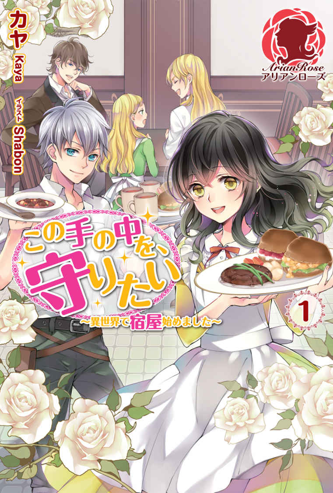

| アリアンローズを読もう！トライアルBOOK3 アリアンローズトライアルBOOK | |
| 空谷玲奈 & 瑞本千紗 & 玉響なつめ & 遠野九重 & 深木 & カヤ | |
| 株式会社フロンティアワークス (2018) | |
この作品はフィクションです。
実在の人物・団体・事件などに一切関係ありません。
乙女ゲーム六周目、オートモードが切れました。 １ 《サンプル版》
著者 空谷玲奈
イラスト 双葉はづき
プロローグ
電飾の様なきらびやかな音が私の耳に鳴り響く。
今回で五回目のそれはもはやどこか馴 染 み深い。
私の意思とは関係なく眉間には皺 が寄り、唇は噛み締められ、両手は痛いくらい握られている。きっと周りから見ると今の私は屈辱と悲しみに打ちのめされているのだろう。
実際は悲しみなんて微 塵 も無く、感想はただただ終わったんだなーってだけなんだけどね。
「どうして......どうしてなんですの!! 」
絶望に打ちひしがれながらも現実を認めたくなくて、思考とは真逆にヒステリックに叫ぶ姿は、自分でも凄い癇 癪 持ちだと思う。意思に反して動く口は何度もどうしてだと呟 いているが、幸せに満ちた空間では不気味でしかない。ホラーだホラー。
「......マリアベル」
マリアベル。それは私の名前。
プラチナブロンドの少し長い髪に黄金色の瞳をした美男がこちらを見つめ、口を開いた。
「マリアベル、すまない。俺は......カレンが好きだ」
「っ......!! 」
衝撃に打ちのめされた私がこの場を走り去るまで後三秒。
そして視界が暗転するまで後、七秒。
＋ ＋ ＋ ＋
『LinaLia 』──剣と魔法の世界で様々な困難を乗り越え愛を育 む、王道恋愛ファンタジー乙女ゲームのタイトルだ。
舞台はアヴァントール魔法学園。王族貴族の華麗なる血脈から芸術家の子息まで、財ある者達が通う超セレブ学園に、稀 なる才能を見込まれた田舎の平民であるヒロインが転入して来るところからゲームは始まる。
攻略対象は五人。一人は教員、残りは先輩二人、同輩一人、後輩一人とバランス良く様々な年代の恋愛が楽しめるようになっている。勿論皆、容姿端麗家柄良好。二次元スペックのえげつなさが半端ない。
そしてそんなえげつないほどハイスペックな王子様達と恋愛を繰り広げるヒロインは、カレン・フロウ。
金 糸 のストレートボブ、深海を思わせる碧 眼 、透き通る様な白い肌。愛らしさの化身と言わざるを得ない美少女。
性格は優しくて穏やか、明るく前向きで恋愛には天然記念物並みに鈍い。そしてこの世界では類 稀なる才能『強化魔法』を備えた、安心安定のヒロインスペック保持者。
ここまでが簡単な『LinaLia』の舞台とキャラクターの設定となるが、このゲームにはどの攻略対象にも共通する恋愛のテーマがある。
それは、題名にもなっているリナリアの花言葉。
『この恋に気付いて』
少し分かり辛いかもしれないので明記しておくと、このゲームの絶対的恋愛テーマは『許されぬ片思い』だ。
攻略対象五人には個別ルートに入ると親公認の許嫁 が出来る。
許嫁の名はマリアベル・テンペスト。
菫 色のふわふわ波打つロングヘア。パステルパープルの瞳は黒目がちで、エクステみたいな睫 毛 にびっしり縁取られている。白 磁 を思わせる白く滑らかな肌も、小さな顔も、華奢ながら美しい曲線を描くシルエットも、これまたヒロイン同様二次元の権利を余すところ無く使った超絶美女......なのだが。
ヒロインの甘い愛されフェイスとは真逆に位置する悪役百二十パーセント仕様フェイスである事が彼女のポジションを物語っているのではないだろうか。
さて、長々語らせていただいた所で本題に入ろう。恐らく大多数の方が予想しているかと思うが。
私は今その『LinaLia』の世界にいる。
悪役令嬢、マリアベル・テンペストとして。
第一話 こんにちは、赤ちゃん
一周目の時はとにかく驚いた。
目を開けたらいきなり高等部の始業式、しかも絢 爛 豪華って言葉が似合いそうな建物で行われるそれについていける人間はいないと思う。内心混乱を通り越しておかしくなっていたが、私の意思が一切反映されない表情と言動は好き勝手に暴言暴挙のオンパレード。ありのままおかしくなって変質者認定も嫌だが、悪役令嬢として嫌われロードを邁 進 するのも辛すぎる。平和の尊さが身に染みた。
二周目は、夢であってくれという切実な願いが九十九・九パーセント叶わないという事実に内心泣きながら過ぎていった。
ある意味一周目よりも絶望感は大きかったかもしれない。エンディングを迎えれば戻れるかもしれない、という一 縷 の望みをぶった切られたのだから。いるかどうかも分からない神様を恨んだし、ちょっと呪った。
三周目には、もう諦めていた。開き直ったともいう。
だってどんな行いをしようと、嫌われようと、私に出来る事など何もない。なんたって私は自分の意思で喋 れないし動けないのだから！ 所 謂 、オートモードってやつだ。
知らぬ間に押し付けられていた全自動の身体は、嫌われる為の行動しか取らない働き者の悪役令嬢だったとか天罰としか思えないんだが。悪役とかアンチヒーローとかってカッコいいかもしれないけど、まず自分の意思で行動出来る事が最低条件だと思うんだよね。意思の無い悪役なんてヒーローに蹴散らされる黒タイツの雑魚キャラ以下、かっこよさの欠片もないな。自分の事だけど。
そして今終わったのは、五周目のエンディング。
初めの頃は少量の希望と、それを裏切られ地獄に叩き落とされる感覚にうちのめされていたが、五回目ともなると何の感慨も無い。
今終わったのは最後の攻略対象、今回も私は国を追われた挙句消息不明となります。そろそろ国を追い出されるのにも動じなくなってきた。寧 ろご臨 終 決定より穏便だとさえ思う。これから始まる六周目はもう何の知識も無いが、元々あった所で役には立たない。精々私の心の準備が出来るだけ、オートモードである限り『知っている』事に意味は皆無。それを悲しいと思わなくなった自分の順応力とスルースキルに悲しくなるが、オートモードで生きる為には必要不可欠なスキルだ。
嫌過ぎる慣れに絶望感は無くなったけど希望も消え去った私の耳は音が聞こえなくなり、次いで目を閉じたわけでもないのに視界が一気に暗くなる。
時間にして、数秒後。目を開ければ毎度お馴染みである高等部の始業式──。
「.........？」
開いた視界に映ったのは、パステルピンクの天井。高そうなシャンデリアが可愛いなーとか現実逃避をしている場合ではない。
今までの経験上、私がいるのは見慣れた講堂のはず。
「マリアちゃん、起きた？」
「っ.........」
困惑していた私の耳に届いたのは、野太い男性の声でも聞こえやすさを重視した女性の声でもなく。綺麗で、優しいよく耳に馴染んだ女性の声だった。
そして視界の端に見えていた手 摺 を掴む手。短く切られた爪から、ゆっくりと視線を上げていく。
パステルパープルの双 眸 。大きくて丸くて、幼い印象のたれ目。緩く編まれた金髪に繊細な装飾の髪飾りがよく似合っている。顔面偏差値桁外れが量産される二次元の世界では地味な印象を受けるが、それでも充分可愛らしい女性だ。
でも......どちら様？ 今までの五周で一度も見た事が無い人。
「マリアちゃん、起きたならお着替えしようね」
「っ......!? 」
そう言って、両脇に手がかかる。混乱する中ゆっくりと持ち上げられた私は、自分が今までどんな場所にいたのかを知った。
天井の色から想像はしていたが、パステルピンクの壁。バルコニーへと続く窓は丸みがあって可愛らしい。白を基調とした猫足の家具はどれも高級感の漂う上品な造りだ。そして極めつけは、天 蓋 のついたベビーベッド。
そう、天蓋のついた『ベビー』ベッド。私の常識よりもはるかに上等な造りではあるけど用途は同じはず、赤ちゃんが寝る寝具。
勿論ついさっきまで私が寝ていた物の事だ。
「ぅ、あぁぅ！」
「マリアちゃん？」
『どうなってるの！』と、叫んだはずなんだけどなー。何で私の口から出るのは言葉になりそこなった平仮名の残骸なんでしょう。五周している間に私本体の言語力が幼児以下になったとか？ナニソレ泣キタイ。
......あれ、今喋った？ 口から言葉が出たって事は喋ってるよね？ たとえなりそこなっていても声帯は機能してるって証明はされたよね？
私は今確かに、私の意思で喋った。
そういえばさっきからじたばたする手足も唇も、私の意思が隅々まで行き渡っているかの様に想像通りの行動をする。視界に入る手足の大きさもそうだが、私にとっては『動く事』もとびっきり重要だ。
「どうしたの？ お腹空いたの？」
心配そうにあやしてくれる女性は恐らく私、マリアベルの母......だと思う。マリアベルが五歳の頃に離縁されて親権は父に渡ったとか......何周目かで言っていた気がする。自己主張が出来なかったから聞いてなかった。
ただ目の色がマリアベルと同じ、薄く淡い不思議な色。パステルカラーの瞳は珍しいって......これも何周目かで聞いたはず。
「うーぁ、ぁー」
「マリアちゃん、今日はいっぱいお喋りするね」
確認の為に何度か言葉を発してみるとやっぱりこれは私の声のようだ。意思疎通の仕事は放棄しているらしく全く何を言っているのか伝わっていないが、言ってる私もさっぱりだからな。
問題は、どうやら全自動機能は稼働していないという事で。
オートモードがアイデンティティじゃなかったのか。全員攻略したら後は好きにやってくださいと？ 無茶言うな。
「あー、ぁーぅ」
「ご機嫌だね、良い夢みたの？」
真逆です。むしろ今が夢なら良いのに。
何度試してみても私の口から出るのは単語にすらなっていない平仮名、それも『あ行』だけ。
ベビーベッド、あ行だけの発言能力、そして小柄な女性に持ち上げられる身体。
どうやら新たに始まった六周目の人生は、高等部二年でも、オートモードでも無い。
私自身の意思で話し、行動していく......拘束のない、自由な赤ん坊のマリアベルとして。
オートモードの終了を喜ぶべきなのか、乙女ゲームの世界から逃れられなかった事を嘆くべきなのか。そして何故高等部二年の状態で全自動を終了してくれなかったのか。
色んな不満と希望が一遍に訪れる中、私はまず目先の赤ちゃんの生活を思い起こして泣きたくなった。
第二話 いきなり崖っぷち
マリアベル・テンペストです。三歳になりました。
展開が早い？ 赤ん坊の日常なんて語る所がない......いや、むしろ語りたくない事が満載過ぎるので割愛させて貰 いましたが何か？
二日で全自動の頃が恋しくなるくらいに辛かった。人は羞恥心で死ねないのだと痛感させられた。羞恥心に殺傷能力が有ったなら私は間違い無く息絶えていただろう。むしろそうなりたかった、八割本気。
中身は高等部二年生を五回経験している。活動期間は一周一年だからトータルしても五年だけど。精神年齢は自立しているので、まさに某小学生探偵と同じ境遇、嬉しくは無い。
と、諸々の事情を考慮しての割愛。異論は認めません。今まで自己主張が一切合切出来なかったせいか、私のスルースキルは完璧ですからね！ 嬉しくは無い。
話を戻そう。三歳になった私がまずした事は、覚えている限りの情報を書き出す作業。紙とペンを持ってお絵かきに夢中！ な光景が違和感なく見えるまで待ちました。忘れない様に必死だったよ、私記憶力に自信ナシな人間なので。
情報は貴重、オートモードが機能しない今は迂 闊 に動くと破滅か死。生が無いとかどんなクソゲー、今すぐ売却してやりたい。
まず、タイトルは『LinaLia』。花言葉とかけて婚約者の居る相手との恋愛を楽しむ乙女ゲームで攻略対象は五人。
ゲームの舞台、アヴァントール魔法学園のあるクレーネ王国第二王子『ルーナ・ビィ・レオーノヴァ』。
世界一の火炎魔導師を祖父に持つサラブレッド『サーシア・ドロシー』。
国の宰 相 であるミリアンダ侯爵の子息『ツバル・ミリアンダ』。
外交を生 業 とするジュリアーノ伯爵の末 子 『ネリエル・ジュリアーノ』。
四人をクリアする事でロックが解除される隠しキャラ、学園教員『グレイアス・ファニー・サンドリア』。
勿 論 全員イケメン美形のオンパレード。立ってるだけでお金が稼げそうな、ヒエラルキーのトップ集団。直視したら目が潰れそう。
ヒロイン『カレン・フロウ』については平民である事と強化魔法の使い手である事くらいしか情報が無い。過去五周を思い出してもそれ以上何も出てこないって、どんだけヒロイン嫌いなんだよマリアベル。
そして『LinaLia』のメイン悪役。ヒロイン、攻略対象に並んでキャラクター紹介に載るくらいには重要な役割を担う、私、マリアベル・テンペスト。
クレーネ王国の公爵家に生まれた一人娘。母に関しての情報はほとんど語られていないが、マリアベルが五歳の頃に離婚し、親権は父方が持つ事になったとか。一人娘に加え母がいない、寂しい思いをさせまいと父はマリアベルを甘やかしに甘やかして溺 愛 した。目に入れても痛くないってこれか、ってくらいに。内心私は引いてました。
そんな、マリアベルの為ならたとえ火の中水の中地獄の底奈落の底、な父に育てられたマリアベルがまともな性格に育つ訳が無く。
『平民だから気に入らない』とヒロインを犯罪スレスレ......ではなく、犯罪？ 揉み消しますが何か？ の精神で苛 め倒す。『好きな人が出来た』と父の金と人脈と権力を惜しみ無く使って婚約者になる。我儘自己中最低令嬢の完成だ。破滅か死も自業自得のクズっぷり。全自動の頃なら腹を抱えてざまぁみろと大笑いが出来たのに。
今の私にとっては死活問題だ。苛め、ダメ絶対。愛の無い婚約、結婚も反対。
今ならば私が気を付ける事が出来る。平民だからって苛めたしりない。好きだからって無理矢理婚約に漕ぎ着けたりしない。
でも、もし全自動に戻ってしまったら？
今自由に動ける話せるからって、これからもそうである保証は無い。現に過去五周は全自動だったのだから。
また甘やかされて、調子にのって、我儘放題しはじめたら？ その先に待つのは破滅か死、生無しのクソゲーまっしぐら。
そして......もし、最悪の瞬間に全自動が切れてしまったら？
思い出す最悪の日々、呼吸をするように人を見下し傷付けていくマリアベルに罪悪感で絞 殺 されるかと思った。発狂もしたし、心が壊れる寸前くらいは何度となく経験してる。
苦しかったし辛かった、今思い出しても苦しい辛い。それでも私がギリギリの所で壊れずに済んだのは、全て『私ではなくマリアベルに対する言動』なのだと割り切れる理由があったから。責任を押し付けられる相手がいて、実際当事者はマリアベルで、叩き付けられる罵 詈 雑 言 もマリアベルに向けられたものだから。
マリアベルの行動が引き起こす事態に対し、マリアベルを盾にする事で何とか自分を保ってきた。
もし、その盾が無かったら。もし、私自身があの場所に立っていたら。
あの声を、あの視線を、何の防具も無く浴びる事になったとしたら。
その恐怖と、無実なのに責められる理不尽に対する怒りに、私は耐えられるのだろうか。
つらつらとノートに書き記して、私は気が付いた。
私がまず初めにすべき事。それはフラグを折る事でも、破滅後の生活準備でも無く。
「......家庭と生活の環境を変えなければ！」
たとえ全自動になろうとも破滅に向かわないよう、マリアベルが歪 まず、ヒロイン同様......とまでは行かずとも普通の価値観を身につけられる環境を作る。
マリアベル・テンペストが我儘自己中最低令嬢になる芽を摘む。
それこそが、やっと自己主張の場を得た私が一番にすべき事なのだと。
× × × ×
環境改善の為、私が真っ先に考えたのは両親の事だ。
マリアベルが我儘になったのは父親が甘やかしたせいで、その理由は両親の離婚なのだが、私には一つの疑問があった。
何故、二人は離婚したのだろうか？
過去の五周で、私は離婚の理由は母親にあるのだと思っていた。
何故なら、父は母をとても愛している。
父が名付けたという『マリアベル』の名も『聖母マリア』と母『ベールデリア』からとった物だ。
マリアベルを過度に甘やかすのには離婚などの理由がある。しかし元々父は自分と同じ顔をしながら母親と同じパステルパープルの瞳を持つ娘を溺愛していた。自分と、愛する人との特徴を併せ持つ娘が可愛くてしかたがなかったらしい。
もしかしたら離婚で寂しい思いをしている娘を甘やかしながら、自分の寂しさも埋めていたのかもしれない。
そんな父が自ら離婚を申し出るはずがない。
だから離婚を申し出たのは母の方なのだろうと勝手に思っていたのだけど。
「......あの、お母様は」
「奥様はお疲れなんですよ」
「......そうですか」
メイドはそっけなく答えた。
かれこれ一週間毎日同じ返答ですけど。私のお母様は随分多忙なんですね。因 みにご当主であるはずのお父様は、毎日おはようの挨拶を言いに来てくれますけど。貴族の当主より忙しい奥さんって何だそれ。
家の事も私の世話も全部メイドがやってるのに......お母様、多趣味なの？ そんな馬鹿な。
「どうしたもんかなぁ......」
母親に会うのってこんな大変な事だっけ？ 最後に話したのいつだろう......ってくらい関わりが少ないんですけど！
私の食事が離乳食になったのをきっかけに、私の世話は母ではなくメイドがするようになった。そこからお母様との関わりは著しく減少し、今では顔を合わせても会話がない。顔を合わせるのすら週に一回あるかないか......あれ、これって親子？
せっかくある程度自由に出歩けるようになったのに......。
二人が離婚する五歳までに、離婚の原因を探り、それを取り除くなんて出来るのだろうか。
何たって私はただ今三歳の幼児。離婚しないでー！ と騒げば何とかなるかもしれないけど、その兆しも分からないままに行動して、笑って流されたらそれこそ詰む。
「これは思った以上に状況が悪いな......」
過去五周の記憶もあるし、何とかなるだろうなんて楽観視したのがダメだったのか。あぁもう全自動が恋しい......再発は全力で遠慮するけど。
第三話 猫被りって楽じゃない
さてさて、人生楽観視を数日でぶち壊された私がもがきながらも進めない、ストレス耐久の生活を送っていたある日。薔薇園の異名を持つ、我が家の色彩豊かな薔薇が咲き誇る温室で、私は悩んでいた。
私はまたしても気が付いてしまったのだ。......というより、見て見ぬふりをしたくて頑張っていたけど目の前に聳 え立って動かないそれを無視をするにも限界が来た。普通の三歳児だったら気が付かなかったかもしれないが、残念な事に私は普通の、素直で純粋な三歳幼児では無い。
だから、気付いてしまった。気付かなければ幸せだったのに、気付いてしまった。
私......使用人の人達に嫌われてる!!
改めて自覚するとダメージが大きいな。心が抉 られた。
そういえば、エンディングでマリアベルは学園全員、今まで取り巻きをしていた人達にも手のひらを返した様に嫌われたっけ......全自動だったから笑えてたけど、あれが自分に来たら私は耐えられない。しかもその上で攻略対象にすがりつくなんて......生き恥も良いとこだ。黒歴史どころの話じゃない。
話がそれた。とにかく、私は使用人達に嫌われている。
とは言え向こうは大人でこっちは三歳（見た目）、分かりやすい嫌悪を向けられる事は無いし意地悪もされない。したらクビだしね。あの（娘大好きを公言している）父が黙っているわけが無い。
では何故私が気付いたかと言うと。
「あの、おみずを──」
「お持ちしましたお嬢様」
「......ありがとう」
とか。
「髪がすこし──」
「今結わえます、お嬢様」
とか。
「あの──」
「何でしょうか、お嬢様」
とか。それだけならただのメイドさんなんだけど、問題は彼女達が皆私に対して無表情って事だよ。
さすが元々乙女ゲームだった事もあって使用人も皆見 目 麗 しいんだけどね、美形の無表情って怖い。しかも口調まで無機質だから余計に。何なの、皆感情無いの？
しかも、それだけでなく。
「あの、お母──」
「お嬢様、奥様はお忙しいんですよ」
って、毎回毎回お母様に話しかけようとする度 邪魔されるし！
忙しいとか嘘だよね？ 普通にお部屋にいらっしゃったじゃねぇか！ 親子のコミュニケーション邪魔すんな！
「......つらい」
母親と話すのに何でこんな苦労しなきゃいけないんだ。早くお母様とお話しして離婚の原因を探らなくてはならないのに！
「......やさしかったのになぁ」
離乳食になる前、私の世話をしてくれたお母様は優しくて可愛くて、私は一瞬で大好きになった。
笑いかけてくれる度、言う事を聞かない四 肢 に対する怒りが消えていったのを覚えている。まぁその後の食事の時間は拷問に近いものがあったけど......うん、思い出すまい。
そんな母が、父と離婚した原因。
自分を愛してくれる人と、娘を置いて家を出た原因。
想像がつかない。全く、一切、思い付かない。
「どうしようもない理由......とか？」
家の事情、夫婦の事情、憶測は広がるがどれもピンとこないのは登場人物の情報が少な過ぎるから。
過去五周、マリアベルは母親に対して全くの無関心であった為ゲーム内で母親に関する話題はほとんど出てこない。勿論キャラクターデザインも存在しない為私は六周目で初めてマリアベルの、延 いては私の母の顔を知った。
つまり過去五周実際に関わった攻略対象やヒロイン、お父様達の様に予備知識がゼロの状態なのだ。第一関門とも言える両親の離婚を止めるにはお父様側だけの情報では不十分、いやむしろお母様側の情報が無いと始まらない。
だから何としてもお母様とお話をして情報を得たいのに......。
「というか、何で会えないのさ！」
振り出しに戻る。うん、やっぱり会わない事には始まらないんだよ！
思わず声を大にして叫んだ。そろそろストレスも限界なんです。
一応公爵令嬢として、両手を振り上げて不満を叫ぶなんてはしたないまねをすべきでは無いのだが、ここなら大丈夫。この薔薇園は、日々年相応の言動に疲れた私が何とか一人になれないかと屋敷中を歩き回って見つけた場所なのだ。初めは神出鬼没な能面メイドがどっかにいるんじゃないかと緊張していたが、今ではがっつり椅子の上で体育座りなんかしちゃうくらいに慣れ親しんでいる。それだけ邪魔され続けているんだと思うと悲しいけど。
「......みみ、いたい」
「っ......!? 」
ここは私しかいないから気を遣う必要が無い......と今説明したばかりなのだが。
撤回、人がいた。非常にマズい。今の私は完全に気を抜いていた。
どのくらい？ 椅子の上に体育座り、からの胡座 、からの独り言です。令嬢どころか普通に女子力低い、そして私は三歳児。
絵面がシュール過ぎる。
「え......ぁ、い、いつから......っ」
「おれの方が先だった」
「そ、そう......」
つまり初めから見られていた、と。
盛大な独り言も。体育座りから胡座に至るまでの流れも。
泣いてもいいですか。
「......みぐるしいすがたをお見せしましたわ、ごめんあそばせ」
今さら取り繕 っても意味は無いが、開き直ってしまうには情報が少ない。
まず......この子、誰？
テンペスト家に子どもは一人。私だけだし使用人は独身か、子どもがいてもすでに独り立ちしている人達ばかり。子どもらしい子どもは、私だけのはずなんだけど。
目の前にいる子は、私とそう歳の変わらない幼児だ。
天使の輪が煌 めく茶色い髪に、甘いミルクティーの様な亜麻色の瞳。少しつり上がった目元に同族として親近感を覚えるが、サラサラ靡 くストレートヘアは妬 ましい。毎日メイドに必死こいてセットして貰っている私への嫌味か。効果は抜群だ。
でも......やっぱり誰だ。
少なくとも攻略対象ではない。髪も目も、色が違う。
「わたくしはマリアベル、この家のむすめです。あなたはだれにきょかをえて、ここにいるのかしら」
自分で言っていて、なんて生意気なんだと思う。初対面の人に対して上から目線すぎる、三歳児の発言では無い。
でも、言い訳させて欲しい。私は、マリアベルなのだ。
悪役という意味ではなく、私はテンペスト家の令嬢マリアベル・テンペストで、三歳であろうとそれ相応の振る舞いが義務付けられている立場にある。
と言っても、私はずっとオートモードで暮らしてきた。たとえ今がマリアベルだからと言っても私の自我はオートモードの中ですでに確立されている。今さら身も心もマリアベルという公爵令嬢になど、なれる訳がない。強要されたら人格否定で訴えてやる。
勿論だからといって責任を転嫁や放棄出来るとも思っていない。猫を被ってやり過ごすくらい、過去五回マリアベルを経験した私には雑 作 も無い事。
被れる猫がマリアベルである事が問題だったんだけどね。気付くのが遅かった。
「わたくし、今ひとりになりたいの。出ていっていただける？」
お願いだからこれ以上私に黒歴史を増やさせないで。
「......へんなしゃべりかた」
どストレートな発言ありがとう。子どもって正直だね。でも女の子に変なんて言ったらモテないぞ！
「ふつうにしゃべりなよ。さっき一人の時はふつうだったじゃん」
「......やはり、きいてらしたのね」
一縷の望みを持ってたんだけど、木 っ端 微 塵 に粉砕された。
「会えないって、だれに？」
「............」
「だれに？」
ぐいぐいくるなこの子。そんなに興味持つ様な事でも無いだろうに。
答えたくないと態度で示しているはずなのに一切引く様子の無い少年に、結局私の方が根負けしてしまった。子どもの『なんで？』攻撃って純粋過ぎて回避が難しすぎる。
「......お母様よ」
「お母様......って、きみの？」
「ええ、わたくしのお母様。忙しいからって、ろくにおはなしもできない」
本当に忙しいかは甚 だ疑問だけどね。今日も会いに行ったら対応してくれたのは能面メイドさんで、お母様には会うどころか顔を見る事も出来なかった。
「......あいたく、ないのかもしれない」
もしかしたらお母様は私に会いたく無いのかもしれない。
それは私がずっと心の片隅に追いやり目を背 け続けてきた事だった。何故会えないのか、それは相手が会いたがっていないから。そう考えるのが一番自然だろう。
そうじゃない、そんなはず無い、何度も別の可能性に目を向けてきたけど、どれだけ視野を広く持ったってお母様は私に会ってくれない。使用人達も、お父様も、忙しいんだとか疲れてるんだとか、会わせてくれない。
そして、お母様自身も会いに来てくれない。
たった一人の娘と母親が話す事すらままならないのに、会いたがっているのも会いに行くのも私だけ。今の私は大切な目的の為にお母様に会いたがっているけれど、本物の......正真正銘三歳のマリアベルだったとしても、きっと母を恋しがるだろう。三歳なんて母親にも父親にも沢山甘えたい年頃。何より子にとって、娘にとって母親は特別な存在で、父親がどれ程自分を愛してくれていてもやっぱり母親からの明確な愛情が欲しい。
「あいたいのは、わたくしだけなのかもしれない」
口に出せば出すほどそれが事実の様に思えてくる。会いたいのも、親子の情が有るのも私だけなのではないか。そう思えてならない。
優しそうに見えたのも、私の錯覚だったのだろうか。そうじゃないと思いたいけど私にはその判断材料が無い。
言わば手詰まり。目の前は壁、ここを越えなければこの先の壁はどう変化するのか分からない、とても重要な関門なのに。
沈む気持ちと同じく下がっていく頭。
浮上させたのはあまりにもあっけらかんとした声だった。
「なら、きいてみればいいじゃん」
「え......？」
「きみのことすきかきらいか、お母さんにきけばいい」
第四話 難しい事なんてそうそう無い
簡単な事だ、そう言いたげな彼の視線が私を見る。むしろ何故そうしないのだと目が語っていた。
分からないなら聞けばいい。分からないなら、教えて貰えば良い。
全く思い付かなかった提案はまさに、目から鱗 。簡単な事なのに......いや、簡単だからこそ凝 り固まった価値観では導けなかった答えは天 啓 の様だった。
大袈裟じゃなくて結構本気で。こちとら死亡フラグがかかってますからね！
「ふふっ」
「......なに、いきなり」
嬉しくて思わず笑みを溢 した私に少年は不気味だと言わんばかりに後ずさった。いきなり笑った事は確かに驚かせたかもしれないけどその反応はどうかと思う。とは言え、今はそれ以上に嬉しいのでスルーしてあげよう。
「ありがとう」
「......？」
「よしっ！ それじゃあ、わたしは行くわ。さらば少年！」
「え──」
視界の晴れた私は相当テンションが上がっていたのだろう。
まだ何か言っている少年の声は右から左、ドレスをたくし上げ走り出した私に『公爵令嬢マリアベル』の猫はどこにもいなかった。令嬢である前に三歳児だしね、私。
短い腕にドレスの裾 を抱えて、短い足を必死に動かし全力疾走。
向かう先？ それは勿論、お母様のお部屋。
× × × ×
「アン、お母様はおへや？」
お母様の部屋について、どっから出てきたのか分からない神出鬼没の能面メイド『アン』に問う。
勿論ドレスも髪もつく少し前に整えて、ね。何 時 から何 処 からいたのか分からないアンにはバレてるかもしれないけど、言われないから気にしない。気にしたら負けだ、気にしたらキリがない。
「はい、そうですが......お嬢様、奥様は」
「そう、ならいいわ」
答えたアンの言葉を遮 り、母の部屋の扉をノックした。
アンが何を言うかなんて、これまでの経験で想像がつく。忙しいとか、疲れてるとか、嘘か真 か分からない理由で私をここから遠ざけるつもりなんだろう。
事実、ノックをした私に初めて能面が崩れた。予想外だったんだろう、お嬢様、と私を呼んだ声には焦 りが窺 えた気がする。感情有ったんだ......いや当たり前なんだろうけど、あまりにも能面過ぎて真面目に無感情なんじゃないかって疑ってましたよ。
「お母様、マリアベルです。はいってもよろしいでしょうか？」
「......マリア、ちゃん？」
「はいりますね」
「お嬢様──」
アンが止めるよりも早く扉を開けた。マナー的には問題だけどここで引いてしまっては前と変わらない。
止められるなら、止められる前に行動する。
少年と話して得た私の武器は荒削りすぎて諸 刃 どころじゃないけど、今は諸刃だろうが逆 刃 だろうが使わないと進めない。
扉を開けて中に入るとすぐに、窓際の椅子で本を膝に驚いた顔をした女性がこちらを見ていた。
久しぶり......なんて可 笑 しいけれど、私のお母様だ。絢爛豪華な部屋とは少しミスマッチな、派手と言うよりは清楚と言うべき出 で立ち。こちらを見て真ん丸くさせているパステルパープルの瞳も、記憶と違わない。
「しつれいいたします、お母様」
「マリアちゃん......どうしたの？」
突然の訪問にお母様も相当驚いているらしい。親子関係としては問題有りな反応だけど、今までの交流を思えば正常な反応だ。
軽くドレスを摘まみ上げて頭を下げる。了承無しに突撃お部屋訪問を強行した身として、最低限の礼儀だ。突撃している時点で礼儀云 々 言える立場じゃないけど、その辺はスルー。
三歳の小さなご令嬢である私には今、幼さとスルースキルくらいしか武器が無い。自分で言ってて何たる無理ゲー。しかし達成せねば私が殺 られる。使える物は最大限利用しないと。
そうと決意したらもたもたしていられない。お母様の目を見つめ、私は口を開いた。
「わたくし、お母様にしつもんがございます」
「まぁ......何かしら？」
「お母様は......わたくしのこと、おきらいですか」
「っ......!? 」
言えた。ちょっと噛んだけど、及第点だろう。まだ三歳なのだから言葉が滑らかに発音出来なくとも問題は無いはずだ。今回に至っては内容が内容だし、私が噛んだ事よりも余程重要な話だ。
娘から突然の質問......なのか微妙な発言にお母様は目を瞠 った。驚いているのと、内容を理解して悲しんでいる、そんな表情。
表情からすれば、嫌われてはいない......だろうか？ 表情を鵜 呑 みにするなら、私には嬉しい結果だけど......。
「ど、して......嫌いだなんて、そんな」
「ならどうして、会いにきてくださらないのですか」
そう、そこが私の楽観視を阻 んでいる。
会いに来ても会って貰えない。会えなくても会いに来て貰えない。
どうやら私は自分で自覚する以上にストレスが溜まっていたらしい。傷付いた様な、心外だと言いたげな、お母様の表情がとても腹立たしく感じる。
嫌いじゃないなら、どうして会ってくれないの。会いに来てくれないの。
勝手に悲しそうな顔しないでよ、何もしてないくせに。会おうとも、話そうとも、行動しようともしてないくせに。私ばかり必死になって、あなたは待ってるだけ。それなのに自分だけ辛いみたいな表情しないでよ。
「わたしのほうが、ずっとずっとつらかった!! 」
「マ、リア......マリアちゃ」
「さみしいのもつらいのも、わたしなのに！ マリアの方がいっぱいがんばって、いっぱいきずついたのに！ お母様がそんな顔しないで!! 」
酷い癇癪だ。見た目が子どもだから許される、私の精神年齢を考慮すると暴挙と言える光景だ。
泣き喚 く私にお母様も泣きそうだ。お母様の場合は泣きじゃくる私の放った『本音』も原因の一つだろうけど。
私も初めて気が付いた私の......いや、『マリアベル』の本音。私自身と、この体の本来の持ち主である三歳のマリアベルの感情が混ざり、一つの声になってどんどん口から流れ出していく。
「マリアは、お母様がだいすきなのに......お母様にはなしたいことだっていっぱい......でも、お母様はマリアのこときらいかもって、だから、いっぱいくるしくて」
嫌いにならないで、嫌わないで、大好きだから。
本当のマリアベルも、きっと三歳の頃思っていたのだろう。
私と同じように、お母様に嫌われているんじゃないか。
そして私以上に、不安で仕方なかったはずだ。
私と違って、本来のマリアベルは正真正銘三歳の幼 子 だったんだから。
不安で不安で、でもきっとマリアベルはそれを打ち明ける事無く、母も娘の不安に気付けずに......離婚を選んでしまった。理由は分からない、もしかしたらお母様も望んでいなかったかも知れない。でもマリアベルにとっては不安を確証に変える決定的な出来事。
嫌われていた。大好きな母に、愛されていなかった。
辛くて悲しくて......でも、嫌いになれなくて。行き場の無い想いが選んだ先が極端なまでの無関心。過去五周でなんの情報も無かった原因、予想の範囲内だが思っていた中で最も悲しい理由だった。
ただただ甘やかされたが故の性 悪 では無かったらしい。だからと言って許容される様な可愛らしい物では無いので過去五周に関しては『ざまぁみろ』としか思えないけど。
「そんな風に、思わせていたの......」
「っ......」
「......ごめんね、マリアちゃん」
泣き過ぎでしゃくり上がる呼吸、水っぽい鼻息。令嬢として、それ以前に女の子として、鼻水だけは耐えようと必死に顔に力を入れていると、ふわりとした柔らかい感触に包まれた。
「あなたは......私の全てだわ。心から愛してる、今までもこれからも永遠に......大好きよ、マリアベル」
抱き締められている。そう気付いてしまうともう駄目で、私の中の何かが溢 れた。
私であって、私でない。多分『マリアベル』にとってとても重要な何か。
父でも、能面メイドでも無い。切望し続けた母親の温もりに包まれる、欠けていた、欲しかった物を手に出来た。
『幸福感』とは、今この時の為にある言葉なんだと。
「お、かぁ......さま、おかぁ、さま」
「寂しい想いをさせてごめんね。マリアベルの言う通り、お母様が悪かったの」
「う、ぁ......うあああああ......っ」
髪をすく優しい手を、柔らかな笑みを、甘やかす声を、マリアベルは初めて聞いた。
私は知っている。物心が万全の状態で生を受けた私は赤ん坊の頃に与えられた恩恵を覚えている。
でも、マリアベルは。年相応の成長をしてきたマリアベルは知らない。私が期待を抱かずにいられなかった、あの優しい笑顔も、名前を呼ぶ声も。マリアベルは今、その全てを初めて知ったのだ。
ならば......仕方がない。
初めての母の温もりと、今までの不安を払 拭 する愛情を、存分に感じさせてやろう。
たとえ、後で我に返り逃げ叫びたい程の羞恥に襲われたとしても。
第五話 前進と後退の間
「っ......、ずっ」
「大丈夫？」
「あい......」
いいえ、大丈夫ではありません。今すぐ埋まりたいくらいには、羞恥心で一杯です。
泣きに泣いて約十分、ようやく泣き止んだ頃にはさっきまで『マリアベル』に同調していたはずの頭は冷え、私は羞恥に悶 える事になった。
......さっきのは何だったのだろう。
オートモードの時と似た、でも全く違う感覚。涙も、言葉も、勝手に出ているようであれは確かに私の......マリアベルの本心だった。身動きの取れないオートモードとは違う、私の意思でもあった行動。でも泣きじゃくったのも喚いたのも、あれは『本来のマリアベル』の行動であり想い。
自分であって、自分ではない。まるで私自身と本来のマリアベルが一つになっていく様な、不思議な感覚。
オートモードの時も、三年間の人生でも、感じた事の無い現象だった。
「──ちゃん......マリアちゃん、どうかした？ やっぱりどこか辛いの？」
「え......あっ、いいえ、だいじょうぶですわ」
心配だと分かりやすく表情を歪めているお母様に慌てて首を振った。
いかんいかん、今は他の事を考えている暇は無い。この最大のチャンスを逃せば後ろはもう断崖絶壁、下がった瞬間真っ逆さまに転落して、良くて大怪我下手したらそのまま御臨終だ。摘める芽は摘んでおかねば。
「おみぐるしいすがたを見せまして、もうしわけありません」
「いいえ......謝るのは、私の方だわ。娘の気持ちに気が付いてあげられないなんて」
いや、まぁ......過去五周のお母様になら多少の責任はあったかも知れないけど。三歳の娘に寂しい思いさせていた訳だしね。
でも、今回は歳相応のマリアベルでは無く『私』だ。そりゃあ寂しさがゼロだった訳ではないし嫌われているかもと思ったら悲しかったけど、中身は大人。内心を隠して笑うくらいの技能はある、はず。今さっき泣き喚いたから説得力無いけど、あれは私であって私ではなかったとノーカンにしていただきたい。
「......お話をしましょう。今からでも、沢山時間はあるわ」
「っ、はい......！」
優しく笑うお母様は数年前に見た姿と変わらない。
現在三歳。原作通りならば二人が離婚するまで後二年、既に原因があるのかそれともこれから浮上するのかは分からないが、一歩前進した事は事実。
私はようやく、踏み出す事が出来たのだ。
※この続きは製品版でお楽しみください。
婚約破棄の次は偽装婚約。さて、その次は......。 １ 《サンプル版》
著者 瑞本千紗
イラスト 阿久田ミチ
第一話 婚約破棄は大歓迎。ですが、呪いはいりません
「君、伯 父 上の子供に生まれてよかったね。下 賤 な一般の民の血が混じる上に容姿も悪いというのに、伯父上のたった一人の娘だから、生 粋 の貴族たるこの僕と結婚できるんだよ」
アナベル・カウリーがその日出会った従兄 。婚約者として紹介された少年は、大人たちの目がない場所で二人きりになると、愛想のよい笑顔が消えた。
「大人の目のあるところでは、仕方がないから婚約者として扱ってあげるよ。僕は、伯父上にも父上にも次代のカウリー伯爵家の当主として期待されている、良い子だからね」
ぞっとする薄笑いへと豹 変 したのに驚いて言葉が出ないアナベルを、そのままひとしきり罵倒すると、従兄はすっきりした様子で背を向け去って行った。
「あれが、良い子......」
五歳のアナベルは呆然としてその背を見送る。以後、従兄の演じる良い子、がどれほど大人たちに好かれて愛される存在であるか知る事となった。
◆ ◆ ◆ ◆
父を始めとし、アナベルの周囲をすべて己 の味方に引き込む従兄の良い子ぶり、外 面 のよさに辟 易 しながら十年。
十五歳となったアナベルは、婚約破 棄 ができないまま屋敷の裏庭を散歩していた。一人になりたい、と家人に断っているので近くには誰もいないはずだった。
ところが、微 かな音が聞こえた。
「誰？」
屋敷の周りを囲う生け垣の隙間から、瀕死のうさぎがよろけながら入ってきた。獣に襲われ必死で逃げてきたのがわかる。茶色い小さな身体に大きな引っ掻 き傷。そこから止 め処 なく血が流れているのを目 の当たりにした瞬間、アナベルはうさぎの傍 に駆け寄り座り込んでいた。
「水、集 え。うさぎさん、痛いの消えて元気にな〜れ！」
命の灯 が尽きかけているその身を腕に抱き、急いで魔法の呪文を唱える。途 端 にうさぎが青い光に包まれた。すると、瞬 く間にうさぎの身体にあった大きな傷が跡形もなく消える。
ほっとして安 堵 の息をはいたアナベルの腕の中で、うさぎがぴくんと身体を震わせた。突然己の傷が癒 えたことに驚いているのだろう。丸い瞳を忙 しなくきょろきょろさせてこちらを見上げてきた。『あなた、私に何をしたの？』と、問うてくる声が聞こえてきそうな瞳を向けられたアナベルは、にっこり笑うとその柔らかく暖かい背を撫 でた。
「この周囲にあなたを狙っている獣の気配は感じないわ。諦めて去って行ったようね。今の内に、気を付けて棲 み処 に帰るのよ」
すっかり元気になったうさぎに語りかけ、アナベルは腕に抱いていたのをそっと地に降ろした。すると、前方の生け垣が外側から大きく揺れた。
「おねえちゃん。魔法使いなの？」
「！」
うさぎの通ってきた隙間から、少年がこちらを見ている。小さな両手で懸命に隙間を大きくしようとしていた。
こちらを凝視している少年に、アナベルは盛大に首を横に振った。背の中ほどまで伸ばしている栗色の髪が、それに合わせてぶんぶん左右に揺れる。
「嘘だ。だってあのうさぎ、怪我をして死にかけてた。ふらふらしながら、あっちの森からこの庭に入るのを僕見てたんだ。おねえちゃんが、魔法で治してあげたんでしょ！」
十五歳であるアナベルよりいくつか年下であろう少年は、こちらが否定したのをまったく信じようとしなかった。しっかり見られていたことに、哀れなうさぎの姿に動揺して人避けの結界を張らずに魔法を使ってしまったことを後悔するも、遅い。
うさぎは感謝の気持ちを示しているのだろうか。何度も何度もアナベルを振り返りつつ、屋敷の傍にある森へと去った。
「私は何もしてないわ」
アナベルは、自身が魔法使いであることを公言するつもりはない。このまま誤 魔 化 して終わりにしようと、立ちあがった。背丈もアナベルのほうが頭一つ分ほど高く、生け垣を挟んで少年を見下ろす形となった。
ところが、背を向けようとしたところで、少年は何か企 みが透けて見えるような顔をして笑った。
「お屋敷のみなさーん！ ここに貴重な魔法使いが......もがっ！」
「騒いでは駄目よ！」
大音声で叫びをあげた少年に、アナベルはぎょっとしてその傍に移動した。慌てて口を塞 ぐと少年は、一瞬で互いの間にある距離をゼロにしたアナベルを呆然として見上げていた。
「移動も、自由自在なの？」
「ここに魔法使いなんていないわ。どこの子か知らないけど、早く家に帰りなさい」
問いには答えず、少し口調を厳しくして諭 すように言葉をかける。
「いるよ。おねえちゃんは魔法使いだ。誤魔化すなら、お屋敷の人たちが集まってくるまで叫ぶよ」
しかし、ここでも真っ向から否定されてしまった。どうしたものかとアナベルは天を仰 ぎそうになる。
「違うと言ってるでしょ」
少年の身なりから察するに、自分のような貴族ではなく一般市民の子弟といったところだろう。
領民の子供であるなら今後、カウリー伯爵家に魔法使いがいると騒ぎ立てるかもしれない。領内にそんな話が広まれば、これまで秘密にしてきたのが水の泡となる。その最悪な展開を思い目の前が暗くなりかけたところで、少年に飛びつくようにして腕を掴 まれた。
「お願い。そんなこと言わずに魔法で僕の母さんを助けて！」
必死の形 相 で懇願される。少年の目にはみるみる内に涙が溜まっていた。
「お母さん？」
綺 麗 な涙とお母さんという言葉。それは、アナベルの心の琴 線 に触れるものだった。
「僕、家族でここに旅行に来てるんだ。それで母さん、昨日まではちゃんと元気でどこも悪くなかったのに、今日になって突然倒れて......お医者に診てもらったら打つ手がない、もう意識は戻らないって......だけど、僕は......」
そこまで言って少年は大きく首を横に振る。目から溢 れた涙が頬に幾筋も伝った。
「諦めたくないのよね」
旅行者だったのかと思いつつ、アナベルは少年に掴まれていないほうの手で、その頬に零 れる涙をそっと拭った。
「だから、ご領主の伯爵様ならもっといいお医者を知ってるかもしれないと思って訪ねて来たんだ。父さんは伯爵様に無理を言っては駄目だと言ったけど、何もせずに母さんが死ぬのを待つなんて嫌だ！」
顔を真っ赤にして叫んだ少年の肩を、アナベルはぽんぽんと優しく叩いた。
「うちのカウリー領はあまり裕福とは言えないから、お医者様はあなたが診てもらったと言った人が一人きりなのよ。父に頼んだとしても他のお医者様の手配は難しいでしょうね」
人命を救う医術を修めるのは難しく、医者は少なく医術は高額なものである。
そのため、カウリー領のような王都から遠く離れた田舎ではあまり高度なものは受けられない。一つでも診療所があり医師が常駐しているだけまだ良い、とされているくらいだ。
「うちの領......父？」
きょとんとした様子で首を傾 げた少年に、アナベルは軽く頷 いて見せる。
「あなたの言った伯爵様は私の父よ。私はその一人娘で、アナベル・カウリーというの」
「おねえちゃんが伯爵様の......僕、知らなくて......も、申し訳......」
少年の身体が小刻みに震えており、その顔色は青くなっていた。
「かしこまらなくていいわ」
アナベルが貴族と知り、少年が慌ててその場に跪 こうとしたのを止める。彼は本当に、アナベルが伯爵家の人間であるとはまったく思っていなかったようだ。
カウリー伯爵家は、身分制度があり王侯貴族が権力を握るベリル王国において、貴族の位としては上から三番目のものを持つ。なので、少年のような一般の民からすると雲の上の身分の持ち主となるのだろうが、アナベルは自身が貴族だからと無理に平 伏 を求めるつもりはなかった。
「魔法使いが、うさぎを助けるためにお屋敷の庭に入っているだけだと......」
ごにょごにょと呟 くように言った少年に、アナベルは苦笑する。
「そう思われても当然でしょうね」
アナベルは特別金のかかった豪 奢 な装いではない。それどころか宝石飾りのほとんどない姿に、伯爵家の娘らしくないと少年は思ったのだろうが、いくら貴族といえど豊かで広大な領地や財力がなければ、暮らし向きは華 美 とは縁遠いものだ。
過去においてはカウリー家も大きな領地を所有していたのだが、様々な失敗により少しずつ手放しながら暮らしを支えて現在に至るのである。過去には持っていた国政に関与できるような力も今は無く、所領も僅 かな物となっていた。早い話が、名ばかりの貴族という存在である。
「おねえちゃんなんて呼んでごめんなさい。アナベル様」
「おねえちゃんでいいわよ。せっかくわが領に旅行に来てくれたのに、お母様を助けられるお医者様を手配できなくて、こちらのほうこそごめんなさい」
自然豊かな地とは思うがカウリー領は目立った景勝地ではない。観光客が来るなどとても珍しいことであるのに、もてなすどころか、これでは最悪の思い出の地としてしまいそうだ。
「僕、貴族じゃない一般市民だよ。おねえちゃんは貴族様なのに、僕に謝ってくれるの？」
「貴族だから一般市民には何をしても謝らなくて良いという考えが、私は嫌いなの」
不思議そうにアナベルの顔を見ている少年に、己の真情を語って笑みを向けると、縋 るような目を返された。
「おねえちゃん。お医者じゃなくて、おねえちゃんが助けて。僕にできることなら何でもするから、お願い！」
「魔法は万能の便利な道具じゃないの。あなたのお母様に寿命が残っていなければ助けることはできない。それでいいと言うなら治療に行くわ」
綺麗な涙をぼろぼろ零しながら乞 われては、白旗を掲げるしかない。アナベルはこれも何かの縁だろうと引き受けることにした。
「おねえちゃん、ありがとう！」
少年が光り輝くような満面の笑みを浮かべる。泣き顔を見ているよりも、そのほうがいいと思いながら少年の頭を撫でた。
「お母様の命、なんて言われたら助けないわけにはいかないわ。でも約束してね。私が魔法使いだということは誰にも言っては駄目。もしあなたがそれを口にして、この地の皆が知ることになったら、私、あなたに何をするかわからないわよ」
真剣な目で見据えたアナベルに、少年の喜びの顔が途端に強 張 った。
「わ、わかりました。絶対におねえちゃんの事は内緒にします！」
こくこくと懸命に頷き、丁 寧 に約束を守ると誓った。偽 りの感じられないその姿に、アナベルは満足の笑みを浮かべた。
「では、契約成立ということで行きましょうか。お母様はどこにいるの？」
アナベルの問いに、少年はすぐさま宿屋の場所と泊まっている部屋を答えた。そこはこの屋敷から離れているが、移動魔法の使えない距離ではない。
アナベルは少年と共に宿屋へと移動した。
「え。なんで......ここ、伯爵様のお屋敷からかなり離れてるのに......」
少年が辺りを見渡しながら呆然として言った。少年一家は宿屋の一階、裏庭側の端の部屋に泊まっており、誰にも見られる事無く移動できた。アナベルは庭に面している窓から室内を見る。室内には病 に侵された女性が寝台に横になっていた。その傍の椅子に座り女性の手を握って俯 いているのが、おそらく少年の父親だろう。
移動魔法に興奮冷めやらぬ少年の肩を、アナベルはポンと叩いた。
「よかったわね。お母様の寿命、まだちゃんと残ってるわ」
あの状態ならば助けられる。少年を再び泣かせなくて済みそうで、アナベルはほっとした。
「どうしてわかるの？」
「魔法使いであれば誰でもわかることよ。......水、集え。あの女性を苦しめる病を癒 せ。光、集え。あの女性の魂に力を。生命力よ増えろ〜！」
青と黄金の光がアナベルより放たれ、女性に向かって飛んでいく。そうして、その身を包み込むようにして溶け消えた。次の瞬間、女性はとても血色のよい姿となり死の影は完全に消えていた。訳がわからない様子で寝台に身を起こし、しきりに首を傾げているのを、少年の父親が喜びの涙にむせびながら抱きしめた。
「母さん......治った。元気になった！」
少年も窓枠を両手で握りしめて感動していた。
アナベルは、とても優しそうな女性の姿と喜ぶ少年を交互に見て、いいなあお母さん、と羨 ましく思ってしまう。
「それじゃ、私はこれで......」
長居をしていれば宿屋の裏手にいようと人目に付くかもしれない。早々に立ち去るべきだと魔法を使おうとしたアナベルは、再び少年に腕を掴まれていた。
「おねえちゃん本当にありがとう！ でも、父さん母さんにも言っちゃ駄目なの？ おねえちゃんが治してくれたんだって教えてあげたい」
「教えなくていいわ。神様のくださった奇跡だってお父様が叫んでいるみたいね。それで良いと思うわ」
室内の様子に耳を傾けながら、アナベルは少年に笑いかける。今度こそ去ろうとすると、掴まれたままの腕を引っ張られた。
「お屋敷の近くの森に小さな池があったよ。あんまり人の来ない場所だったから、そこに連れて行って。母さんも元気になって安心だし、おねえちゃんともう少し話がしたい」
「話......」
森には確かに池がある。アナベルも散歩に行くことがある場所だ。
しかし、そこでの会話を求められても、何も話すことはないように思う。母親の傍についているほうが良いのではないだろうか。
「駄目かな？」
返事を渋っていると、じいっと見つめられる。一 途 な目をしてお願いされると嫌とは言い難 い。アナベルは仕方ない、と思いながら折れた。少年の希望の場所に移動した。
池は、底まで見えるほど青く澄んだ美しい所である。ひと気が無く静まり返っており、かすかな風が心地良く頬を撫でていく。
アナベルは池のほとりの柔らかな草地に腰をおろす。少年もアナベルの隣に座った。
「ねえ、どうして魔法使いだってことを秘密にしてるの？ 魔法使いは特別で、皆に尊敬される存在だよ。僕だったら大威 張 りで自慢してるよ」
不思議そうに問われて、アナベルは微かに笑った。
「尊敬して貰 いたいなんて思ってないからよ。世の中には歌が得意な人、絵を描くのが得意な人、踊りが得意な人っているでしょ。でもそうした人が皆、周りに自慢してるわけじゃない。私もそれと同じ......魔法を使うのがちょっと得意なだけの人間よ」
「そ、そうかな......かなり違うと思うけど......」
少年はどこか納得いかなそうな顔をしていた。
「ふふ......そうねえ、もし、私の魔法で母を救えていたなら大威張りで自慢していたかもしれないわね」
「お母さん？」
「私の母はね、私が物心つく前にこの世を去っているの。だから、私は魔法で母を救うことはできなかった。母の寿命が尽きる前に、上級魔法を使えるようになりたかったと思うばかりよ」
だから、母親のためにと必死になっている少年に、魔法使いではないと誤魔化しきれなかった。
「ごめんなさい。僕、嫌なこと聞いたよね......」
肩を落として謝ってきた少年の困り顔に、アナベルは小さく首を横に振った。
「構わないわ。私が勝手に話しただけだもの」
「僕、おねえちゃんの話をもっと聞きたい。何でも良いから話してほしいな」
「私の話？ 面白いものなんて何もないわよ」
あまり屋敷から出ることなく、毎日代わり映えのしない暮らしを送っている身だ。少年に意地悪で言っているのではなく、本当に話せるようなことが思い当たらなかった。
「面白くなくても構わないよ。おねえちゃんが話したくないと思うこと以外なら、何でも聞かせて」
「何でも、と言うなら......」
少年の屈託ない無邪気な笑みはとても可愛らしく、アナベルは話などないとは言えなくなってしまった。
「私の父はね、亡くなった母だけを一途に想って再婚の話をすべて断って暮らしているわ。だから、父の子供は私しかいないの」
「でも、おねえちゃんの家は貴族様だよね？」
ぽつぽつと語り始めたアナベルを、少年は真面目な目で見て聞き入っていたが、怪 訝 そうな顔となり首を傾げた。アナベルは少年が何に引っ掛かりを覚えたのかわかり、目を細めて頷いた。
「そうよ。わがベリル王国では貴族の家を女性が継ぐことは認められていないわ。だから、名ばかりと言えど伯爵家に女の子が一人しかいないというのは最悪なことね」
「跡継ぎ、どうするの？」
「その問題を解消するために、父は信頼する自身の弟の息子と私を結婚させて伯爵家の系統を保つことにしたの。これならば、わが家とまったく血縁関係のない家の男子が当主となることはないと、ね。そこに私の意思が反映されることはなかったわ」
自然と口調が暗いものとなっていた。すると、少年は何かを察したような顔をした。
「おねえちゃん、その、親の決めた結婚相手の人が嫌いなの？」
「従兄という血縁なのだけどね......好ましい人だと思ったことは一度もないわ」
初対面の印象からして最悪である。その後、それが修正されることはなく、逆に悪化の一途を辿 って今に至る。
溜息交じりに返したアナベルを、少年が気の毒そうな顔をして見ていた。
「その相手、不細工なの？」
まったく思いもしないことを問うてきた少年に、アナベルはぱちくりと目を見開いた。次いで破 顔 する。
「ふふっ！ 不細工というのは何の問題もないことよ。容姿なんてどれほど酷いものでも、見ていればいつかは見慣れると思うもの。そんなことで私は人を嫌ったりなんてしないわ」
「見慣れるんだ......」
鸚 鵡 返しをするように呟いた少年に、アナベルは頷く。
「人間の大事なものは外見ではなく、心根のほうだと思うもの」
「心根......」
少年は、己に言い聞かせるかのように声にしていた。
「私の母は貴族の出じゃなくて、あなたと同じ一般市民なのよ。父のほうが王都で一目惚れして、そのまま結婚にこぎつけたと聞いているわ」
「そうなの。貴族様が一般市民と結婚するなんて、そんなことがあるんだね」
「珍しいことだけど、ないことではないわ。貴族が一般市民を娶 ることを、ベリルの法律は禁じていないもの。それなのに、貴族至上主義の従兄はカウリー家に母が嫁いでいることを厭 い、母の産んだ私も汚 らわしい血の流れる人間として嫌っているわ」
「だったら、その婚約者のほうから結婚するなんて嫌だ、って言ってくるんじゃないの？」
もっともな質問をしてきた少年に、アナベルに乾いた笑みが零れた。
「私のことは大嫌いでも、従兄がカウリー伯爵になるには私と結婚するしかないのよ。女子を当主に立てることはできない。だからそれは諦める。でも、後代のカウリー伯爵の母となるのは自身の子である私、というのは譲れないと父は考えているのよ」
「それでその男は、爵位が欲しいからおねえちゃんのことが嫌いでも結婚するのか......なんだか嫌だな、そういうの。じゃあさ、おねえちゃんのほうから嫌だって言うことはできないの？」
顔をしかめながらのこれまたごもっともな少年の質問に、アナベルは苦笑しか浮かばない。
「嫌なんて言ったら、あのような素晴らしい人の何が嫌なんだって返されるわ。私のほうが我 が儘 な愚 か者扱いよ」
「え？」
きょとんとして目を丸くした少年は愛らしい小動物のようだった。
「従兄はね、学問はきちんと修めてるし武術もできるのよ。そして、不細工でもないの」
目の前の可愛い少年とは真逆の、綺麗な顔にアナベルを蔑 む陰湿な笑みを浮かべた従兄の顔が脳裏に浮かぶ。アナベルはうんざり思いながらそれを打ち消した。
「それってもしかして、一見なんでもできる優秀そうな人間......誰にでも好かれるってやつ？」
「そのとおりよ。中央政治の場に出て出世を考えている従兄はね、公の場では良い人の仮面を被って本性を隠しているの。誰にでも分 け隔 てなく親切で愛想がいい笑顔の爽 やかな好青年よ。おかげで父も家人たちも、よい婚約者だと喜ぶばかり......」
はあ、と大きな溜 息 が出てしまう。
「でもさ、本性は貴族至上主義ってやつなんでしょ？」
「それに、権力志向型の野心家というのもつくわ。彼は貴族以外を人間として見ていない。領民は死ぬまで必死で働いて、自分の出世の役に立つ道具になれ、くらいにしか考えていないわ。しっかりとその目を見れば、どんなに仮面で隠していても、それくらいの事は誰にでもわかると思うのだけど」
誰もわかってくれないのよね、と諦め交じりの溜息をついてアナベルは大きく伸びをした。
「あ、あのさ......ここの領地の人たち皆がその男が良いって言って、それを嫌うおねえちゃんを愚か者だと言ったとしても、僕は違うよ。僕はおねえちゃんが正しいと思う！」
力強く嬉 しいことを言ってくれた少年に、アナベルは口 許 が綻 んだ。
「お母さんのこと......そんなに恩に着なくてもいいわよ」
でも、あまりに真っ直ぐに己のことを肯定されると照れるので、そう言って少年の背を軽く叩いた。
「それもあるけど違うよ！ おねえちゃんさっき、自分の服が汚れることをまったく気にせずうさぎを抱っこしたよね。血まみれのうさぎなんて、普通女の人は怖がって逃げるか、誰かほかの人間を呼びに行くものじゃないかな。抱き上げたりなんてできないと思うよ」
「何言ってるのよ。誰かを呼びになんて行ってたら、あのうさぎの命の灯は消えていたわ。服は汚れたら洗えば綺麗になるけど、失われた命は何をしても取り戻せないのよ。抱き上げるに決まってるじゃない」
アナベルは、うさぎの前から逃げるなど考えもしなかった。あの時心にあったのは、よくぞ自分の前まで逃げてきた、という頑張ったうさぎを讃える気持ちだけだった。
「おねえちゃんさ、そういうところを皆に見せてないんじゃないの？」
「そういうところって？」
問いに問い返すと、少年はなんだか困った者を見るような目でアナベルを見た。
「話を聞いてると、おねえちゃんは自分の事を普通の人間だと考えてるみたいだけどさ。貴族のお嬢様で、おねえちゃんみたいに優しい人は滅多にいないと思うよ」
「うさぎを助けたくらいの事で大げさよ」
苦笑すると、少年はぶんぶんと大きく首を横に振った。
「大げさじゃないよ！ おねえちゃんがちゃんと自分をみんなに見せれば、従兄の男がどんな人間でもおねえちゃんの言う事を信じる人のほうが多くなるよ！」
力説されてもアナベルは今一つ納得できなかった。
「そうかしら......さっきも言ったと思うけど、魔法は万能の道具じゃないの。できない事は数限りなくあるわ。それでも、領地の皆に私が魔法使いである事を正直に教えてしまうと、きっとあれもこれもと期待されてしまうと思うの」
「期待されて、あれこれ頼まれるのが嫌ってこと？ 僕も、強引に頼んじゃったし......」
少年は、申し訳なさそうな顔をしてアナベルを見た。その頭に手を置き、くしゃっとかきまぜるようにした。
「それ以上に、期待に応えられなかった時、領民たちががっかりする顔を見たくないのよ」
心に思うことを正直に口にしたアナベルに、少年はあんぐりと口を開いた。
「おねえちゃんって、優しいだけじゃなくて......もしかして、物 凄 く真面目な人なの？」
「優しくもないし、真面目でもないわ。あなたは私を美化しすぎよ」
「そんな事ないよ。魔法使いと名乗った限りは、皆の期待に何でも応えてあげなきゃいけないと本気で思ってるんでしょ」
「だって平等に叶えてあげないと、あちらの家の願いは叶えたのに、こちらの家の願いは聞いて貰えなかった......なんて事になって領民の間に不満が溜まるわ。そうなれば、お父様がお困りになるじゃない」
「そんなの、真面目すぎるよ......」
目を見開いてあ然としている少年に、当然の事を言ったとしか思わないアナベルは、自分の何が真面目なのかさっぱりわからなかった。
「真面目じゃないって言ってるでしょ。それに、皆に魔法使いと知られたら、あの従兄は私を出世の道具にしようと絶対に付き纏 ってくるわ。今以上に煩 わされるなんてお断りよ。こんな事、真面目で優しい人間は言わないでしょ」
「でもさ、何もせずに我慢してお父さんの言う事だけ聞いて好きでもない男と結婚なんてしたら、おねえちゃんの心はしんどくなって潰 れちゃうよ」
「............」
真 率 な声で伝えてきた少年の言葉は、アナベルの心に深く突き刺さった。
従兄との結婚を嫌がれば、それを望む父が悲しむ。たった一人の家族を悲しませたくない。
男児の後継者が欲しかっただろうに、それでも母以外と結婚しなかった父の、その情愛の深さをアナベルは尊敬している。だから、自分さえ何も言わずに我慢して結婚すればいいと思っていた。
でも少年に、それは己を潰してしまうことだと言われ、アナベルはその言葉に己の魂まで震えたように感じた。
「......おねえちゃん怒ったの？ 生意気なこと言ってごめんなさい」
無言となってしまったアナベルに、少年が少し怯 えた様子でおずおずと言った。その姿に首を横に振る。
「あなたと話せて良かったと思ったの。ありがとう」
「貴族が皆おねえちゃんみたいな優しい人だったら、この国ももっと良くなると思うのになあ」
どこか寂しげな響きを纏う少年の言葉に貴族への不満を感じ、アナベルは眉が下がる。
ベリル王国では、政治権力を握る貴族は一般市民の生活を左右する存在だ。その貴族が悪 辣 な真似をすれば、多くの一般市民が苦しむことに繋 がる。少年の横顔にその気持ちが透けて見えた。
「私なんて引き合いに出さなくても、マーヴェリット公爵がきっと良くしてくださるわ」
適当な慰 めでなく、本気でアナベルはその言葉を少年に伝えた。一般市民の生活を考えない貴族が多くいる現状ではあるが、それでもこの国に絶望のみを抱いて生きてほしくなかった。
「マーヴェリット公爵が？」
半信半疑......いや、疑いの成分のほうが多めな様子の少年に、アナベルは力強く頷いて見せる。
「今年マーヴェリット公爵となられた方は、貴族至上主義者でないわ。だから、私はこの国の良き未来のためには絶対に政 の場に必要な方だと思うの」
アナベルはまだ王都に行った事はない。代替わりしたマーヴェリット公爵を祝う会にも出席しておらず、その顔を見た事もない。
それでも、素性やそのおこないに関しては、家に出入りの商人などから頻繁に話が流れてくるのだ。田舎の領地にまで情報が回る。彼はそれほどの有名人である。
「マーヴェリット公爵ってさ、ベリルで一番の貴族様でしょ。そんな人が貴族至上主義じゃないなんて、おねえちゃんの言う事でもちょっと信じられないな」
少年は不満げに言って、口許をへの字に曲げた。そんな少年の頬をアナベルは人差し指で軽くつついた。
「マーヴェリット公爵がベリル一の名門貴族で、権勢家である事は間違っていないわ。だけど、貴族至上主義者であるなら、貴族たちに一般の民に対する目に余る行動を慎 むようにと議会の場で発言するかしら。そこには王太子殿下も臨席されていて、公爵の言葉を称賛したそうよ」
アナベルはその話を聞いた時、とても爽快な心地になったものだ。権力を持つ貴族だから、一般市民には何をしても構わないと考え雑に扱う。アナベルはそれがどうしても納得できないのだ。
貴族も一般市民も同じベリルに生きる人間である。それなのに、母が貴族の血を持たないというだけの事で従兄に貶 められるアナベルは、貴族の傲 慢 で自分勝手なおこないが大嫌いだった。
貴族は権力を持つからこそ、その権力を使って一般の何も持たない人たちの穏やかな暮らしを守るべきだと思うのだ。権力とは決して、一般市民を蔑んだり苛 めたりするために使うものではない。だから、それを貴族たちに堂々と言ってくれた公爵の今後には、大いに期待している。
「へえ。マーヴェリット公爵ってそんな人なんだ。だったら、悪い貴族たちを全員退治してベリルを良くしてもらいたいな」
不満顔から一転。笑顔になった少年に、アナベルも同じく笑みを浮かべた。
「きっと良くしてくださるわ。数年後には宰相に任じられるだろうとの噂もあるもの。そうなれば、きっと大きな改革がおこなわれるでしょうね」
「それは、楽しみだね」
「でしょう。だから、公爵のような方が国政の場にいてくださる限り、この国の未来は明るいのよ。あなたの未来もきっと明るいものとなるわ」
「おねえちゃんの未来もね！」
少年が、明るく笑ってこちらを見る。
それはどうかな、と思いつつも、話の腰を折るのも気が引けたアナベルは、返事を濁 して魔法を使った。
「楽しい会話のお礼に良いものを見せてあげるわ。......風、集え。水、集え。光、集え。池の中で踊れ、踊れ〜！」
アナベルの呪文に従い池の中で風が、水が、光が舞う。それはいくつもの虹を描き出した。
「おねえちゃん、すごい！」
少年が目を輝かせ、頬を上気させて歓声をあげる。全身で喜んでいるその姿に、アナベルは嬉しくなってしばらく二人で魔法を使って遊んだ。
そうして陽も翳 り始めたころ......アナベルは名残惜しげな顔をする少年を宿屋まで魔法で送り届けてお別れとした。
我慢を続けては、心が潰れてしまう。
少年の残した言葉はアナベルの内より消えないものとなった。しかし、だからといって我慢をやめて婚約破棄を父に願う決意とまでは至らなかった。
◆ ◆ ◆ ◆
「今日も相変わらず君はつまらない顔をしているな。年を負うごとに母親の絵姿と同じになっていく。目じりが下がっているのが特に気に食わない」
今日も変わらぬ罵 声 が、庭の片隅で白い鉄製のベンチに腰かけるアナベルの頭上に降ってきた。
少年と遊んだ翌日である。屋敷の一階広間では、アナベルの父が主催するパーティがおこなわれており、そこに一人娘であるアナベルが出席しないわけにはいかなかった。
しかし、出席すると婚約者の従兄も出席しているので、こうなる。
「それなりに整っているとは思うが、君の顔は地味さばかりが前面に出て、女性らしい華やぎというものをまったく感じない。泥にまみれて働く農婦のほうが、まだましかもしれないな」
白に近い銀色の礼装姿の従兄......ブルーノ・カウリーは腕を組んでアナベルを見下ろし、吐き捨てるようにして言葉の礫 をぶつけてくる。
「あなたの言う華やぎがどんなものかはわからないけど、私は母から受け継ぐ自分の顔に満足しているわ。それに、泥にまみれて働く人のほうが美しいなんてあたりまえじゃない。私たちがこうして暮らせるのは、そうした人たちのおかげなのよ」
幼少時には驚いて固まり一方的に言われ放題であったが、何度も言われていると罵倒であってもそれなりに慣れる。今では固まるようなことはなく、しっかり己の言葉を返していた。
そして、アナベルは目じりが下がっている母の優しげな面立ちが大好きなのでブルーノの罵倒など気にならない。母譲りのぱっちり二重の碧 の瞳や、鼻の形も唇の形にも満足している。父もとても可愛いと褒めてくれるので充分だった。
「農婦のほうが己より勝ると認めるとは、貴族たる自尊心もないのだな。まったく、君というのはどうしようもない人間だ」
最低最悪だと罵 られる。アナベルはげんなりして心の内で天を仰 いだ。
「どうしようもない人間と話していても疲れるばかりでしょう。広間のほうに戻ると良いわ」
パーティ会場を離れて二人が庭に出ているのは、決して、仲のよい婚約者同士が親密な時間を持っているのではない。父と叔 父 が別れを惜しむのによかろうと、余計な気を回したからにすぎないのだ。
アナベルは明日、王都の高等学院に通うため領地を離れる。そこで寄宿舎に入り、卒業までの三年間、ほぼこの地に戻ることはない。
「伯父上と父上の目があるから駄目だ。あと十分はこうしていないとお二人に詮 索 される」
ブルーノは懐中時計で時間を確認しながら、面倒くさそうに言った。
「十分......」
たかが十分でも、苦行の時間は長い。アナベルは肩を竦 めた。
「あと三年で結婚か......」
懐中時計をしまうとブルーノはアナベルを見て、心底嫌そうに溜息をついた。
「下賤の血が混じる君と結婚などおぞましいことでしかないが、しなければ伯爵家の後継者とはなれない。出世のためには爵位は必ず必要であるし......」
ブルーノの言う三年......。高等学院を卒業すると同時に、アナベルにはこのブルーノとの結婚式が待っている。アナベルは己を厭うその姿を無表情で見つめる。すると再び、ブルーノがこれ見よがしな溜息をついた。
「せめてもう少し髪を綺麗に結うとか、衣装ももっと明るい色を着るとか......化粧もすれば多少は誤魔化せるだろうに、君にはそういう気配りもないな。それどころか地味顔を平気で晒 すばかりで、男を喜ばせる気概もない。そんなことで女性として恥ずかしいとは思わないのか？」
「私は自分を恥ずかしいなんて思わないわ」
アナベルは頭頂部近くに純白のレースと若草色の玉を用いた髪飾りを留め、栗色の髪の毛先をくりんと大きく巻いている。召 使 がやってくれたのだが綺麗にできていると思うので満足している。
衣装に関しても、濃い緑色を基調とした白いレース飾りのついたこのドレスは気に入っているので、ブルーノにとやかく言われても他の物を着ようなどとはまったく思わない。
「君の耳は飾りか？ 夫となる私が恥ずかしいと言っているのだ。悔い改めて反省し、これからは一生懸命美を追求しますと頭を下げることもできないのか」
この救いようのない愚か者め、と続きそうな勢いのブルーノだった。そこに、広間のほうから女性たちの甘く高い声が風に乗って届いた。
「ブルーノ様はアナベル様とお話し中ですって。いつもアナベル様が優先されるのね......」
「仕方がございませんわ。アナベル様はブルーノ様の従妹 であり婚約者ですもの」
「わかっていても、寂しい事です。早くこちらに来て、私たちともお話ししていただきたいですわ」
広間からこの庭には直接出て来られるように扉を開け放しているが、ここは死角の位置である。なので、令嬢たちからこちらの様子は見えていない。
アナベルは、続々と届くブルーノにのぼせている令嬢たちの声に乾いた笑みが零れそうになる。
一方ブルーノのほうは機嫌が良くなった。己の登場を待ち望む令嬢たちの存在に大層満足しているのだろう。嬉しそうにニヤニヤと口許を笑ませていた。
ブルーノは黙って立っていれば美男子である。おまけに背も高く、鍛えあげた身体に無駄な肉はついておらず、立ち姿は常に洗練されたものだ。
全体的に緩 くウェーブのかかっている光沢ある金髪を、前髪はあげて緩く流し、後ろ髪は肩に触れる手前で綺麗に整えている。そして、意思の強さを感じさせるきりっとした眉。色濃い青の瞳に少し切れ上がった目元。細く伸びた形のよい鼻 梁 に薄い唇。他の男性とは一線を画す精 悍 な容貌に、領内の若い娘たちのみならず、本日招いている近在の領主の令嬢たちまで皆、彼に懸 想 していると言ってもよい状態だった。
おかげで、その婚約者であるアナベルは多くの娘たちからとても羨ましがられており、いわれなき恨みまで買っていた。迷惑な話である。
「そういえば、君は彼女たちのように愛らしく話す事もできないな。容姿が残念なだけでなく話下手で屋敷に籠 ってばかり。特別秀 でた才能があるわけでもない......何もかもが最低なそんな君と、この才気あふれる私が結婚とは。最悪すぎて涙も出ない。私が可哀想とは思わないか」
「......最悪すぎて涙も出ない......」
それは、アナベルの思う事でもある。だが、美男で才気煥 発 、純粋な貴族の血を持つ自身と結婚できる事をアナベルが喜んでいるとブルーノはごく当たり前に思い込んでおり、その他の気持ちがアナベルにあるなど決して認めない。
アナベルが己の気持ちを正直にブルーノにぶつけてもまったく通じないのだ。一度やってみたのだが、おまえごときが私を非難するつもりかと激烈な罵 詈 雑 言 が返ってきた。その上、悪鬼のような形相で、完璧な自分のどこが不満なのだと延々自慢話を聞かされ続けて頭が痛くなったアナベルは、その後悪夢にうなされ三日寝込んでこりた。
「なあ、アナベル。君、王都の学院で三年間の勉学中に、不治の病にでもなってくれないか？」
「は？」
真顔で寄せられたとんでもない要望に、アナベルは思わず頓 狂 な声をあげてしまった。
「さすがに服毒でもしない限り無理か。君は幼い頃から風邪一つ引かない。容姿には取り柄がないくせに、身体だけは無駄に元気......ああ、なんと忌 々 しい人間だ！」
こちらの感情になどまったく配慮もせず、その後もブルーノはねちねちアナベルを疎む気持ちを言い募 った。
そうして、まあ十分くらいたっただろう、と呟き、身を翻 して広間に戻って行った。
「......明日から、彼と顔を会わさなくて済むことが本当に嬉しいわ」
これ以上はない思いが声になる。
「おねえちゃん、あんなのと結婚してもうまくやっていけるわけない。不幸が待ってるだけだよ」
「え？」
聞き覚えのある声に驚いて背後を見る。
がさり、と茂みが揺れて昨日の少年が出てきた。
「明日、次の旅先に行くことになったから、最後にもう一回だけおねえちゃんに会いたいと思って......無理矢理裏庭の生け垣を抜けてきちゃった」
えへ、と笑った少年の頭にも肩の辺りにも、確かに木の葉がたくさんついている。よく、警備の者に見つからなかったことだ。でも、思わぬ再会は素直に嬉しかった。
「あなたとご両親が楽しい旅を送れることを願っているわ」
「ありがとう。おねえちゃんもあんまり我慢ばかりしないようにね」
案じてくれる少年に、アナベルは片目を瞑 って悪 戯 っぽい笑みを浮かべた。
「私、そんなに何もかも我慢するばかりの、大人しい良い子じゃないのよ」
「え？」
きょとんとして首を傾げた少年の前で、アナベルは右手の親指と人差し指を合わせて鳴らした。
「うわっ！ な、なんだ......」
大広間にて父や叔父、そしてブルーノに執心している令嬢たちの見ている前で、彼の足が突然縺 れる。大きくよろけた拍子に、料理のたくさん盛られた皿に向かって突っ込んだ。美しい金髪も秀でた顔も洗練された装いも、料理のソースや汁にまみれて見るも無惨なものとなった。
白系の装いであることも相まって、染みだらけの姿が余計に際立っている。
「ブルーノ。何をやっているのだ」
父が、何もない場所で唐突に派手に転がったブルーノに怪訝な顔をする。ブルーノは訳がわからない様子で床に座り込み呆然としていたが、客たちが自身を見下ろしているのに気付いてはっとした。羞 恥 に身を震わせて立ち上がる。
「こ、これは、私としたことがとんだ粗 相 を......なんだか疲れているようです。今日のところはこれにて失礼させて頂きます。アナベルに楽しい学生生活をとお伝えください」
慌てて取り繕 うようにそれだけ言うと、父と叔父に一礼して素早くその場を後にした。
庭からそれを見ていたアナベルは、ブルーノの最後の言葉に呆れるばかりだ。不治の病にでもなれば良いと本人に向かって言った口で、舌の根も乾かぬ内によくそんな事が言えるものだ。
「もしかして、あの男が転んだのはおねえちゃんの魔法？」
少年が面白そうに笑って問うてくるのに、アナベルは頷く。
「そういう事。さすがに、何も報復せずに言われっぱなしを我慢できるほど、私は人間ができていないの。だからね、彼が暴言を吐くたび、こっそり魔法を使っては大人たちの前で派手に転ばせているのよ」
恥を掻 くのが嫌いな人間に恥を掻かせて留 飲 を下げているのだ。
隠さず教えたアナベルに、少年が手を差し出してくる。思わずつられてこちらからも差し出すと、ぱん、と音を立てて重ねられた。
「魔法万歳。最高」
少年のまるで太陽のような満面の笑みに、アナベルも会心の笑みを返した。
そうして、広間のパーティで最初の挨拶は終えているアナベルは、少年を誘ってこっそり庭を抜け出すと、夕暮れまで昨日の池で遊んで別れた。
「おねえちゃんはここにいるより、王都に出て魔法屋になったほうが良いよ。魔法屋は商売だもの。領民の人への奉仕活動じゃないから、できないものはできないと断っても、お父さんが迷惑するとか考えなくて良いよ」
別れの挨 拶 としてアナベルが差し出した手を握った少年は、真剣な顔をしてそう言った。
「魔法屋......」
それは祖父母が営んでいるが、自分がするなど考えたこともなかった。
「全員の願いは叶えられないものであっても、おねえちゃんの魔法は秘密にしておくのは勿 体 ないと僕は思うよ。それじゃ、元気で」
「あなたも、元気で......」
昨日の宿屋まで少年を移動させる。手から、少年のぬくもりが消えた。
もう二度と会う事はないだろうが、アナベルにとってとても良い思い出となった。
◆ ◆ ◆ ◆
父に見送られて王都に出たアナベルは、そこで三年を過ごし......十八となった年、高等学院を卒業した。
父の望むカウリー伯爵家の未来のためには、その意向に逆らって悲しませるような真似はしてはならない。アナベルはそう考え、婚約破棄は諦めていた。
だが、高等学院を卒業してしまい、いよいよ結婚が現実味を帯びた今。素直に結婚式を挙げる気にはなれなかった。
少年の、心が潰れて死んでしまう、との言葉ばかりが脳裏を大きく占めていた。
「でも、心の声に従って拒否すれば、ブルーノに期待しているお父様や叔父様を嘆かせてしまうでしょうし......」
結婚にも婚約破棄にも一歩を踏み出す事ができない。困ったとぼやきながら寄宿舎を出るため荷物を纏めるアナベルに、急ぎの知らせが届いた。
「嘘、でしょ......」
カウリー家より届いたそれは、父の死を知らせるものだった。
突然血を吐いて倒れ、そのまま息を引き取ったとしたためられていた。体内に存在した瘤 のような物が破裂したというのが、検死をおこなった医師の出した結論だった。
アナベルは悄 然 として実家に戻り、一人で父の遺体と対面した。
綺麗に清められて寝台に横たわる父は、まるで眠っているようにしか見えない。今すぐ起き上がり、お帰りアナベル、と笑顔で声をかけてくれるのではないかと期待してしまう。
「死んでなんてないよ。ちょっと具合が悪いだけだよって......言ってください！ そうしたら全力で治しますから、お父様！」
死者を蘇 らせる魔法だけは存在しない。
どんなに、一晩中寝台の傍で泣いて呼びかけても、父の目が開く事はなかった。
涙が枯れ果てるほど泣いたのち、アナベルは叔父の助けを借りて葬儀をおこなった。
葬儀の後。アナベルの婚約者であろうとも、父の伯爵位をブルーノが継承するのは年齢的にまだ早いと親族会議で声があがり、叔父が継承する事で決まった。
カウリー伯爵家は王都の社交界では忘れられたに等しい小さな存在だ。そのような無害な家の代替わりである。叔父の伯爵位継承を王家に願い......三か月後。特に問題なしとして叔父は王宮に招かれ、王家より伯爵位継承の許しを与えられた。
叔父は意気揚々と王都より戻ると、自身の爵位の継承と伯爵家の無事の存続を祝い、近在の領主や著名人を招いて夜会を催した。
「このたび王家より、私が兄の跡を継ぐことが正式に認められました。ですが私は、兄の忘れ形見であるアナベルと我が息子の結婚を予定通りにおこないます」
叔父は皆の見つめる中、滔 々 と語った。
「おこなわなくても構わないのに......」
アナベルは口の中で、誰にも聞こえないように呟く。残念だと思いながら心の内で溜息をついた。
「私も妻もそして息子も、アナベルを大切にすると誓います。天の国で兄が笑顔であれるように」
最後をそう締めくくった叔父を、皆が拍手で讃えた。ブルーノも拍手していたが、その夜会でアナベルの傍に来る事は一度もなかった。皆の目がある場所で顔を合わせる場合、ブルーノは気味が悪いくらい愛想よく笑ってアナベルの傍にいる。それが珍しい事もあるものだ。
しかし、寄って来ないほうが良いに決まっている。気分の悪い言葉を聞かされる事もなく、いらぬ嫉妬を買う事もない。アナベルは壁際にて、明日叔父に婚約破棄をお願いしようと考えながら夜会を終えた。
ブルーノとの結婚を望んでいた父が亡くなった今、彼を夫とする未来というのはアナベルの中から完全に消えていた。
◆ ◆ ◆ ◆
「おはよう、アナベル」
夜会の翌早朝。ブルーノがアナベルの屋敷に訪れた。
「おはよう、こんなに早くどうしたの？」
いくら親族を訪ねるとはいえ早すぎる時刻だ。しかも、妙に声音が甘く、優しげに笑っている。
人目のない場所でそんな風に笑いかけられたことなどこれまで一度もなく、気味が悪いものを感じた。
一体何をしに来たのだと訝 しんでいると、ブルーノは素早く手を伸ばしアナベルの右手を取った。
「君にこれをあげようと思って」
懐 から出した腕輪を填 めようとする。
「え？」
ブルーノが自分に贈り物など、天地がひっくり返る前触れなのか。
初めての事に慄 くと同時に、アナベルは腕輪に途 轍 もなく不穏な気配を感じて眉間に皺 が寄った。
「ブルーノ。この腕輪は......っ！」
受け取れない、と言いかけて目の当たりにしたブルーノの醜悪な笑みに、アナベルはぞっとして身体が硬直した。
逃げ遅れたところで、かちん、と硬質な音がして腕輪はアナベルの右手首に填められていた。
途端に、全身が言いようのない暗くておぞましい気配に包まれる。
「それは君が不貞を働いていなければ簡単にはずせる物だ。だが、私という婚約者がありながら裏切り行為に及んでいたのであれば、はずれない。呪いが発動し、半年後に君はこの世から消えるだろう」
「なんですって？」
不穏な気配は呪いの波動だったのだ。
アナベルは淡々と語るブルーノを睨 むが、睨まれたほうは平然としていた。
「不貞を働いていなければすぐにはずれる。なんの問題もない物だ」
薄笑いを浮かべるその顔は途轍もなく悪意に満ち満ちたもので、アナベルは猛烈な嫌悪を覚えて鳥肌が立った。
左手で腕輪をはずしにかかる。
アナベルは不貞など働いていないのだから、簡単にはずれる。そう思ったのも束の間だった。
どんなに留め金をいじっても腕輪ははずれなかった。
「この腕輪は、不貞を咎 める物ではないわ！」
不貞など関係ない。これは、誰が填めようと呪いを解くことができなければはずすことは叶わず、半年で確実に死をもたらす代物だ。
腕輪に触れている内に、魔法使いであるアナベルはそれを感知した。
「淑女となるための教育を施す厳しい高等学院と聞いていたが、教師たちの目を盗んで男遊びをしていたのだな。失望したよ。やはり下賤の血が混じっていると駄目だ！」
ブルーノはアナベルの叫びを無視し、最初から決めていたとしか思えない侮 蔑 の言葉を、溜息交じりに投げつけてきた。
「そんなことしていないわ！」
己と母を侮辱するあまりに無礼なそれに、アナベルは眦 を決して反論した。
「ではここで腕輪をはずして見せろ。君がなんと言い訳しようと腕輪がはずれない限り、君は婚約者を裏切り不貞を働いた人間だ！」
「！」
そうでなければならないのだ、と言わんばかりのブルーノの叫びにアナベルはピンときた。同時にこれは利用できるとの計算も働く。
ここで魔法を使って腕輪をはずさなければ、ブルーノからとてもいい言葉を引き出すことができる！
アナベルは額に汗して懸命に腕輪の留め金をいじり、どう足 掻 いてもはずすことはできない、というのをブルーノに印象づけるようにした。
すると、ブルーノはこちらの目 論 見 通り喜びを隠そうともしない笑みを浮かべた。
「はずれないようだな。私という婚約者がいる身でありながら、男遊びをするような女と結婚する気にはなれない。君との婚約は父と亡き伯父上が勝手に決めたものだ。破棄させてもらう！」
ブルーノは意気揚々と宣言すると、アナベルの返事など聞こうともせず、足早に屋敷から出て行った。その背には、満足げな雰囲気が多分に滲 んでいた。
「......父が亡くなり、伯爵位が自分の父親に継承されると決まったから、私は用無しの邪魔者ということなのね」
アナベルは天井を仰ぎ見た。そうして、胸の前で両手をぐっと握り込んだ。
碧の瞳が歓喜の光を宿す。全身を取り巻く幸せが、自然とアナベルに満開の笑みを浮かべさせた。
「あの男と結婚せずにすむなんて、なんと嬉しいことでしょう！」
無礼千万な理由をねつ造している事には思うところがあるが、婚約破棄は何よりありがたい。
向こうから断ってきたのだ。これならば復縁はない。アナベルは今日より自由である。
理性で抑え込まなければ、喜びの感情のままに大きな声で唄を歌いながら踊り出してしまいそうだった。
◆ ◆ ◆ ◆
明るい未来の到来を喜びひとしきり幸せに浸ったアナベルは、自室で腕輪をはずそうと解呪の白魔法を使った。
腕輪をはずしても誰にもそれを言うことなく、ひっそりとこの地から出て行く。生まれ育った地とはいえ、両親ともに亡くなってしまった今、周囲はブルーノの味方ばかりである。特別親しい友がいるわけでもないアナベルは、貴族の位にもこの地にも未練はなかった。
「あら？ この腕輪......」
ところが、上級白魔法を使用しても腕輪に変化がまったくない。
「呪いが強すぎるわ」
まさか、上級白魔法の使える自分が解呪できないとは思ってもいなかった。アナベルの顔は強張り、気持ちの悪い汗が背筋を伝う。
「ブルーノ。どこで、こんなとんでもない代 物 を手に入れたのよ」
懸命に浄化の白魔法を使うも徒労に終わる。
二時間後。アナベルはもう二度と会うことはないと思っていた元婚約者の許 へ、魔法を使って一瞬で移動した。
◆ ◆ ◆ ◆
「あははははは！ これで私は婚約者に不貞を働かれた哀れな被害者だ。父上も納得するし、この婚約破棄で同情はされても誰にも非難されない！」
ブルーノは人払いをしている様子の部屋にて、哄 笑 しながらワインを煽 っていた。
先代伯爵と現伯爵が家のためにと決めた婚約を破棄するのに、爵位を継承していないブルーノが一人でそれを願おうと誰も聞き入れない。『婚約者がきらいだから結婚したくない』では納得する者などいないのである。
ところがベリル王国では『婚約した女性が、婚約者以外の男性に身体を許した』というのは婚約破棄の正当な理由にできるのだ。
それは一般市民だけでなく貴族の政略結婚でも適用される。
結婚後に生まれた子供が、違う男の子供と判明すれば大問題に発展するからだ。そうした諍 いを防ぐためにと、ベリルは建国当初からそうなっている。
ブルーノはその慣例を使って己を正当化するため、常人には解呪不可能なこの腕輪をアナベルに填めたのだ。
「あなたのその目論見には乗ってあげるから、これの解呪方法を教えて」
ブルーノの傍に立って右腕を目の前に突きつけるようにすると、彼はぎょっとして目を剥 き思い切りワインを噴き出した。
「あ、アナベルっ？ いったい、どうやって......」
「汚いわ。女性に向かって飲み物を噴くなんて、礼儀正しい爽やか好青年が聞いてあきれるわ」
ワインの飛 沫 がドレスにかからぬよう風魔法で弾き飛ばして腕を組む。アナベルのことを、この世のものではないものを見るかのように凝視して固まっているブルーノを睥 睨 した。
「扉が開いた様子などなかったぞ！」
「私は白黒両方使える魔法使いよ。空間を渡る転移など簡単にできるわ。そんなことよりも、魔法で拷問されたくなければ素直に質問に答えて」
父はブルーノを好青年だと高く評価していた。それでも、アナベルが魔法使いである事は、自分で判断してブルーノに伝えなさいと言って秘密にしてくれた。ブルーノに魔法使いであると教えたくなかったアナベルは、その事には本当に感謝している。
「君が魔法使いだと？ それも白黒両方など......我がカウリーの血筋に魔法使いはいないはずだ」
魔法力は血に宿る。家系に一人も魔法使いの出ていない家には生まれないとされているのだ。
その事を口にし、信じられない、とばかりにブルーノは首を横に振った。
「カウリーの血筋にはいなくとも、あなたが嫌ったわが母の血筋は魔法使いが生まれるものなのよ」
ただ、母には魔法力が顕 現 する事無く、魔法はまったく使えなかった。
父は、母が魔法使いの血を引いていると知りとても驚いたとアナベルに語ってくれた。だが、父はその血を目当てに結婚したわけではない。ゆえに、母が魔法をまったく使えずとも気にせず、魔法使いの血筋である事は叔父にすら口にしなかった。
そして、アナベルに魔法力が顕現しても、声高に吹 聴 して便利な道具とするような無情な真似もしなかった。逆に、きちんと使いこなせたほうが安全だからと、こっそりと祖父母の許に出して魔法の使い方を学ばせてくれた。
地方都市の高等学院ではなく王都のものに行かせてくれたのも、礼儀作法の習得が大半の理由を占めるが、王都暮らしの祖父母の許に通いやすいというのを考慮してくれてのことだった。
そうしてせっせと魔法の使い方を学んだアナベルは、強大な魔法力の甲斐もあり、今では祖父母の使うものよりも強力な魔法が使えるようになっている。その気になればブルーノが目指している宮廷にて高位の役職を得る事も可能だった。
「そんな馬鹿な......」
「この話を信じるも信じないのもあなたの自由よ。でも訊 ねた事には必ず答えてもらうわ」
アナベルはにっこりと微笑みながら指を鳴らし、まずはテーブルを粉々にした。次いで、ブルーノの座っているソファも吹き飛ばして壁に激突させる。ブルーノ自身は内臓を損傷させない程度に床に打ちつけた。
「ぎゃあ！」
そのまま、反撃できないよう大気を使って上から押さえつけるようにする。
「ぐっ！ わ、わかった、話すから......殺さないでくれっ！」
魔法の力にまったく抵抗できないブルーノは、涙目になって悲鳴をあげた。さすがに殺すつもりなどないが、怯えて喋 ってくれるなら、その方がこちらとしては都合が良い。
「う、腕輪は、魔獣の腹から出た物だ！ 伯父上が亡くなる少し前にこの地に魔獣が出たのだ。それを私が隊を率いて退治した......」
「魔獣......」
アナベルを恐れて床に這 いつくばるようにしているブルーノに、嘘をついている様子はない。
ベリルには時折、魔獣と呼ばれる獣が出る。麦畑を荒らしたり家畜を食べたりと暮らしに大きな痛手を与える獣である。成牛の倍ほどの大きさがあり、全身が鋼のように硬い剛毛でおおわれている。額に一本太い角を持ち、牙も長く鋭い凶暴な生き物だった。
屈強な戦士であってもそう容 易 くは退治できない。出現した場合は、罠を仕かけて大勢で対処にあたらねば、小さな村などあっという間に壊滅の憂き目を見る。
ゆえに、魔獣を退治した者はちょっとした英雄扱いだ。
「その褒 賞 を受けに王都に行った際、強力な呪いのかかった物だと王宮魔法使いに教えてもらったのだ。なにかに使えるかと思い褒美として願ったら、絶対に使用しないようにと念押しはあったがもらえたのだ」
魔獣の退治者が貴族の子弟ともなれば、王宮にて讃えられ褒賞を受けることとなる。
腕輪はその褒美の一部とされたようだ。
「そう。使用しないようにと言われたにも拘 わらず私に使ったのね」
ブルーノに返す声音は低く冷たいものしか出なかった。自分もブルーノが好きではないし、嫌われていることも重々承知していた。それでも、死に至る強力な呪いをかけられるなど、そこまでされるとは思っていなかった。
「魔獣を退治したことで、私の名は宮廷の権力者たちに覚えてもらえた。しかも、父上が伯爵位を継承することが認められ......私は伯爵の息子として今後は王都で中央政治に携 わる道を開くことができると思った。それなのに父上は君との結婚に変更ないと......伯父上ができなかった分まで自分たちが良くして幸せにしてあげようなどと、ぞっとする事ばかり私に言ったのだ」
苦々しげに、ブルーノは語った。
「なぜ、純粋な貴族で高貴なるこの私が、一般市民の血が混じる汚れた君などを幸せにしなければならないのだ。せっかく伯爵の息子となれたのに、そんな馬鹿な話があってたまるか！」
「それで、私との結婚を回避するために、死に至るような呪いのかかった物を使ったと言うのね」
怒りを抱く以上に、その自己中心的すぎるブルーノの思考に、なんだかどっと疲れを感じるアナベルだった。
「私は出世して、王都でお顔を拝見できた侯爵令嬢と結婚したいと思っている。私の望むその道を歩むのに、君は邪魔な石でしかなかったのだ」
アナベルに対するおこないをまったく反省する様子もなく、ブルーノは夢見るような顔で己の野望を口にした。
「邪魔な石、ね......」
ここまではっきり言われると、逆に清 々 しいとさえ思えた。
「だが、君が魔法使いと知り腕輪を使ってしまったことを後悔している。魔法使いが傍にいれば早く出世できただろうに、惜しいことをした。白魔法には呪いを解呪させるものがあると聞くが、それを使ってもはずれないのか？」
「はずれないから聞きに来たのよ。解呪の方法を早く話してちょうだい」
魔法使いと知ったから腕輪の使用を後悔しているなど、とことん人を馬鹿にした話だ。
本人に向かって、邪魔な石とまで隠さず言うだけのことはある。結婚せずにすんでよかった、と改めて思うアナベルだった。
「やはり無理か。王宮魔法使いが言うには、その腕輪は古 の大魔法使いが作った物で、解呪には魔法力ではなく特別な道具が必要とのことだ」
「その、特別な道具とはなに？」
魔法力で解呪するものだと思い込んでいたので、道具が必要などまったく考えもしなかった。
「『月の欠片 』だ」
「月の欠片......それって、創造神から下 賜 される奇跡の石？」
とんでもない名称が耳に入り、アナベルは目を瞠 った。
この世界を創造したとされる神は、気まぐれに天空に浮かぶ月のように輝く小さな欠片をそっと大地に置くことがある。その欠片は、手にした人間に富と権力を約束する。そして、強力な呪いの道具にもなる最高の貴石だった。
欠片がいつどこに置かれるか、それを知る手立てを持つ人間は存在しない。神の気まぐれに相応 しい奇跡の品である。自家の庭で見つける者もいれば、荒野を旅する最中に見つける者もいるのだ。
そうであっても手に入れた者が創造神からの贈り物であると信じるのは、欠片には誰であろうと感じられるほどの、神聖な気配が宿っているからである。
「そうだ」
「嘘はついていないようね。私もあなたが大嫌いだから婚約破棄は喜んで承 諾 するわ。この地も離れて二度とあなたの前に姿を現すこともしない。でも......」
「でも、なんだ？」
言葉を切ったアナベルの滲 ませる雰囲気に、良くないものを感じたのだろう。ブルーノは、恐る恐るといった様子で問うてきた。
「あなたのような猫かぶりのロクデナシが出世できるほど、世の中は甘くないと思うわ！」
「な、なんだと......ぎゃあっ！」
非難の声をあげたブルーノの手を、アナベルは思い切り踏みつけていた。なんだか無性に踏みたい気持ちになったのだ。
そうして、今の遣り取りをブルーノの記憶から完全に消去するとこの場を去った。
◆ ◆ ◆ ◆
『アナベルの腕にあるのは、不貞を犯したか否かを判断する腕輪だ！』
『婚約者に対して誠実であれば、簡単にはずれる問題のない物だ！』
『だが、はずれなければ罪に相応しい罰が与えられるのだ！』
いくらブルーノがそう声高に主張したところで、アナベルの腕にある物が本当に不貞を犯していなければはずれる物であるかどうかを判断できる人間は、この領地にはいない。
それどころか、王都で腕輪を検分したという王宮魔法使いに問い合わせれば、ブルーノの嘘など一発で明るみに出る。
だから、腕輪がはずれない事だけを不貞の証 とするのは本来であれば不充分だ。
しかし、王家に仕える王宮魔法使いというのはとても高位の役職であり、一般の民がおいそれと会話を交わすなど不可能な存在である。
ブルーノの主張を聞いた領民は、王宮魔法使いに問い合わせようなどとは考えなかった。
ブルーノは人当たりの良い品行方正な好青年であり、魔獣を退治した功労者でもある。しかも、現伯爵の継 嗣 だ。将来、この地の領主となる人間なのだ。逆らっても良い事は何もない。
そちらに重きを置き、そのような立派な人間が嘘をつくはずがない！ と、領民たちはブルーノの言葉を信用したのだ。猫かぶりと身分が十二分に効力を発揮したのである。
叔父は領地の者たちに支持されるブルーノの言葉を受け容 れ、アナベルとの婚約破棄を認めた。
「私はその腕輪がはずれないからと、ブルーノの言いぶんだけが正しいとは思っていない。生真面目な兄が大切に育てたアナベル、おまえは婚約者を裏切るような真似をする娘ではない。だが......」
腕輪を填められてから一週間が経過していた。この地を離れる準備の整ったアナベルが、別れを告げにその許を訪れると、叔父は心苦しそうにぼそぼそと言った。
叔父はブルーノの主張を完全に鵜 呑 みにしたわけではないのだろうが、文武両道に秀でて快活で美丈夫の息子を溺 愛 している人だ。それはもう大甘である。なんだかんだ言いつつもブルーノの味方だ。アナベルを一方的に悪者として婚約破棄を主張するブルーノに、思いとどまれと説得する事はしなかった。
アナベルとの最後の会話をすっかり忘れているブルーノは、知らぬ間に起きた部屋の惨状と全身の打ち身に吃 驚 したそうだが、原因究明に拘 る事はなかった。
それよりも、婚約破棄に関して自身に落ち度がない事を強調するため、アナベルを悪女として盛大に吹聴している。
おかげで現在アナベルに寄せられる目は、父親を亡くした気の毒な伯爵令嬢から一転『結婚を待ち望んでいた婚約者を裏切り、貞節を守らない男好きの悪女』である。
一見優しげで権高いところのないブルーノは、領内で高い人気を誇る青年だ。対してアナベルのほうは屋敷の内でお菓子作りや裁縫をしているのが好きで、これという友人もなく、あまり外に出ない娘だった。
しかも、王都の高等学院に通うためこの三年は領地を離れている。
領民たちはそんなアナベルの人となりを正確に知ることがない上に、人気者のブルーノが完全に被害者となって哀れみを誘う姿を披露するものだから、アナベルにつく悪評はうなぎ登りとなった。
前伯爵の娘であるので暴力的な目に遭うような事はなかったが、どこにいようと人の目がついて回り、ひそひそと陰口をたたかれた。
『あのような立派な婚約者を裏切るとは、なんと最低な人間なのでしょう！』と。
アナベルは婚約破棄に関しては大歓迎なので、それを正そうと尽 力 することはしなかった。
そう。アナベルが何も言わない事で、余計に、ブルーノの言葉に信ぴょう性が出ているのである。
「ブルーノが私と結婚したくないように、私も彼と結婚したいとは微 塵 も思っておりません。ですから婚約破棄に関しては歓迎しています」
不貞を働いていない事は自分が知っていればいいのだ。
「もう二度とこの地には戻りません。これよりは母の姓であるグローシアを名乗り、一般の民として生きていきます」
呪いを解いて、あの日、少年が助言してくれた魔法屋となる。父が亡くなった今、アナベルが魔法で願いを叶えられなくても、父の許へ領民たちから不満が持ち込まれる心配はない。可能な事だけ引き受けて、不可能な事は断って、自分に正直に心が潰れないようにこの先は歩んでいく。
「本当に、兄に代わって幸せにするつもりだったのだ。それがまさか、ブルーノがそこまで結婚を不服に思っているなど知らず......すまない。アナベル」
アナベルの決断に叔父が心底申し訳なさそうに眉を下げる。そこに、すっと右手を差し出した。
「なんだい？」
「私の事は、婚約者を裏切った罪の意識に耐え切れず死んだとしてくださって結構です。こちらの伯爵家とはなんの関わりもない人間となると誓いを立てます。ですので、当座の暮らしに困らぬ資金をください。名誉を傷つけられた分をつけて、たっぷりと！」
婚約破棄は大歓迎だが、ブルーノのおこないは無条件で納得できるものではない。
しかも、父の財産はすべて新たな伯爵となる叔父が継承しておりアナベルはまったく受け取っていないのである。
それなのに婚約破棄となり、共に暮らすことはなくなったのだ。こちらから何かを要求したほうが、叔父の罪悪感は解消され心が楽になるはずだ。
「ぅっ！」
叔父は、碧の瞳に力を込めて睨みつけるアナベルの眼差しに気 圧 された。怯えたように肩を震わせながら、こくこくと何度も頭を振って頷いた。
だが、これで天の国の兄に言い訳が立つとも思っているのだろう。償 い金を出してアナベルと決別できる事に安堵しているのが、その雰囲気からは確かに感じ取れた。
◆ ◆ ◆ ◆
「お父様。カウリー家の後継者を私が産むとのお望みに添えず申し訳ございません。ですが、カウリー家は叔父様にお任せすれば滅ぶ事はないと思います」
領地を離れる早朝。アナベルは両親の墓前に赴 き跪くようにして謝罪した。
「ブルーノと結婚してカウリー伯爵夫人とならずとも、必ず幸せになってみせます。ですから、それでお許しください」
父は、アナベルの幸せがブルーノと結婚しての穏やかな暮らしにあると勘違いしていた。
だが、幸せを願ってくれていた優しい気持ちに嘘はない。なので、願いどおり幸せになることだけは約束した。
すると、頬に緩やかな風が触れた。不思議とぬくもりを感じるそれに、アナベルは父の許しを感じて微笑んだ。
清々しい心地で立ちあがる。そうして魔法で変装すると、後ろを振り返る事無く領地に唯一の診療所に向かった。受付にて、院長に渡してほしいとだけ伝えて封筒を置いていく。中身は、寄付の言葉をしたためた手紙と小切手である。私物を処分してできたお金、叔父に貰った当座の資金という名の償い金、そのすべてが小切手の額面となっている。
人々に適切な治療を施すためにかかる費用は、アナベルが寄付した程度では大した足しにはならないだろう。それでも、この領にできる最後の事として、一人でも多く救われますようにと願いながらそうした。
診療所を後にすると駅に向かう。必要最低限の荷物だけを持ち、祖母を頼って王都セレストに旅立った。
セレストは、二年前に即位したばかりの王が住まう、ベリル王国で最も栄える都市である。
カウリー領より列車で二日かかる。空間を渡る移動魔法が使えるアナベルが列車で移動するのは、移動魔法は列車で何日もかかる場所には使えないからだ。
これはアナベルに限らず、どのような魔法使いであろうと遠大な距離を魔法で移動することはできない。人々は魔法を奇跡の技として褒め称えるが、実際には様々な制約があり可能なことは限られているのだ。
二日後、セレストに到着したアナベルは西区に向かう。王都内であれば移動魔法が使えるので西区へは貸馬車に乗らず、ひと気のない場所にて魔法を使って祖母の家まで移動した。
祖母は、西区のはずれにて裏通りに小さな店を構えて商いをしている。
「ばばさまぁ！」
アナベルが祖母の店の前に立つと、中から甲高い声が響いてきた。カーテンの引かれていない窓から店内を覗 くと、若い娘が三人訪れていた。明るい色のドレスを纏った娘たちは店の奥に向かって急 かすように何度も『ばばさまぁ』と大きな声で呼んでいる。
娘たちの身なりから察するに、一般市民ではなく貴族の令嬢のようだ。とはいえ、護衛騎士がついている様子はない。上級貴族ではなさそうである。
「待たせてすまんのう......お嬢さんたち」
店の奥からゆっくりと、灰色のローブを纏う腰の曲がった小柄な老婆......アナベルの祖母が現れる。令嬢たちはその姿に目を輝かせた。
「ばばさま、私が好きになった殿方が私を好きになる魔法をかけて！」
三人の令嬢は声を揃 えて言った。
中級白魔法使いである祖母は、その力を生かして商いをしている。魔法を求めて依頼に来る客の話を聞き、それが自身の魔法力で解決可能なものであれば引き受けて対価を得ているのだ。
祖母はその気になれば王宮魔法使いとして宮廷に仕える事も可能でありながら、わざとその試験を受けに行かない。町の魔法屋が気楽で楽しいそうだ。そして、お人よしの性格とその腕前ゆえ、路地裏で営む小さな店であろうと客足が途絶える事はなかった。
「私が好きになった殿方が私を好きになる魔法？」
明るい合唱に祖母は眉をひそめて渋 面 となった。
アナベルとしても『本気で言っているのかしら？』と首を傾げてしまうものだった。
「私たち、マーヴェリット公爵様の誕生祝賀の夜会に招かれているの！」
聞こえてきた名に、ぴくんと肩が揺れた。貴族のおこないを咎めて王太子に称賛された公爵は、王太子が王となると同時に宰相に任じられている。そして、宰相となって真っ先におこなったのは、アナベルが期待した通りの事だった。領民に劣悪な生活を強いておきながら、搾り取った税で己と身内だけが豊かに暮らしていた貴族たちへ厳しい処罰が下されたのだ。
その後も宰相公爵は、国民すべての生活向上を目指そうと、政の場で悪徳貴族たちへ容赦なく断罪の大 鉈 を振るっている。アナベルが高等学院で学んでいる時も、いつの間にか学院で噂になっている宰相公爵の話を聞くのがとても好きだった。
その人の誕生祝賀の夜会......どのような顔をした人物なのか一度見ておきたくて、高等学院を卒業したら父におねだりして連れて行ってもらおうと思っていた。カウリー家は名ばかりとはいえ、一応所領待ちの伯爵家である。大きな祝いの際にはマーヴェリット公爵家から招待状が送られてくるのをアナベルは知っていた。
だが、今となってはその顔を拝見する機会は得られないだろう。貴族の位 を捨てた事で、それだけが唯一残念に思う事だった。「そこにはベリル中の貴族が招かれているはずだから、ぜひとも見 目 麗 しくて優しくて、家格も充分な殿方を射止めたいのっ！」
令嬢たちは頬を桜色に上気させて訴えた。どうやら冗談や冷やかしで『私が好きになった殿方が私を好きになる魔法』なる、上級精神支配の魔法を求めているわけではなさそうだ。
令嬢たちの話を聞いた祖母は、その内容に面白そうに笑った。
「魔法で公爵様を射止めたいとは言わぬのじゃな。たしか独身と聞くが？」
祖母の言うとおり、マーヴェリット公爵は現在三十三歳の独身で、婚約者もいない人物である。ところが、令嬢たちはその名を聞いた途端に興奮から冷め、微妙な顔つきとなった。
「さすがに、公爵様と私では身分が離れすぎているわ」
いくら家格の良い殿方を求めているとはいえ、マーヴェリット公爵のようなベリル一の貴族というのはさすがに、下級貴族の令嬢では気後れして尻込みするのも頷ける。
「そこまで図々しい望みは抱けないわ。それに、十以上も年が離れているから」
「年齢も身分もだけど......あのように太った方はちょっと......」
アナベルも、公爵は太り気味であると話に聞いたことがある。大半の女性が痩 身 の男性を好むベリルでは、肥満というのは不利に働くものだ。とはいえ、公爵ほどの貴族にそれだけを理由に縁組がまったく来ていないとは思えないので、結婚しないのは自身の意思なのだろう。後継者を望まれる貴族の当主としては、極めて異例なことである。
どうやら彼女たちは、そのような公爵との結婚には関心が薄いようだった。
「おまえさんたちと年の近そうなオリヴィア・ラッセル侯爵令嬢は、公爵様が太っていることも年齢の差も気にせず執心していると風の噂に聞いたのでな。おまえさんたちはどうなのかと思うたのだが、違うようじゃの」
「あの方は、私たちとは考えが違うから......」
一人の令嬢が、顔をしかめて祖母に言葉を返した。
すると、二人目の令嬢も不愉快そうな顔をして相 槌 を打った。
「とにかく王妃となって、女性第一位の位を手にして己の足元に皆を跪かせたい。国庫のお金を好きに使って栄 耀 栄 華 を極めたい。それしか頭にないから、公爵様が太っていても関係ないのよ」
「陛下のご病状には回復の兆しがなく......このままでは、遠くない未来でマーヴェリット公爵様が王位を継がれる可能性がとても高いから、その妃の地位にのみ拘っているのよ」
三人目の令嬢も、苦々しげな口調だった。愛ではなく、打算でマーヴェリット公爵を射止めようとしているラッセル侯爵令嬢のことを、三人はかなり嫌っているようだ。
アナベルはラッセル侯爵令嬢とも面識はないが、御年二十歳のとても美しい人であるとは耳にしている。
だが、ベリルのために日夜尽力している公爵には、打算でなく、政務の疲れが癒えるようなあったかい家庭を築いてくれるお嫁様がいいのではないだろうかと勝手に思った。
「そうかい。おまえさんたちは、ラッセル侯爵令嬢ほどの野望は持たぬという事じゃな」
祖母は、三人の令嬢の言葉に納得した様子で頷いていた。
「持ちません。でも、ばばさまお願いっ！」
「魔法をお願いしますっ！」
令嬢たちは両手を合わせるようにして、まるで神に祈るかのように真剣に祖母を見つめた。
「お金なら絶対になんとかしますからっ！」
自然の元素を使った超常の技である魔法は、誰にでも気軽におこなえるものではない。魔法力がその身に顕現し、魔法使いとなれた者にのみ使用可能な特別なものである。ゆえに、祖母に限らず安値で商売をする魔法屋は存在しない。
それでも、お人よしの祖母の価格設定はまだましなほうである。
表通りにドーンと立派な看板を掲げて商いをしている魔法屋など、その価格は貴族であっても財に乏しい家では完全に手も足も出ないものがつけられている。
「そう言われてものう。なんとかしてやりたいとは思うが、わしはおまえさんたちの望みに添うような魔法は売っておらんのじゃよ」
祖母は申し訳なさそうに首を横に振った。
「ええっ？」
令嬢たちは断られるとは思っていなかったようで、激しく動揺していた。
少しお願いしてお金を払えばその魔法をかけて貰えると本気で思っていたのなら、甘い。魔法使いを便利な万能道具と勘違いしているらしき、考えの甘すぎる令嬢たちにアナベルは苦笑した。
他者を強引に虜 にするような上級精神支配魔法を行使すれば、多大な魔法力消費により確実に一年は寝込む。同じ精神に干渉する魔法であっても、アナベルがブルーノにかけたような短時間の記憶を抜く程度のものとはその難易度がまったく違う。下手をすれば生命力も根こそぎ持っていかれて命を失う危険性もあるのだ。
しかも、それだけのリスクを背負ってかけたとしても成功する保証はない。
それほど、他者を虜にする魔法は難しいのである。アナベルはその魔法を絶対に使用するつもりはないし、使用できることを誰にも話すつもりもない。
「『私が好きになった殿方が私を好きになる魔法』ということは、相手の心を支配する魔法じゃろ？ わしはそうした類の魔法は好きになれぬし......その前にな......」
そこで言葉を切った祖母に、令嬢三人は少し前のめりになる形で顔を寄せた。
「その前に、なんでしょう？」
食い入るように己を見つめる令嬢に、祖母はかかっと面白そうに笑った。
「おまえさんたちの望む魔法は上級魔法使い......しかも、白黒両方使える者でなければかけられぬよ。わしのような中級白魔法使い程度ではお手上げじゃ。すまんが、どれほど金を積まれても不可能なものは引き受けられぬよ」
「そんなぁ。白黒両方使える上級魔法使いなんて伝説の存在ではありませんか。ベリルで最後に名が残っているのは五百年も前ですよ」
悲鳴のような声をあげ、がっくりと肩を落とす令嬢たちの肩を、祖母はぽんぽんと叩いた。
「恋しい男は自分の魅力で手に入れてこそ幸せになれるものじゃよ。相手の心を縛るような魔法を頼れば、待っているのは暗い未来だけじゃ」
悲壮感満載の令嬢たちに祖母は優しく諭した。アナベルもその通りだと思う。
「代わりに、髪が今よりさらに艶 やかとなる魔法を無料でかけてあげよう。一生涯の保証つきでな。それでパーティに出るとよかろう。可愛い笑顔を浮かべていれば、きっとよい出会いがあろうぞ」
「きゃあ、本当ですか！」
「嬉しい！」
「ばばさまのつやつや魔法、すごく良いって評判なんですよ！」
令嬢たちは落ち込んでいたのが一転する。目を輝かせてはしゃぎ明るい笑い声を響かせた。
祖母はその反応に拙 いとばかりに顔をしかめた。
「ややっ、これはいらぬことを言うてしもうた。無料はおまえさんたちだけじゃ。他の者には言うでないぞ。わしはこれで生活しているのだ。他の者にまで無料奉仕をさせられてはたまらん」
「は〜い。内緒にしま〜す！」
令嬢たちは元気よく約束し、祖母はその溌 剌 とした姿にアナベルを見るような優しい目をして魔法をかけてあげていた。
祖母が魔法をかけ終わる。つやつやに光り輝く髪に感動しながら店を出る令嬢たちと入れ替わりに、アナベルは店に入った。
「はあ。ただ働きをしてしまった」
「おばあちゃま。今日も変わらずお人よしね。あの魔法......生涯保証をつけると、とても難しいものになるのに」
丸まっている背をさらに丸めて大きな溜息をついている祖母に、ふふ、と笑った。
「アナベル。いったいどうしたのじゃ？ 今頃は結婚式のはずでは......」
目を丸くしてこちらを見上げた祖母に、苦笑した。
祖母はその結婚式に招待状を出す前から欠席を伝えてきている。アナベルが嫌いだからというのではなく、大勢の前に出るのが苦手なのだ。二年前に亡くなった祖父もそれは同じで、祖父母がカウリーの領地を訪ねて来たことはない。
「その事で相談があるの」
祖母はアナベルの一言で玄関扉に『本日閉店』の札をかけ鍵までかけてくれた。
「ゆっくり聞こう」
ぽん、と優しく背を叩き店の奥へと促 してくれる。そうして居間に入って席に着くと、祖母はアナベルの好む珈琲 を淹 れてくれた。
一口飲んで小さく息を吐き、アナベルはこれまでのいきさつを語った......。
「なんと酷い事をする。父親が亡くなると同時に、名誉を傷付け婚約を破棄するなど......」
「私としても結婚したくない、というのが本音だったからそれは良いのだけど......問題はこれよ」
叔父とブルーノに対して激しく憤 っている祖母に、アナベルは右腕を見せた。
「どんな魔法をかけても解呪できないの。月の欠片が手に入らなければ半年後に死ぬなど冗談じゃないわ」
「月の欠片......必ず探し当ててやろう。可愛い孫を呪いでなど死なせるものか！」
祖母はアナベルの手をしっかりと握ってくれた。
「おばあちゃま」
その優しい気持ちに感謝しながら、アナベルは希望を捨てないのだと己に言い聞かせた。
しかし、希望というのはそうそう都合良く手にできるものではなかった......。
第二話 まんまるおでぶさんは希望の光
「現在、ベリルで月の欠片を所有しているのは二家。フィラム王家と、マーヴェリット公爵家......」
祖母と魔法力を合わせて三日がかりで占った結果をアナベルは呟く。案の定というべきなのだろうか、繁栄している家が所有していた。
「アナベルや。いくら月の欠片が富と権力を約束する神からの贈り物とはいえ、フィラム王家とマーヴェリット公爵家がそれに頼りきりで家を繁栄させているとはわしには思えぬ」
祖母の言葉はアナベルも思うことだった。家を統率する当主が優秀でなければ、たとえ月の欠片を持っていても、国一番の名門貴族とは呼ばれ続けないだろう。そんなに簡単に繁栄とは続かないと思うのだ。
「でもおばあちゃま。いくら公爵家が月の欠片に頼ってなくても、くださいとお願いしたところで譲ってもらえるとは思えない。下手をすれば、捕縛されて牢獄送りとなるわ」
さすがに、王家に譲ってほしいと掛け合うというのは最初から考えられない。
「そうじゃな。......盗むのは良くない事であるが、命がかかっているのだから今回ばかりは見逃してもらおうかの」
「それって、おばあちゃま......」
ぎょっとするアナベルに、祖母は至って真面目な顔をして頷いた。
「二人で公爵家に盗みに行こう。もし見つかって捕まりそうになったら、わしを囮 にしておまえは逃げると良い」
「おばあちゃまを犠牲にするなんて、そんなの絶対嫌よ」
盗みに行くなら自分一人で行くとアナベルは心に誓った。
しかし、どうしても公爵家に足が向かない。
アナベルは考えを纏めようと、散歩に出ることにした。向かった先は、祖母の家から一時間ほど歩いたところに流れるペルヴィ川だった。王都に水を供給している川の一つであり、幅の広い、透明度の高い清流である。
アナベルは土手の斜面にうまい具合に凹 んでいる場所を見つけ、そこに座って川 面 を眺めた。
その口から、陽光が水面に反射して煌 めく清々しい光景とは対照的な、重苦しい溜息が零れ落ちる。
「私が邪魔で婚約破棄したいからと、ここまでしなくても良いじゃない」
右手首に填められた黄金の腕輪を見つめながら、暗 鬱 な気持ちでぼやく。
アナベルの白く細い手首には、血のように赤い深紅の石が三つ填められた黄金の腕輪が光っている。何も知らない者が見たなら美しい装身具にしか見えないだろうが、そのような良い物ではない。上級白魔法でも解呪できない、強力な呪いのかかった腕輪である。
ならば、と腕を傷つけないよう気をつけながら上級黒の攻撃魔法をかけてみたが、アナベルが使える最強のものを使用してもヒビ一つ入らなかった。刃物も一切駄目である。
「解呪方法は月の欠片のみ」
祖母の蔵書の中にも、この腕輪について書かれた物があった。
ブルーノの言った通り、古の大魔法使いが偶然得た月の欠片を使って製作したと記されていた。
大魔法使いは富と権力を得るよりも、月の欠片を使って強力な呪いの腕輪を作るほうを選んだという事だ。どういう意図があってそのような真似をしたかについての記載はなかったが、まったく迷惑な話である。しかも、即死の呪いでないところにアナベルは意地の悪いものを感じる。
「即死が良かったなんて、そんな事は言わないけど......でも......」
腕輪をつけられた者が半年間、解けない呪いにもだえ苦しむ姿を楽しんでいるようにしか思えないのだ。
呪いが発動してつけられた者が亡くなると、次の者へ使用できるように腕輪の留め金は開く。
そんな気分の悪い腕輪が時の流れにより様々な場所を流転し、ついには魔獣の腹に収まっていたというわけだ。
「確かに、こうしてじっくり見ていると、呪いの腕輪というのに、微かに神聖な気配を感じるわね」
おそらく、黄金の部分に月の欠片を砕いて溶け込ませているのだ。それが、呪いを強力なものとしているのだろう。しかも、大魔法使いは腕輪の呪いを強めるためだけでなく、解呪方法にも月の欠片を設定している。深紅の石に月の欠片を触れさせると腕輪は消滅する、と記載されていた。
解呪するためには素直に、大魔法使いの決めた設定に従い月の欠片を手に入れるしかないのだ。
「そうとわかっていても、盗みに行くのは踏ん切りがつかないのよね」
月の欠片を使って腕輪の呪いを解いた後、欠片がそのまま残るのであれば、アナベルはすぐにでも公爵家に忍び込んでいる。己の魔法を駆使すれば、誰にも見つからずに月の欠片の置かれた場所まで辿りつけると思うのだ。なのでこっそり使用させてもらい、そのまま返しておく。
「でも、解呪に使用した後、欠片が無事に残るとはどこにも記されていない......」
強力な呪いを解くその代償として、消滅すると考えたほうがいいだろう。
そうなれば、アナベルが月の欠片を盗んだ後、それが原因で公爵家が没落の憂き目を見るかもしれない。
大丈夫だと思うのだが、その可能性はゼロではないのだ。
国の行く末を思い一般市民のために尽力している宰相公爵が、それで悪 辣 な貴族たちを押さえられなくなり、地位を追われるような事にでもなれば目も当てられない。
他人の人生よりも自分の命の方が大事だろう！ と感情はアナベルに訴えてくる。
だが、他人の人生を滅 茶 苦 茶 にして命が助かっても素直に喜べない。
アナベルに腕輪を填めたブルーノが悪いのだ、と開き直れるような強さは自分の内にはないのだ。
そんな真似をして生き延びれば、自分勝手で最低な人間だと思うブルーノと同じ人種に落ちてしまう。それを厭う気持ちのほうが大きいのだ。
「腕輪を填めるより先に話してくれたら、婚約破棄などいくらでも同意したと言うのに......まったく......」
それをすれば父親を亡くした傷心の伯爵令嬢を見捨てたとみなされ、自分が悪者とされる。出世に響くから話せなかった、とブルーノは考えているのだろうが、話してさえくれればそのような事にはしないよう、アナベルはなんでも協力したのだ。
はあ、とアナベルが再び大きな溜息をついた時、右隣から影が差した。
周囲に背の高い樹木はない。空は晴天、雲一つ浮かんではいなかった。
「？ ......っ！」
不審に思って俯けていた顔をあげ、アナベルはぎょっとして目を瞠った。
突然、己のすぐ傍に山が出現していた。
※この続きは製品版でお楽しみください。
転生しまして、現在は侍女でございます。 １ 《サンプル版》
著者 玉響なつめ
イラスト 仁藤あかね
プロローグ
私はユリア。
前世ではＯＬをしていた転生者で、生まれ変わった現在は侍女をしています。
前世の私は、一般的な学校を出て、普通に就職活動をして、そしてＯＬになりました。
突出した能力は特になく、かと言って悪いところもほぼない。
中肉中背、顔立ちも凡 庸 。スタイルも日本人平均。ついでにお給料も平均。
とにかく平凡で一般的でした。
女らしくオシャレに憧れたり恋に憧れたりという時期はありましたが、すぐにそれに対する努力が面倒くさくなって諦めモードに入るくらいにはモテない地味女子。
ＢＢクリームと色付きリップ万歳。
そんな私でも恋をしたい気持ちくらいありました！
だからといって現実に相手がいたわけではなく、疑似恋愛くらいはしていたわけで、ええ、まあ所 謂 女性向け恋愛ゲーム......乙女ゲームですね！
それで前から気になっていた『剣と魔法の世界』で『王宮を舞台にめくるめく恋愛模様』が売りの乙女ゲームを購入したんです。
季節は真冬、丁 度 「給料日前だし節約！」とか思って寒い中、暖房もつけず、やりこみました。
その結果、肺炎になりまして。ちょっとした風邪かなーなんて油断してたんです。ええ、もう自業自得です。
結果、肺炎が悪化してぽっくりと......。
油断ダメ、絶対。調子が悪いなと思ったらそのうち治るなんて思わずちゃんと病院行きましょうね！
さて、そんな私だけれど現在はなんと貴族に生まれ変わりました。貴族と言っても端っこの端っこ、一応領地持ちのファンディッド子爵家の長女です。
そして実は前世の記憶持ちな私ですが、この世界は私が好きだった......あの冬にやりこんだゲームの世界によく似ていると気が付きました。寧 ろそのままだと思います。
つまり私は〝乙女ゲーム世界〟に転生したのです！
時代は違うようだけど、転生した時点がゲーム開始よりも二十年くらい前ってだけです。
だけど、私はメインキャラとはまったく関係ない立場です。
ファンディッド子爵家なんてゲームには出て来ないし、ユリアなんて女は一切出て来なかったですからね。
この世界でいえば恋愛適齢期どころか出産適齢期を過ぎて尚 、独身を貫く女。
資産も大してなく、見合いの話も舞い込まないようなモテない女という、笑っちゃうほど前世と同じ状況だけど、一つだけ大きく違う点があります。それは天職に巡り合ったこと。
その職業は『侍女』です！
もうね、本当に！ 前世と違って今の仕事は私にとってまさに天職ですよ！
ひっつめた黒髪に分厚い眼鏡をかけ、『地味で不愛想な侍女』だと言われるけど、真面目にやっているだけに周囲の評判は悪くないですよ。でしゃばらず、主人の意を汲 める一流の侍女として名を連ねていると言っても過言ではないはずです。
でも問題点がいくつかあります。この生活を続けるには大事なことです。
私が現在お仕えする姫さま、プリメラ王女はゲームの中で嫌われまくりの悪役令嬢なのです。
ということは、ゲームが開始する年になってヒロインが登場してしまうと不遇の未来が待っている......はずで。
つまり、そのお方に仕える私の未来にも暗雲が立ち込めるってわけです。
でもね、それよりもなによりも。
私は侍女として、お仕えする姫さまを幸せにするって決めたのです！
ゲームの運命なんて知ったことじゃない、悪役令嬢がいなくたってちゃんとゲームストーリーは進められるはずですもの。
なら、姫さまと私の未来をより良いものにするために、やれることをやらなくちゃ！
第一章 プリメラさまの侍女として
私が前世の記憶を取り戻したのはなんと赤ん坊の頃。
それまで愛らしい赤ん坊だった我が子が急に悟ったようにチベットスナギツネみたいな顔をしだしたのには両親も大慌てだったことと思います。申し訳ないことをしたと反省はしていますが、後悔はできそうもありません。あの衝撃はとてつもなかった......。
その後、案外適応力があった私は成長と共に、クーラウム王国の下っ端 貴族のファンディッド子爵家の長女に転生したんだということを理解しました。そうする以外、道はなかったんですけどね。
私の父は文官。実の母は流 行 り病 で亡くなり、後妻を迎えたため腹違いの弟がいます。
後添えとして来た義母は若い人でしたが、子爵の後妻としても義理の母としてもとても良くしてくれたと思います。ただ、一つだけ私と意見が合わない点があって......。
「ユリア、もっと明るい色の服を着なくっちゃ！ いつチャンスがあるかわからないんだから、将来有望な旦那さまを見つけるために常におしゃれにしておかないと！」
お義 母 さまはこの世界の一般的な考えの通り、貴族に生まれた女の幸せとはより良い家柄との良縁に恵まれること、という考えの人だったので、私の結婚に対する情熱の無さに度々やきもきさせてしまったようです。
ちなみにこの世界では二十代前半には複数の子供がいて当たり前、むしろ奨 励 。
いくらモテないとはいえ確かにずっと家に居着くわけにはいかないので、十歳の誕生日を迎え、通例の『行儀見習い』に出る時にはお義母さまの応援にがっつり応 える気だったんですよ。ええ、本当に。
行儀見習いっていうのはこの世界の貴族慣例で『貴族の子供たちを十歳から十五歳くらいの間の数年間、王城に勤めさせる』というもの。
子供たちは行儀見習いをしつつ、互いに顔見知りになり友 誼 を結ぶことで社交界デビューに備えることができるし、王城に出入りするような貴族たちからすれば有能な者を見つける良い手段でもあるのです。
期間を終えると即、社交界デビュー、そして結婚などに結び付く。
弟には「あねうえ、およめにいかないで！」なんて可愛いこと言われて揺らぎましたけど......いずれ来てくれるであろう弟のお嫁さんに蔑 んだ目で見られる未来なんていやですもの。
目指せ自立です。
お義母さまには何度も「より良い家柄に嫁げれば貴女 の老後は安泰よ！ 幸せゲットよ！」と言い聞かされていましたので、出会いを見つけて良い報告をしよう！ と私も考えていましたよ。
──ところがどうでしょう!!
行儀見習い用の特別なお仕着せ（貴族の子女であることを明確にするために特別な誂 えとなっているわけですね）に袖を通して思ったのです。
「あ、落ち着く......」と!!
結婚相手探しなんてこと、その時に私の頭からすっぽ抜けてしまったわけです！
一見黒に見えてしまうほど濃い藍色の、上品なロングワンピースにオフホワイトのエプロン。
ブーツは濃い茶色の編み上げのもので、とても落ち着くのです。
いわゆる前世でメイド服と呼ばれていたその服装は、パステルカラーのドレスばかり強要されていた地味な私にとってはなんとも夢心地でした。
そう、こうして私は侍女への第一歩を図 らずも踏み出したのです。
＊ ＊ ＊
クーラウム王国では、女性使用人は侍女、メイド、召使と地位が分かれています。
侍女の多くは貴族出身。王城で勤めることで良い縁を結ぼうとする者、貴族位の誰か相手に御 手 付 きを狙う者、騎士たちとの出会いを求める者、様々です。もちろん、既に結婚している侍女もいるのですが、そういう人は実家または嫁ぎ先の人脈づくりや地位向上のために勤め続けている人が殆 どです。侍女の中にもランクがあって、王宮の侍女全てを束ねるのが統括侍女さま。そして王宮内の各宮を取り仕切るのが筆頭侍女。その下で働くのが数 多 の侍女たち......と続いていきます。
次いでメイドは一般家庭の子女が殆ど。一定以上の収入がある家庭の出 自 であること、学があり、健康であり、身内に犯罪者がいないことなど多 岐 に渡る条件を満たした一握りのメイドだけが、侍女へと昇格することができます。
召使は一般家庭の出身者の中でも学がない、健康だけが取り柄だという者が中心になっています。こちらは殆ど貴族位にある人々と知り合うことは皆 無 。仕事の内容も掃除や使いっ走りなどが中心になっています。時にはその真面目な働きっぷりにどこぞの領主が引き抜くこともあるので、悪いことばかりではないんですけどね。
それまで貴族の子供として生活してきただけの私は、最初は学ぶことばかり。行儀見習いに来た私みたいな人は、侍女扱いで働くことになりますが、王族の方のお世話などは当然任せてもらえません。
ですがある日、本当に本当に驚くほどの偶然にも、私は休憩時間にご側室さまにお声を掛けていただいたのです。
窓から庭を眺めていたご側室さまが、私を見つけて声を掛けてくださったのが始まりでした。
「あら、貴女は今度来た行儀見習いの子？」
「は、はい！ 内宮にて行儀見習いをさせていただいております」
「そうなのね。ねえ、貴女は一人なの？ 他の子はどうしたの？」
「私は休憩時間です。ここの花々があまりにも綺 麗 だったので......」
「そうね、ここの庭の花はとても綺麗だもの。見て回りたい気持ち、わかるわ！」
優しく笑うその人が誰なのか、私のようなぺーぺーが知る由 もありませんでしたが初めて会った時は「リアルに天使がいる......」と思ったものです。そのくらい可 憐 な方でした。その身分を知って卒倒するかと思いましたよ！
当時あのお方は、国王陛下唯一のご側室、寵 愛 を一身に受けるというとても尊い身分であるにもかかわらず、大変お優しい方で私になにくれとなくお声を掛けてくださいました。私はそのご側室さまに気に入られて休憩時間にはお茶に誘っていただく仲になったのです。
当時のご側室さまはご懐妊中。王の寵愛もあって、すっかり籠 の鳥状態になっていた彼女はとても退屈していたのだそうです。
「ねえ、ユリア。わたしのことは名前で呼んでちょうだい」
「いえ、それはなりません、ご側室さま」
この世界の貴族にはある慣例がある。それは、『いかに仲良くなろうとも社交界デビューしていない者は、身分の高い方の御名前を面と向かってお呼びすることが許されない』というもの。ただし嫡 子 とかでなければその限りではないですが......。
けれど王族の方の御名前なんてお呼びしようものなら、私が常識知らずと揶 揄 されるだけでなく、「侍女に見下されている」とご側室さまにまでご迷惑をおかけしてしまうかもしれません。
「......わたしの本当の両親は商人だったからそういう貴族の慣例にはなかなか馴 染 めないわ」
「ご側室さまは市 井 ご出身なのですか？」
「ええ。陛下の熱意とわたしの希望を叶えるために両親と懇 意 の貴族位の方が養子縁組をしてくださったの。陛下のお傍 にいる立場を思えば......本当は慣れないといけないことなんでしょうけどね。なんだかちょっぴり悲しいわ」
私も前世の記憶持ちなので、そのお気持ちはよくわかりました。だからその寂しさが消えるならいっそ名前をお呼びして......と思ったものですが、やはりできないことだったのです。どこに誰の目があるかわかったものじゃないですから。
「ねえ、ユリア。生まれてくる子供が女の子だったらね、プリメラって名付けようと思うの。ほら、貴女と会ったあの庭に咲いていた花の名前よ。元気な子だったら男の子でも女の子でも嬉 しいけれど、女の子ならわたしが名付けていいって陛下が仰 ったのよ」
「可愛いお名前ですね」
「そうでしょう？ ......ねえ、幼い貴女に言うことではないかもしれないけれど、家に戻らずこのまま侍女になってわたしのそばに仕えて欲しいわ。わたしと貴女は仲良しになれたと思っているもの」
「勿 論 でございます。とても嬉しいです」
「この子が生まれてきたら、貴女にも抱っこしてもらいたいわ」
「畏 れ多いことですが、......私も、お子さまがお生まれになるのが楽しみです！」
「うふふ、ありがとう」
ご側室さまは儚 い少女のようなご容姿でしたが、そうして微笑むお姿は母親らしい優しさに溢 れたものでした。私はそんなご側室さまを見るのが大好きでした。私にとって立場上本当は雲の上の存在なんだけれど、姉のように感じていたのです。
だからご側室さまと、生まれてくるお子さまとに仕えられたらこんなに幸せなことはない、そう思ったものでした。
けれども、幸せな時間はそう長く続きませんでした。
待望の出産、生まれたのは王女。名前はプリメラ。
あの方が望まれた通り、健康で愛らしい赤ちゃんの誕生でした。
だというのに──
「大変よ！ ご側室さまが──」
悲しいことにご側室さまは出産に耐えられず、産後お亡くなりになってしまいました。
それを聞いた私はとうとう彼女の名前を呼ぶことができなかったと悲しくなりました。
（悲しい。悲しい、悲しい！ どうしてこんなことになったんだろう！）
涙をたくさん流しました。あんなに悲しかったのは初めてかもしれません。
（あの人の笑顔をもう見ることができない。あの優しい声で名前を呼んでくれることも、もうないんですね......）
けれども当然私は一人の行儀見習いに過ぎず、喪 に服そうにも仕事がなくなるわけでもなく、ただただ、お茶を運び、お客様に給仕し、先輩侍女たちに礼儀作法を習う日々の中で合間を縫ってご側室さまに対して祈りを捧げる、そんなことが繰り返されるだけの生活に戻ったのです。
そこで私と王家の縁は切れるとばかりに思っておりました。
生まれたばかりの姫さまは乳母にいくらあやされようともなかなか泣き止まず、時にはミルクさえ飲まず、王城内はそれはそれは大慌てとなりました。
「誰でも良い。あの子は側室の唯一の形見。我の宝。プリメラに平 穏 を与えられる者はおらぬのか！」
国王陛下のお嘆きように、育児経験のある侍女たちが駆り出されました。行儀見習いの侍女でさえ、赤ん坊に接したことがある者は駆り出され、当時わずか十一歳の私も弟の世話をしたことがあるということで、その中の一人でした。
王城内の人間が代わる代わる交代で毎日赤ちゃんのご機嫌取りに呼ばれるだなんて変な話に思えるかもしれませんが、そのくらいの大騒ぎだったんです。そんなだから余計に城内は神経質になっていたのかもしれません。
（こんなに大人が騒いでたら赤ちゃんが泣くのはしょうがないんじゃないかなあ、赤ちゃんからすれば知らない人が毎日代わる代わる来るし、皆、国王陛下の機嫌を損ねたくなくてびくびくしているもの......赤ちゃんに不安が伝わったっておかしくないと思う）
そんな気持ちで泣いている赤ちゃんを見た時、私はぎゅっと心臓を掴 まれたような気持ちになりました。
あの人と同じ金色の髪の毛、白い肌を真っ赤にして必死に泣く赤ちゃんの姿はなんとも痛々しくて私の方が泣きたくなってしまいます。
乳母の一人が疲れ果てたように「こんな子供に何ができる」といわんばかりの視線で私にあやすようにと命令してきました。
「抱き上げてさしあげても、よろしゅうございますか」
「妙な真似をしたり、王女さまのご機嫌を損ねるようなら即刻出て行ってもらいますからね。無礼を働いてはなりませんよ」
「はい、かしこまりました」
許されてそっと抱き上げた姫さまは、当然ですけどミルクの匂いがします。ふにゃふにゃ柔らかくて、あったかくて、小さくて、軽くて、でも重くて。当たり前ですけど、生きている存在でした。
（ああ、......この子があの人の大切な娘なんだ......なんて可愛いのかしら！）
自然と目頭が熱くなって泣きたい気持ちになりましたが、不快ではありませんでした。
大好きだったご側室さまの面影を残す赤ちゃんが、あまりにも可愛くて、大切なものに思えました。
（愛 しくてたまらない）
赤ちゃんと一緒に泣き出すのかと乳母の方にはぎょっとされましたけど、プリメラさまはそんな私の何が気に入ったのか、その手を一生懸命私に伸ばしてくれたのです。
「......王女さまが、泣き止んだ」
姫さまの泣き声が止んだかと思うと今度は周囲の人々からどよめきが起こりました。それはもううるさいくらいに一斉に喋 り出したではありませんか。
「あれは誰だ？」
「見たこともない、子供じゃないか！」
「ベテランの侍女たちも乳母衆も、誰もあやせなかった赤ん坊を抱き上げただけで......！」
「あれは誰だ？」
「確か内宮に来ている行儀見習いの一人じゃないか？ あのお仕着せはそうだろう」
「真面目だと筆頭侍女が褒 めていた娘があんなじゃなかったか？」
「そうだ、確かどこかの子爵だか男爵だかの娘だ」
「おい、王女さまが笑ってるぞ！」
周囲がそんな風に騒いでいるのに私は全く気づきませんでした。
だって抱き上げた赤ちゃんが、ふにゃふにゃと笑うのがあまりにも可愛くて可愛くて！
（んんんん、まさに天使がここにいる！ 悶 えちゃいそう！）
その後、泣き喚くこともなく私の腕の中で笑みを浮かべ、ミルクを飲み、げっぷもちゃんとして穏やかに眠った姫さまに周囲は唖 然 としていて......。
「......え？」
むしろそんな周囲の大人たちに私が唖然としましたね。
その中に国王陛下がいて、なんて間抜けなお顔だろうと思ったのは内緒の話。
それ以降、どんなにベテランの侍女や乳母がつこうとも、一度ぐずり始めると私が呼ばれるようになりました。なんでもあの光景を見た陛下が「プリメラのためならば見習いだろうと何だろうと構うものか」と仰ったそうで、見習い期間中にもかかわらず王女専属侍女になるように言われて、私は頭を下げるだけでした。見習いの場所も内宮から後宮へと場を移すことになりましたが......まあ偉い人に逆らうとかは元々考えてないし、あの可愛い姫さまにまた会いたいと思ったから渡りに船ってやつですよ。
姫さまのご家族である国王陛下はご側室さまを溺 愛 なさっておいででしたので、その生き写しのように愛らしい姫さまを当然のように溺愛なさいました。
明るい金の髪に白い肌、空色の瞳。人形なの？ ってくらい整った顔立ちで誰もが「将来が楽しみだ」と言いました。
この可愛らしい赤ちゃんが、ゲーム上の未来だとぽっちゃり・我 儘 ・食欲という要素を盛り込んだ悪役令嬢になって登場してくるはずなんですが......なんでこの可愛い赤ちゃんがそんな風になっちゃうんだ？ と私は思いましたね。
だって普通に考えたら、王女として何不自由なく愛されて育つはずなんです。
なのに、そう、ゲームの中での『プリメラ』は──
＊ ＊ ＊
ゲーム内の『プリメラ』は金髪に青い目は同じだけれども容姿はとんでもなく違った。
ぽっちゃりっていうか、まあ有 体 に言うとデブだ、デブ。よくネットで言われちゃうデブスってやつなのだ。まあ、ゲーム設定上ライバルなので憎らしい容姿に仕立て上げたんだと思うけど。
フリッフリの似合わないピンクのドレスに身を包んだ肉まんじゅう、そういうイメージです。と朗らかにゲームプロデューサーが（笑）をつけてインタビューに答えてたっけ......。
ゲームの主人公であるヒロインが攻略対象の王子に近づくと現れて嫌味を言ったり、イベントで立ちふさがったりする上にミニゲームをクリアしないと対象の好感度が上げられないという厄 介 なライバルキャラ。しかも無駄にハイスペックでなかなかクリアさせない憎らしさ。
ミニゲームの得点でいちいち向こうの捨て台 詞 が変わっちゃったりなんかするのもイラつく、まさにザ・悪役なのです。
クエスト失敗：
『アンタごときが王女であるアタシに敵 うわけないじゃない！ ばっかじゃないのー？』
クエスト成功（小）：
『アンタの相手とか飽きちゃったー。ねーぇ、お兄さま、おやつまだぁー？』
クエスト成功（大）：
『最近歩くの辛いのよね......あんたみたいな平民出のやつに負けたわけじゃないんだから！』
他にもいろいろイベントがあったけど似たように蔑んでくる感じ。ちなみにヒロインの方はありきたりで「やったー！」とか「うう......負けないんだから！」とかの健 気 で可愛い系だった。
しかし思い出せば思い出すほどライバルとなった『プリメラ』のセリフは痛々しい！
ゲームをしている時は「憎らしいなーこの肉まんじゅう」くらいに思っていたのですが、実際の姫さまを目の前にすると、こんな愛らしい天使のような子をそんな風にしてはならない、改めてそう思うばかりです。
いや、勿論『ゲーム』としてはそういう要素が必要なんだろうけど。
でもここは私にとって『現実』なので、抱き着いてくるこの小さな女の子を私は守りたい。
あの優しい人の娘を、この可愛い女の子を、絶対に幸せにしてみせる！
そこで私は一生懸命頭をフル回転させて、ゲームの記憶を思い出しました。なにかヒントになることはないかなって。
『貴女は愛されてるんだから、わたしから家族を盗 らないでよ！』
そういえば姫さまのお兄さま、王太子殿下の攻略ルートでの彼女のセリフにはそんな言葉があったような......。
姫さま、もしかして寂しかったがゆえに悪役令嬢になってしまったのかしら。
そんなことあっていいはずがない、この頼りないかけだし侍女に向かって「うりあ！ だいしゅき！ だっこ！」と舌ったらずに甘えてくる子をあんな寂しい嫌われキャラになんて絶対にしてなるものか。
＊ ＊ ＊
そう決意してから早数年が経過しましたが、まだまだ姫さまとの距離は遠い。
内宮にも人はたくさんいましたが、異動先の後宮には私以外にも侍女はたくさんいて、姫さまのお世話はなかなかさせてもらえない。現実なんてそんなものです。
「ユリア、ユリアはどこなの!? ユリアじゃなきゃご飯食べない！」
「はい！ 姫さま、ただいま！」
半べその姫さまの声が聞こえて、少し離れた場所に待機していた私は周囲にぎっと睨 まれる。王女殿下のお気に入り侍女、という立場は周囲の嫉妬と羨 望 の的 になりがちだから。なんでもない顔をしながら、内心冷や汗ものの生活だ。
姫さまは絶賛反抗期なのか私たち侍女は振り回されっぱなしで、そんな中でも彼女のお気に入りになれば輝かしい未来が待っていると侍女たちの間で争いはヒートアップしている。
この国の王女は、七歳を迎える時に後宮から王女宮へ移り住まれる。王女専属侍女から更に『王女宮付きの侍女』となれば、国の重役との縁を築くことができるため、その限られたポストを目指して皆必死なのだ。なにせ内宮や後宮と比べると、働く侍女やメイドの数はかなり少ないのです。
そんな状態だから、私という見習いなのに姫さまに気に入られている存在はさぞかし邪 魔 なんでしょう。すでにキャリアを積んだ侍女たちは元より、私と同じような見習いだとか新人の部類にあたる侍女からすればここで新たな宮での活躍を夢見る人が多いですから。
「王女殿下のお気に入りだからって、あまり調子に乗らない方がいいわよ」
「姫さま、こんな無愛想なひとじゃなくて私たちと遊びましょうね」
彼女たちは王女宮の侍女という肩書を得るため、姫さまに取り入ろうとしている人たちばかり。うふふと優雅に笑いながら私みたいな見習いを牽 制 する姿には内部争いの醜 さを感じずにはいられません。
（ＯＬ時代も、秘書課とか内部での争いがあったし、世界は変わってもこんなものかしら......）
いくら王女の専属侍女と言いつつも、今の私は『王女のご機嫌を取るためのアイテム』みたいなもので侍女としてはカウントされてないんでしょうね。
御着替えも、お散歩も、遊びの相手も乳母か先輩侍女。どうしても姫さまがぐずった時だけ私にやりなさいと指示が出る。そうでなければ、おそばに居て声を掛けて、そこに座っていなさいとか、そんな感じです。
姫さまのお気持ちも考えず、自分の立場のためだけに利用しようとする人たちに囲まれて、姫さまも私も、なんだかちょっとだけ息が詰まるような思いです。まだ四歳になったばかりの姫さまはわかってらっしゃらないかもしれませんけどね。
「遅い、ユリア！ プリメラが呼んだらすぐ返事しないとだめでしょ!? 」
「申し訳ございません」
「来てくれたから許してあげる！ でも次はすぐに来なきゃだめよ！」
うんうん、可愛いね。可愛いけど生意気だね。
ちょっと、というかかーなーり！
周囲が気に入られようと甘やかした結果、生意気がデフォルトになりつつある姫さま。
でもこんな小さな子を助けられるのは私だけだと思うと、へたりこんでもいられない。今はお荷物だけど、私だって見習いとはいえ侍女なんだぞー！
素敵なレディになれるよう、ご側室さまのためにもこのユリア、お手伝いいたしますからね！
肩書ばかりを見ている他の侍女なんて関係ない。絶対王女宮の侍女になって、プリメラさまを幸せにしてあげるんだ！
とはいえ、たかだか十五歳の私にできることは限られています。物理的にも金銭的にも色々と。
周囲の思惑はともかくとして、姫さまはすくすくと成長されていく。だというのに私は相変わらずの見習いのまま......。このままじゃいけない！
（まずは姫さまの専属侍女として相応 しくならないと、王女宮の侍女には到底なれない......どうしたものかしらね......何かいい方法転がってないかなぁ）
そんなことを考えながら日課の仕事に精を出していたある日──
「もう、初級魔法についての本がなんでこんなにあるのかしら」
「書庫のスペースは限られているのに改定版がどんどん送られてきて、いやんなっちゃう！ 片付けるこっちの身にもなってもらいたいものだわ！」
内宮でお世話になった先輩侍女が古い魔法の教本を、ゴミ捨て場に置いているところに遭遇しました。
（そうだ、この世界って魔法が使えるのね......）
その時！ 私の頭がピッコーンって閃 いちゃいましたね！
「先輩方、その本私がいただいても大丈夫ですか？」
「別にいいんじゃない？ 捨てるんだし。そうねえ......確かこの辺りが去年のよ」
そう、私は先輩にそのゴミとなる予定の魔法の教本を譲っていただき独学で学ぶことにしたのです。
普通に魔法学校に通うとお金がかかりますし、見習いゆえに侍女の仕事と両立は許されてませんでしたからね。
それからは侍女の仕事の合間に死にものぐるいで勉強！ 人間、目標ができると強いものです。
折角剣と魔法の世界に生まれたんだからと基礎からみっちり勉強してみると、なんと独学でも魔法が使えました。
ボッ！
炎魔法を念じてみると、指先にマッチ程度の火が灯 り......。
ちょろ、ちょろちょろ。
水魔法なら指先から水道水よりやや弱めの流れが......。
ふわり......そよそよ。
風魔法なら、少し涼しくなるくらいの風が起きてカーテンを揺らし......。
ポコッ。
土魔法なら、植物の種を植えられるくらいに地面が凹 んだ。
「う、うーん......？」
別に危険だからと加減しているわけではなく、どれもこれも教本に書いてあるよりもずっとずっと弱い。あれ、おかしいなあ......本の挿 絵 だともっと違う、かっこいい感じなんだけど。
「あの......かくかくしかじかなんですけど、私の勉強不足なのでしょうか」
「え......なにそれ......ぷっ......おもしろすぎ！」
そんなわけで本をくれた先輩侍女に相談しに行くと、面倒だったのか嫌そうな顔をしていた彼女は真剣に尋ねる私を見て大笑いしだしました。
不思議そうな顔をする私に、彼女はひーひー言いながら衝撃の事実を教えてくれたのです。
「それって単純に......貴女の魔力が弱いだけだわ！ あり得ないほど弱いってことだわ！」
「そ、そうなんですか......教えてくださってありがとうございます......」
なんでも先輩侍女曰 く、貴族は魔力を有している人も多いらしく、私ほど弱いというのも逆に魔力を有する人の中では珍しいとか。
落ち込むわあ......。これはショックです。確かに家族が魔法を使っているところを見たことがありません。ということは家系か！
（攻撃魔法を華麗に使いこなして姫さまの護衛もできる侍女、とか言われたかったんだけどなあ......）
傷心の私でしたが、せっかく勉強した魔法が何かに使えないかと考えます。だって勿 体 ないじゃない！
（でも......こんなささやかすぎる魔法だと、お茶を淹 れるくらいにしか使えないわよね）
そこで水魔法で出した水を炎魔法で温め、お茶を淹れてみると......。
（なんだかものすごく美 味 しい！ 水がいいのかしら？ それとも火加減？）
嬉しくって周囲に魔法で作ったお茶を振る舞ったところ、美味しいと褒めていただくのと同時に「こんな使い方考える人初めて」だと言われました！
あれ？ もしかして私、魔法で護衛はできないけど侍女としてはすっごく有能な能力を手に入れたのかもしれない!?
この世界、魔法といえば攻撃魔法か治癒魔法で、そもそも騎士や魔術師が使います。貴族の子女は魔力持ちが多いので学ぶ人が多く、そこから才を見出され出世......というパターンも。
ですが私のような考え方をするやつがいるなんて......と、ちょっと変人扱いと同時に発想力を大層褒めていただけましたとも！
（ああ、そういえば『ゲーム内で魔法描写がたくさんあるのに、生活シーンではぜんぜん魔法使ってない！』ってツッコミのレビューがあったっけ）
なんでも私のように魔力が弱い人間も少なからずいるが、諦めずにこんな使い方を見つける人はいなかったらしい。弱いがゆえに調節能力の高さが抜群だとか、これならもっと魔法が普及するとか、なんとかかんとか。
なんだそれと思いましたが、どうやら新しい魔法ジャンルの道を拓 いたようです。
これのおかげで勤め先の後宮でも先輩侍女たちからの『たくさんいる見習いの一人』扱いから脱するだけではなく、筆頭侍女さまにも将来有望とのお声をいただけたのです。
「ユリア、いつもみたいに魔法でお茶淹れて！」
「はい！」
そして姫さまは、私がお茶を淹れるのを楽しみになさっているようで、それを評価してくれた筆頭侍女さまから姫さまのお茶をお世話することをお許しいただけました。
姫さまが喜んでくださったことが大きな理由だと思いますが......うん、味じゃなくてパフォーマンスの方を。
（あれ？ 人間ヤカン扱いとかじゃないよね......？）
それからはデキる専属侍女を目指して一念発 起 。月日は流れるように過ぎていったのでした。
＊ ＊ ＊
姫さまは現時点で六歳を迎え、もう後宮に居る期限はあと一年ないってことになる。私も本来なら行儀見習いを終えて社交界デビューをするはずの年齢だけど、ついに実家に戻らずに正式に姫さまの侍女になりたい旨 を後宮の筆頭侍女さまにお伝えしました。
日頃真面目に作法の勉強をやったり、先輩方から学んだりと勤め上げている姿勢を見せていたのも大きいでしょう。後宮の筆頭侍女さまは私を王女宮侍女へと推 薦 してくださいました。決して人間ヤカンとして便利とかじゃないと信じてますよ！
私にとって一番大事なのは、とにかく姫さまがあのゲームでのセリフのように「家族を盗らないで」なんて寂しい言葉を言わなくて済む方法を考えること。そのためにはまず王女宮の侍女になることが必要だったから、これでようやく第一歩です！
「ユリア、わたしの侍女になったの？ 最近はあんまり構ってくれなくなったからプリメラのことなんてどうでもいいんだと思ってた！」
「申し訳ございません。勉強をしていたもので......でももう姫さまのお傍にずっとおります。私、正式に姫さまの侍女になることが許されたんです」
「......勉強？」
「はい。姫さまに長くお仕えするためには色々学ぶべきだと皆さまが教えてくださいまして。ようやく私も認めていただけるようになりました！」
「......な、なによ、にこにこしちゃって！ まさかわたしの侍女になれたのがそんなに嬉しいの？」
「はい！」
「......そ、そう......」
（照れる姫さま、プライスレス！）
あの優しいご側室さまに代わって、私が陰となり日向となり姫さまをお守りするんだと、おこがましくも決意したんです。これで姫さまの寂しい気持ちが少しは和 らいでくれたらいいなあって。
でも、そう思ったのも束の間でした。
「ユリア、おやつ頂 戴 」
「......またでございますか？」
「いいから頂戴」
私は気付きました。
後宮で出るお食事の他に、姫さまがやたらとおやつを欲しがることに。
最初は可愛い子供のおねだりだと思いましたが、私だけではなく他の侍女にも欲しがっている姿を見てこれはおかしいんじゃないのか、とようやく気が付いたのです。いけない、このままではあのゲーム上の未来、ぽっちゃり・我儘・食欲がまた頭を過 っていくじゃありませんか！
私が悪役令嬢的にさせないぞ、そう思っていた矢先の出来事でしたので、愕 然 としました。
多くの侍女に傅 かれ、一応気を許してくれているであろう私が傍に居ればなんとでもなるなんて甘い考えもいいところでした。
でも実際に食べまくる姫さまを見ると、食べたくて食べている、という様子ではないことに気が付きました。じゃあ何 故 なのか。不満をぶつけるように食べる姿に、私は姫さまをよく見ていようと決意し、そして観察をしていてようやくその原因がわかりました。
「プリメラは本当に可愛いな。何をしていても愛らしい」
「ありがとうございます、お父さま」
「アラルバートよ、そなたはプリメラの兄としてきちんとせよ。子供だからとて甘えるのではこの国の王太子としてやっていけぬぞ」
「......はい、父上」
「お父さま、プリメラは？」
「プリメラはそのままでおれば良い。愛しい私の愛 娘 、そのまま母に似た美しい姫としての成長を見せておくれ」
そう、原因は陛下にあったのです。
姫さまはとても愛らしくご側室さまを彷 彿 とさせるご容姿です。
しかもとてもご聡明で、そのお歳で家庭教師たちを驚かせるほどの頭脳をお持ちでした。一を聞いて十を知るという言葉を目の前で見るなんて......これが天才なのねと息を飲みましたよ！
そんな姫さまですので、なんでもにこにこと「可愛い可愛い」しか言わない陛下にご不満があったのです。
私はこういった様子を娘溺 愛 のダメ父だなあくらいにしか思っていませんでしたが、姫さまはご聡明過ぎたゆえに、きっとこう思われたのです。
愛されているのはわかるが、それは〝娘〟としてではなく〝いずれどこかへ嫁がせるための姫〟としてだけではないのか？ と......。愛 玩 道具。愛玩動物。そういった類 の扱いではないのかと。
寂しそうな表情は、愛されたいと願う子供らしさそのものなんでしょう。
『貴女は愛されてるんだから、わたしから家族を盗らないでよ！』
ゲームの中のあのセリフにはそんな寂しさが表れていたのかもしれません。
その小さな体と心にどれだけ負担がかかっていたのかと思うとこちらが苦しくなってきました。
（どうすれば姫さまの助けとなれるのだろう）
とりあえず、過食はいくら燃費の良い子供と言えどもよくありません。肥満の原因になりますからね。でもだからと言っておやつを差し上げないというわけにもいきません。私があげなくてもきっと他の侍女があげてしまうに違いありませんしね。
というわけで、私はできる限り控えめに渡すことから始めました。そしてなるべくお傍に居て常に言葉をかけていただける位置にいるようにしました。
（寂しいと思うならば、せめて私が傍にいなくっちゃ！）
そうしていたら姫さまが私に声を掛けてくれるんだよね！
「ユリアはいつもわたしの傍に居るのね？ もっと自由にしててもいいわよ？」
「私は姫さまのお傍にいることが嬉しゅうございますから。そういえば庭の花が美しく咲き出しましたし、ご覧になられては？」
「......そうね、ユリア、ついてきて」
「かしこまりました」
なるべく傍に居て、なるべく一緒に行動できるように。私の存在を頼ってもらえるようアピールしてみる。
「ユリア、おやつ頂戴」
「あまり食べ過ぎてはお体によくありませんよ」
「......わかってるわよ」
一言が鬱 陶 しいのか、ぷっと膨れっ面 で手を差し出す仕草は可愛いけど、お小言は必要だ。
「お夕飯が入らなくなっちゃいますから、ちょっとだけですよ」
「んもう、わかってるって言ってるでしょ！ いいから頂戴！」
私がわざと声を掛けるのだと姫さまもわかっているのでしょう。面倒くさい相手だなと思われたのは表情でわかりました。
ちょっと傷つきますが、大事なことだから何度でも言うしかない。
王女宮に移り住む日が近づいても、姫さまの様子はあまり変化がありません。
それでも私が常に傍に居るということを認識されていて、少しだけ他の侍女とは違うと思ってくれている様子ではあります。
けれど姫さまの暴飲暴食は相変わらずで、もはや恒例になった改善を求める会話に、私と彼女、どっちが折れるか勝負みたいになっています。
「姫さま、どうぞお聞き届けくださいませ！」
「いやよ、わたしが何を食べようとどうなろうと関係ないでしょ。ちゃんと貴女にもお給金は支払われるんでしょ？ なら、わたしの好きにさせればいいじゃない」
「そういう問題ではございません！」
私と姫さまは何度もこのやり取りをしている。
健康のためだ、痩せて欲しい、食べ過ぎないで欲しい。貴女が心配なのだと訴え、それを姫さまは嫌々ながらも聞いてくださいます。きっと葛藤があるに違いないんですよ。
彼女は勤め先である〝王女として〟の自分がいなくなることを、私が心配しているとでも思ったのでしょうね。違うのに！
「姫さまに元気でいて欲しいんです」
「......。ユリアはいつもそう言うのね」
「はい、私は姫さまが大好きですから」
「......わたし、良い王女じゃないと思うの」
「良い悪いはわかりませんが、私は姫さまが大好きです」
出会いはご側室さまから始まったものだけど、私は姫さまが大好きだ。
それは王女さまだからとかじゃなくて、ただただ愛しいというだけのもの。
だから「大好き」だって正直に告げるんだけど、姫さまはいつも不思議そうな顔をするんだよね。
「ユリアって変！」
「だめでしょうか。ユリアは姫さまに健康でいただきたいから無理矢理お菓子を食べるなんて止めて欲しいんです」
「......無理になんて食べてないもん！ 知らない！」
（おや？）
これは今までとは違う反応だ。この話題になるといつも嫌そうになって最終的に「もういい！ この話は終わり！」って言われるのに......。あれ、これあんまり良くないフラグだったりしちゃうのかな？
じっと次の反応を待っていたら睨まれて、言い過ぎたかもしれないと思ったから頭を下げた。それでも、下げただけで部屋から出る気は一切なかった。
どうしても、わかって欲しい。もしかしたら、姫さまはもうわかってるけど意地になってるんじゃないかなと淡い期待をしている私がいる。
私は家族じゃないし、姫さまが求める愛情そのものはあげられない。
家族の愛情が欲しいと願う少女に、ただ傍にいる侍女ごときが一体何ができるのかと笑われるのがオチなのかもしれない。
（それでも......！）
私のエゴかもしれない。だけど、それでも私は姫さまを幸せにしたい......そんな風に思ったら、なんだか妙に泣けてきた。目頭が熱くなって、鼻の奥がつんとして、我慢しようとしたんだけどできなくて。
頭を下げてても泣いているのがわかるくらい私の肩は震えて、それに驚いた姫さまが私に駆け寄ってくれた。それが嬉しいのに涙は止まらなくて、恥ずかしくて──
（私ったら大人なのに、姫さまを幸せにするんだって決意したのに）
「......ユリア、どうしたの！ どこか痛いの!? 」
「いいえ、なんだか悲しくなって......」
「──......プリメラが、ほんとうに大事なの？ 泣いちゃうくらい大事なの？」
「はい、そうです。すごく、大事なんですぅ......」
「......。そっか、うん......うん、ごめんね、ごめんね、ユリアぁぁ......」
「姫さま、なんで姫さままで泣いちゃうんですかぁ......」
二人そろって豪 奢 な部屋でぐすぐす泣いているのはちょっと間抜けな様子かもしれないけど、私の気持ちが姫さまに通じて、姫さまが私を信じてくれたんだと思ったらもう涙が止まらない。今度はすごく嬉しくて。
でもやっぱり鼻を啜 る音とかがちょっと、いやかなり恥ずかしかったけどね！ 二人して泣き止んだ頃には心から笑い合えるようになった気がするんです。
「ユリアだけね、わたしをちゃんと心配してくれるのは。皆が心配してくれるのは、わたしが王女だからでしょ？ でもユリアはわたしが大事だと言ってくれたのよね」
「はい、すごく大事です！」
「これからは......あんまりおやつ食べないようにする。でもユリア、一緒にいてね？ プリメラのそばに、ずっと、ずーっとよ？」
「勿論です、姫さま！」
「姫さま、じゃなくてプリメラよ」
「......私は社交界デビューをしておりませんから、お名前で呼ぶことは敵 いません」
「いいの、二人きりの時は呼んで。......あのね、わたしね、ずっとユリアがわたしのおかあさまだったらいいのになあって思っていたのよ。本当はユリアの年齢ならお姉さまなんだろうけれど。ね、わたしも二人きりの時はかあさまって呼んでもいい？」
私は十七歳、姫さまは六歳。姫さまは天才だから、私の拙 い言葉をちゃんと理解してくれてたけど、やっぱりまだまだ甘えたい盛りの小さな子供なのだ。
もうね、この時の私の心境は語り尽くせないね。
（かあさまですって！ なんて可愛いのかしら！ 天使ですか!? ）
内心絶叫していた。うん、もう嬉しくって嬉しくって！
わかるかなあ、この気持ち！
（赤ちゃんの頃から面倒見てきた可愛い子！ 私の大事な〝プリメラさま〟！）
プリメラさまがお嫁に行くまで私が面倒見るよ!! いや！ お嫁に行く先にも侍女としてついていくよ！
それから予定通り王女宮に引っ越した私たちと入れ替わるように、老齢の王女宮の筆頭侍女さまは私に引き継ぎをして引退してしまいました。「貴女が優秀だと聞いているから安心して筆頭侍女の座を譲って引退できるわー」とか何とか言ってさっさと去った。なんという呆 気 なさ。若輩者の私が筆頭侍女とかどういうことなんでしょうか！ いや、色々都合がいいけどね。
新しく主を迎えた宮は活気が出るものだから、周囲の注目を随分集めるもので──
「王女の後ろについているあの不愛想な侍女はなんだ？ あんな地味なやつ、いたっけ？」
「ばっか、あれが例の国王陛下が直々に指名した王女さま専属侍女だってよ」
「ええっ。あれがか！」
「なんでもあの地味な姿もひたすら仕事に打ち込むためだって話だ。彼女が来てから王女宮じゃあ書類が驚くほどのスピードで処理されてるらしいぞ」
「マジかよ、じゃあ財務官が噂してたのって本当だったんだな！」
「恋人は仕事なんだってよ」
「地味だから仕事しか相手がいないんじゃないか？」
......皆さん、噂大好きですよね！ でも恋人が仕事だなんて発言一度もしたことないからね！ 心外です。
そんな噂話の中を歩いていると、前を歩くプリメラさまが、突然歩みを止めた。
「ユリアのこと、みんなわかってないわ」
少し悔しそうに振り向いて言うプリメラさまを見て、私は温かい気持ちになる。
それはプリメラさまが自分のためではなく、人のために怒っているから。
「いいえ、わたしはプリメラさまにわかっていただければ、それでいいのです。それにもしかしたら奇特な方が私を見 初 めるかもしれませんよ？」
「そうね、でもその時はユリアの相手をわたしが見定めるんだからね！」
小声で言った私の冗談に、笑みで返してくれたプリメラさまが歩き出す。その背中を見て、少しだけ自分の肩に入っていた余分な力が抜けたような気がしました。
（もう、悪役令嬢の『プリメラ』にはならなさそうです！ ご側室さま！）
そんな風に噂されたり仕事したりで私は二十一歳になったし、プリメラさまはもう十歳だ。もう王女宮に移り住んだ頃のように取り乱すこともなく、筆頭侍女としてそろそろ貫 禄 も付いたと思います。いや、まだまだだと自覚はしてますけどね......ほら、言ってみたいって気持ちはあるじゃありませんか......。
私の気持ちを受け入れてくれたプリメラさまは、もう過食に走ったりすることも、ヒステリックになることもなく、一生懸命に勉強をし、刺繍をし、ダンスの練習を重ねレディとして大成して皆に認めてもらおうと頑張ることを決められた。
（さすが私のプリンセス！）
あの『悪役プリメラ』のように目が肉で埋もれているわけでもなく、息が荒いなんてこともなく、むっちむちの体を無理矢理ドレスに押し込めてるなんてこともありません。
もうゲームの面影なんざ一つもない！ スレンダーで、知的で、可憐で、まさに至宝と呼ぶべき美少女です。
勿論、見た目だけじゃありませんよ。
いじわる悪役令嬢で誰からも嫌われていたゲームとは違って、この王女宮にいる使用人は皆プリメラさまの大ファンなのです！
「あっ、そういえば廊下の花を変えたのね。素敵だわ、わたしそのお花大好きなの。貴女センスいいのね、これからもよろしくね」
「お、畏れ多いことでござます。これからも精進いたします！」
「あら、そういえばそっちの貴女、先日誕生日だったんだって聞いたわ。おめでとう、お祝いの言葉が遅くなってごめんなさいね？」
「あ、ありがとうございます！ 王女殿下にそのように言っていただけるなんて......感激です」
可愛く笑って、私たちの誕生日にちゃんとお祝いを言ってくれるような優しい姫さまですよ。ふふふ羨 ましかろう！
「そういえば城内に見習いが来ているのね。皆親切にしてあげてね！」
「はい、勿論でございます!! 」
見習いとかが来てもあの日のご側室さまみたいに優しく声を掛けたりなんかもしちゃう王城のアイドルです。
だけど、そんな毎日が成功なんてことはあり得ないわけで。
時々だけど、やっぱり辛いことが彼女にだって降りかかるのだ。
「姫さま」
「......ええ、大丈夫よ。わたしは大丈夫なんだから」
私の声にプリメラさまが泣きそうな顔を無理矢理に笑顔にした。
それを痛ましげに見るメイドや召使の前に立つようにして、私は綺麗にお辞 儀 をする。
「本日はもうどなたもこの部屋にはお入れいたしませんのでご安心ください」
「......ありがとう、ユリア。皆も」
「レモン水をお持ちいたしましょう」
「ええ。ユリア以外は下がっていいわ」
プリメラさまが手を軽く振れば、私以外の皆が部屋から出て行った。
他のメイドが用意したレモンと水を受け取って、優雅な足取りでプリメラさまに歩み寄る。こういう所 作 が侍女の品格を表すのだから、きちんとしないと何よりもプリメラさまにご迷惑がかかるからね！
窓の方を睨むようにして、泣くことを我慢する意地っ張りな少女に近づくと彼女も少しだけ視線をこちらに向ける。
「熱いものになさいますか、それとも冷たいものに？」
「......熱いのがいい」
美しい細工が施されたカップを魔力を使って手 繰 り寄せる。手品みたいだけど、ここは剣と魔法の世界。これこそ私が変人......じゃなかった、発想力が抜群だと評された、生活に適した魔法の一端だ。
手にしたカップにレモンを数切れ入れて水を加え、両手でカップを包み込んで数秒目を瞑 る。
そうすると途端にカップの中の水は湯気を立てた。
これは私が得意とする熱を操る魔法だ。湯を沸かすのが得意だから、確かにヤカンみたいだと自分でも思ったことがあるけど......いやいや違うから。
今のところこういった魔法の使い手はそんなにいないけど、最近じゃ生活魔法とか呼ばれて研究されたりと巷 でちょっと評判になりつつあるらしい。私が先駆者ですよー！ まあそんなこと自慢しませんが。
学んだ魔術に私の発想力と細やかな技術が活かされてそれがプリメラさまのお役に立ったならやっぱり私の魔法勉強は無駄じゃなかったのです。ふふん。
特別強い魔力があるわけでもない、そんな私がプリメラさまのために極めたと言ってもいい魔法はいつの間にか世間に浸透し始めているという不思議。
でも弱く魔力を使うというのはとにかくコントロールが難しいらしくて爆発的普及とまではいかないようです。嬉しいような、でもやっぱり複雑な気持ちです......。
そんな余談はともかく、熱いレモン水を作り上げて渡すとプリメラさまはようやく微笑んでくれた。
疲れ果てた様子を見せるのは、きっと私への信頼の証 で、弱っている姿を見せるのがプリメラさまなりの甘え方なんだと思う。普段はプリンセスとして一生懸命やっているからね。私は私で精一杯甘やかしたいと思うんだけど、最近のプリメラさまはしっかり者なんだよなあ......。
なぜプリメラさまが泣くのを我慢しているのかというと、原因は王妃さまにあります。
王妃さまは国母としてアラルバート・ダウム王太子殿下をお生みになり立場も盤 石 だというのに、優秀な姫の存在を恐れているんだって。
プリメラさまより三つ上の兄である、その王太子殿下も十分に優秀だって話なんだけど、恐れるよりも妖精のような美しさと噂されるプリメラさまの存在が今は亡きご側室さまを思い出させて苛 立 ってしまうのかもしれません。
ご存命の頃から王妃さまはご側室さまに対して良い感情をお持ちでなかったと聞いていましたから。
今日も国の歴史の勉強をした後にプリメラさまが教師に褒められたところ、王妃さまに「この程度できて当たり前」「女であるからと王の慈悲に縋 って甘えていられると思うな」「一国の姫として褒められるほどのことではない」「むしろ教えられるよりも一歩も二歩も進んでいなければ」「褒められて喜ぶなどみっともない」と淡々とプリメラさまを突き放したのだ。
その横に剣技の勉強を終えた王太子殿下もいたんだけど、王妃さまは「王子は褒められても感謝の言葉は口にすれども驕 ることはない」「国王にとっても誇り」「いずれはこの国を守るため、勉強を怠 らない」「妹は重責がないからと甘え放題で母親の教育が──ああ、側室どのの身分では教育とは難しい言葉であった」などと言って去って行ったんだから笑えないよね。
王太子殿下も少しばかり腹違いの妹が可 哀 想 だと思ったのだろう、すれ違いざまに「気にするな」と王妃さまに気付かれない程度に言葉を寄 越 してくれていたけどプリメラさまにはなんの慰 めにもならなかったようだ。
（いくら国王陛下の寵愛が今でもご側室さまに向かってばっかりだからって、プリメラさまにその不満をぶつけるのはいくらなんでも八つ当たりすぎない!? 大人げないったらないでしょ、いくらなんでもさあ！）
傍に当然のように控えていた私としては腹立たしいを超えて殺意を覚えたものだが、それを表に出すことは当然なかった。
だけどその場に立ち尽くしたプリメラさまを即座に部屋に連れ戻し、今日の残りのスケジュール調整を済ませて冒頭に至るのだ。
「プリメラさま」
「......ユリアっ！」
もう誰もいないからとプリメラさまの名前をそっと呼べば、カップをテーブルに置いてぎゅぅ、と私に抱き着いたプリメラさま。どうやら泣くのを堪 えているみたいだった。なんて愛らしくて、可哀想な子。そしてなんて我慢強い子だろう！
この部屋に戻るまでは他の皆に心配をかけまいと振る舞う姿に、付き添っていた者は皆胸を打たれていた。
いずれこの国の姫として他国や国内の有力貴族に嫁ぐことになっても、王家出身として恥ずべきことがないようにと努力しているんだから、あんな風に言われれば悔しいだろうし、母親のことを貶 されるのは屈辱だったに違いない。
ご側室さまについてのお話は、国王陛下がよく話される惚 気 とは別に、私もたくさん聞かせてあげた。望まれればいくらでも！
どんな人が母親だったのか知りたがるプリメラさまに、「素敵な人だったんだ」とか「優しい人だった」とか、「金色の髪が自慢だったんだ」とか、そんな感じのことをたくさん言ったと思う。
王妃さまがいくら何を言おうとも、プリメラさまにとって本当のお母さんだもの、悪くなんて思って欲しくないじゃない。亡くなった母親が素敵な人だと聞いてそれを目指したいって思ってもらえたなら、それはとても素敵なことじゃないかしら。
「プリメラさまは努力しておいでです。僭 越 ながら、私は努力なさるプリメラさまを誇らしく思っております。国民たちが夢に抱くような姫らしい姫であろうとなさるプリメラさまは、誰よりも素敵で愛らしい。どのような成功や失敗をしようとも、私は貴女さまの味方でございます」
「でも、お義 母 さま......王妃さまは、わたしのことを認めてくださらないの！ 何を頑張っても認めてくれなくて......」
「私がプリメラさまのご成長を知っている、それではだめですか？」
「......そんなことはないけど。ユリアは、こんな風に落ち込んだり泣いたりするわたしに、幻滅しない？」
「いたしませんよ」
急に子供らしい質問をするなんて、本当に可愛い！ いや、子供なんだけど！
さっきまであんなに気丈に振る舞っていたのに、今度は不安そうに......プリメラさまに惜しみなく愛情を注ぐ私からしたら、幻滅するどころか愛らしくって仕方がない！
「子の失敗を励まし、時に叱 咤 し、子の成功を喜ぶ。それが親の役目にございます。親は子に迷惑をかけられて当たり前、それを経て子は大人になり、また親になるのですわ。そしてその親のことを見て学んだことを、己が子供に伝えるのでしょう。......私は出産の経験はございませんけれど」
「ユリア......ユリアにとってわたしは良い子？」
「ええ、とても!! 」
思わず力説した私に、プリメラさまが吹き出した。あれっ、ここは笑うところじゃないでしょうに。でも笑ってくれたならいいのかな。
目元の涙を拭 おうとしてるけど、だめだめ！ 赤くなっちゃう！
私が慌ててハンカチを取り出すと、プリメラさまは大人しく受け取って涙を拭ってちょっと恥ずかしそうに笑った。
そしてなんとなく納得ができないと言った雰囲気で私の顔をじっと見て、口を開く。
「......ユリアはファンディッド子爵の長女だったのよね。わたしが知る限りでは彼らが特別立派な親御さんには思えなかったけれど......ごめんなさい、よく知らないのに」
（確かに。両親は悪い人間ではないし、弟は可愛かったけど......人生も二回目となればもっともらしいことも言えるってもんですね）
私はとりあえずプリメラさまのもっともな疑問に誤 魔 化 すように頷 いてみせました。
「今申し上げたのは私の理想にございます。でも私がもしも、もしもですけれど、行き遅れでも構わないと愛してくださる殿方と出会って子を成したなら、そうありたいと思う親の姿にございます」
「......ユリアはきっといいお母さんになれるわ。もしそうなってもわたしの侍女でいてくれる？」
「勿論でございますとも」
「じゃあ、わたしももっと王女らしく頑張るね！ そうしたらまた......ユリアかあさまに、甘えてもいいかな......？」
「ずーっと甘えてくださっていいですよ。ユリアはプリメラさまのお傍に末長く仕えさせていただくのが喜びでございますから！ どんとこい、です！」
間髪入れずに答えた私に、プリメラさまは嬉しそうに、けどちょっと困ったような顔をしました。
それはまるで『いいのかな、それで』と言いたげだけどそれでいいんです。
とりあえず、育児経験はなかった私だけど......プリメラさまは着実に、良い方向に成長なさっておいでです。
私は自信をもって、プリメラさまが素敵なプリンセスだと叫びたいくらいです。やらないけど。
プリメラさまに告げたように、私はずーっと彼女に末永くお仕えしたいんだ。
可愛い我が子のような王女さま、前世と違って充足感がある楽しい仕事。
頑張ろう！ プリメラさまと私の明るい未来のために！
（え？ 結婚相手？ それは......まあ、うん、......うん......）
第二章 青少年育成計画！
こんにちは、ユリア・フォン・ファンディッドです。
最近では前世で愛用していたＢＢクリームが欲しくて仕方ありません。
まあそれはともかく。
相変わらず可愛いうちの姫さまは、すっかりゲーム設定とは違ってまっすぐすくすく育ってる。
我儘は言わないし、すらっとしたお姿はこの国の美人路線を走っているよ！
金色の髪はゆるやかなウェーブを描くようにして、まさに絵にかいたような美少女になった。
最近の変化としては、プリメラさまが伯爵令息にして騎士見習いの少年と婚約がほぼ整ってしまったということだろうか。
「とうとうわたしも婚約するのねえ......いつか来るとは思ってたけどどこかの王族の方と政略結婚するとばかり思っていたわ」
「王族としては珍しい話ではございません。国王陛下としてはプリメラさまにお傍にいていただきたいのでは？ 私としてはどなたであろうと、プリメラさまを幸せにしてくださる殿方であるのが一番大事と思いますけれど！」
「ユリアかあさまったら！」
ころころと嬉しそうに笑うプリメラさま。ああ......可愛い。なんて可愛いのかしら！
自分は良家と婚姻させるための道具でしかないと、孤独を感じられていたプリメラさまですが、今はもう自分の役目をしっかりと受け止められているようだ。
でも私はなんとなく前世の記憶のせいで釈然としないのよね。
（だって、一度も会ったことがない男性と婚約とか......しかも相手が──）
「ディーン・デイン・フォン・バウム伯爵令息ってどんな方なのかしら。ユリアは知っている？」
「申し訳ございません、お名前はバウム伯爵さまよりお伺 いしたことがございますが、どのような人となりかまでは......」
「それはそうよね、今度のお茶会でお会いするのが楽しみだわ。優しい方だと良いのだけれど......」
そう微笑むプリメラさまは年齢よりも大人びて見えたけど、私は心配でたまらない！
勿論プリメラさまが婚約すること自体、私からすれば可愛い娘のことだもの、ハラハラして当然です。
でも違うのよ。
ディーン・デイン・フォン・バウムは、あの『ゲーム』の攻略対象の一人で、プリメラさまの婚約者でありながらヒロインに惹 かれてしまうという騎士見習いなのだ。
ゲームでは姫さまが彼に一目惚れして陛下にお願いして婚約者になっていたけど、今回の縁談はゲームとは違い、陛下が「可愛い娘がよその国に嫁ぐよりも国内で有能そうな人材と結ばれてくれた方が嬉しいから」と決められたそう。......王妃さまも賛成だし、バウム伯爵家はこの国で建国当初から存在する名家だし重臣からは反対意見なんて出なかったということでほぼ決定事項だ。
何故その状況で私が心配しているのかってことだけど、あの『ゲーム』の『ディーン』という少年は──
＊ ＊ ＊
ゲーム内の彼はちょっと硬派な騎士の家柄である貴族、バウム伯爵家の跡取り息子。
イベント内容も学園系よろしく武芸大会で応援とか、テスト期間にヒロインが勉強を教えてあげるとかお祭りに一緒に行くとか......よくある体育会系キャラ。
このゲームも他の乙女ゲーの例に漏 れず、好感度で挨 拶 とかが変わったなあ。
好感度（低）：
『なんだお前か。なんか用か？』
好感度（中）：
『ヒロインじゃないか。どうかしたか』
好感度（高）：
『ヒロイン！ どうしたんだ、......もしかして俺に会いに来てくれたのか？ だとしたら......嬉しいんだけど、な』
これだけ考えたら爽 やかでいいんだけどなあ。告白シーンだってプレイヤー側から考えたら悪くなかった。
『恋を、知らなかった。貴女が俺を好いてくれているのはわかってたけど、俺は同じ気持ちを返せない。彼女を知って、俺は俺を知って、恋を知って......知ってしまったからにはもう、戻れないんだ......！』
真っ直ぐな視線で悪役令嬢『プリメラ』に決別を宣言する美少年と、傍 らのヒロイン。ふわっと薔薇の花びらが散って画面を埋め尽くし──出てくるハッピーエンドの文字。『プリメラ』の妨害を越えて結ばれる難易度の高いエンディングだけあって、プレイヤーには大好評だった。
ところが実はこの『ゲーム』、バッドエンド以外にもう一つのエンディングなるものが存在していた。
そこで判明するのは、なんと彼が〝ドＭ〟であるという事実！
冷たく罵 られたがっていたので、『プリメラ』よりももっと強気にあたってくれるヒロインに乗り換えるというものなのだ。これが私、超心配なのよね!!
裏エンディングでの『ディーン』はとにかくうっとりとした、ハイライトを無くしたような目をして頬を紅潮させ、座るヒロインの前に膝をついて、そのエナメルパンプスを履いた綺麗な足に擦 り寄 ってこう言うのだ。
『俺はあの人じゃ満たされない。......ずっと、キミのこの足で踏まれたかった......俺を、貴女の奴隷にして欲しい......！』
（ノーォォォォセンキューゥゥゥゥ!! ）
そういう嗜 好 の方もいらっしゃるとは存じておりますが、プリメラさまのお相手としてはこのユリア、許しませんことよ!!
ちなみにこのエンディングを迎える条件は『好感度を最大値まであげた状態で、好感度変化のない選択肢で彼を邪険にする・もしくは彼を選ばない』という......うん、まあ他キャラ同時進行してると陥 りやすい罠だった。
この裏エンディングでフラグが立つと、ディーンさまの腹違いの兄君が登場する。
そしてヒロインに「弟はちょっと困ったやつだけど......仲良くしてくれるなら嬉しいよ」と短い会話で伏線を張っていくのですが......裏エンディングにしか出て来ない上に、この『困った』が『ドＭなんだ』という伏線だと誰が気付くかって話ですよね！
クリア後に思わず「わかるかぁっ！」ってツッコんだ記憶がありますよ。
とりあえずゲーム開始のタイミングは来年のはずだ。ゲーム内ではメイン攻略対象をプリメラさまの兄、アラルバート王太子殿下におくストーリー。王子の社交界デビューを前にめくるめくロマンスが広がっていく......というものなのだから他のキャラも同じ時間軸で行動開始するわけだ。間違いない。
（と、いうことは今の段階ではまだディーンさまにそういう性癖はないはず）
何故ならゲーム中で『王太子の社交界デビューを前に騎士に正式に叙任。厳しい鍛 錬 の中で新たな性癖に目覚めた』というような記述があった......と思うんですよね！ まだ見習いだって聞いてるから違うと信じてる。
よし、改めて状況を整理しよう。
まずプリメラさまはゲームとは違う成長をした。ここは自信をもって言える。
そして婚約をとりまく状況が違う。一目惚れするどころか、現段階でまだプリメラさまは彼に興味がない。会ったら変化するんだろうか？
とにかく、私としては私の大事なプリメラさまが傷つくようなことなんてノーセンキュー！
お茶会での顔合わせではしっかりと見極めて、対処を考えなければ！
まずはありきたりだけど情報収集。これは怖いけど私にとっても上司にあたる、侍女のトップである統括侍女さまを頼るのが一番手っ取り早いだろう。
それとプリメラさまがディーンさまを将来の伴 侶 としてお気に召したご様子なら、ドＭルートの回避を考えないと......そうね、脳筋でも困るし、騎士らしく品性をもって、あと知性も兼ね備えてもらわないとね！
気に入らない様子ならとっととこの話はなかったことにすればいいんだし。
うんうん、目的がはっきりするとやることも見えてくるってものです。
＊ ＊ ＊
情報収集の結果。統括侍女さまは鷹 揚 に頷いてあっさりと教えてくれた。
「それはバウム伯たっての願いを国王陛下が叶えたと聞いております」
「ええ!? 」
「なんでも、ご子息が王女殿下のお姿を一目見た時から虜 になったとか......若い者にはよくある話です」
ナ、ナンダッテー!?
「そ、そうですか......」
「佳 き話です。是非纏 まるよう、お前も尽 力 するように」
「かしこまりました」
「それでは、お前も聞きたいことが済んだようですし業務に戻りなさい」
（びっくりして二の句が継げなかっただけですけど......まあいいわ、お辞儀して下がろ......）
なんと伯爵令息であるディーンさまがプリメラさまに一目惚れとは！
それを父親であるバウム伯爵さまが国王陛下にご相談申し上げて今回の縁談となったと。
でもプリメラさまはまだ社交界デビューをしておらず、公式の場に出ると言ってもバルコニーで手を振る程度。何 処 でどう見かけたんだろう......。
いくら伯爵令息とはいえ見習い騎士が王城を闊 歩 できるわけでもなく、プリメラさまが暮らすのは王城の奥まったところ、つまり王族が生活する場......王宮だ。
王城内には色々な宮があるけど、王宮は普通入れないからね。
私？
私の住まいは王宮内とはいえ使用人の一人ですので勿論そこの使用人区画にある個室の一室ですよ。ええ、そこは勿論身分をわきまえておりますとも！
さて、そんな環境でじゃあどこからディーンさまはプリメラさまを見初めたのか、という疑問が残るものの......うん、でもまあ状況はゲームほど悪くない、のかな？
ゲームと違ってプリメラさまが片思いの末すれ違って振られるというパターンにはならないだろうし......あとは現実のディーンさまがどんな人物かっていうのが重要だよね。
＊ ＊ ＊
なんと明日はそのディーンさまとプリメラさまが顔合わせのお茶会をなさる予定なのです。社交界デビューをしていない姫君に、この方と結婚するのだよと教え込むためのものです。
憂 鬱 です......はあ。大丈夫だと思いますがゲームみたいな展開になったらどうしよう！
それでも「ユリアがお茶菓子を用意して頂戴。勿論お茶もよ？ ディーンさまにお会いするのは初めてだけれど、どのような方なのかしら。あまり子供っぽい服でお迎えするのも失礼よね」などと子供らしからぬ気遣いをたくさん見せておいでのプリメラさまの顔を潰すわけには参りません。
さて......私がお茶菓子を用意する、となるとできることは限られます。どうしましょう。
前世で一人暮らしでしたから、一通りの家事はできますし、お菓子だって基本的なものは作れますけど、当然シェフには負けますし......。
精 々 私の功績と言ったらこの世界、ケーキのデコレーションがなかったからそれを提案したことくらいです。
ちょっと生クリームの絞りとかやってみたらシェフの手によってどんどん進化を遂げていきましたけど、なんなんでしょうねコレ。
あ、あとシフォンケーキはこの世界にありませんでしたので私が作りました。
大好きなんですよ、シフォンケーキ。紅茶味のものが特に好きなのです。
プリメラさまに初めてご披露した時の満面の笑みったら......そうだ、お茶会でお出しする菓子はシフォンケーキにいたしましょう。
プレーンのものにして、オレンジティーなどどうでしょう。
きっとプリメラさまがお喜びくださいます！
ディーンさまの好み？ ああ一応柑 橘 系 がお好きだということで、だからこそのオレンジティーですよ。
私の一番はプリメラさまですが、プリメラさまがもてなす側のお茶会でお客様の好みを外すわけには参りませんからね。
さあ、忙しくなってきた!!
※この続きは製品版でお楽しみください。
起きたら20 年後なんですけど！
〜悪役令嬢のその後のその後〜 １ 《サンプル版》
著者 遠野九重
イラスト 珠梨やすゆき
プロローグ 二十年前のできごと
公爵令嬢フィオリア・ディ・フローレンスは〝暴風の女帝〟と綽 名 される稀 代 の才媛だ。
父親のフローレンス公爵から領主権限を一時的に預り受けたかと思うと、十六歳の若さにも拘 らず、わずか一年で領地改革を成し遂げた。もしもこのトリスタン王国が傾いたとしても、フローレンス公爵領だけは無事でいられるだろう。
さて、その翌年。
フィオリアは休学していた貴族学校に復帰した。
男勝 りな性格ゆえか周囲の令嬢から熱狂的に慕われており、久しぶりに登校するだけでもキャーキャーと黄色い悲鳴が飛び交った。
「おかえりなさい！ お姉様！」
「領地でのご活躍は耳にしていましたわ！ どうか詳しい話をお聞かせくださいませ！」
「復帰のお祝いにクッキーを焼いてきたんです！ フィオリア様に食べて頂けたらなぁ、って......」
クッキーはどうにも焼き過ぎでほろ苦い味だったが、フィオリアは笑顔のままで食べきった。
せっかく作ってくれたのだもの。
おいしくいただくのが礼儀というものでしょう？
かくしてフィオリアは貴族学校に戻ってきた。
これからは領主代行ではなく一生徒としての生活が始まる。
......はず、だったのだが。
「く............ぁ......────」
その日のうちに思いがけない事態が起こる。
毒を、盛られたのだ。
ただの毒ではない。
東方の暗殺者が使う猛毒で、治療法はいまだ存在しない。
対症療法も効かず、一定量の摂取でかならず死に至る。
フィオリアはすぐさま王立病院へ運び込まれたが、その身体 は屍 のように冷たく、呼吸もヒューヒューと浅いものになりつつあった。
「しっかりして、フィオリア！」
そこに縋 りつく少年が、一人。
名前を、ヴィンセント・ディ・トリスタン、という。
今年で七歳となる、トリスタン王国の第二王子である。
深 蒼 色の瞳には、涙が滲 んでいた。
十七歳のフィオリアにとって、ヴィンセントは可愛らしい弟のような存在だった。
......もっとも、向こうはそ れ 以 上 の 感 情 を抱いているようだったが。
「フィオリアがいなくなったら、約束はどうなるんだよ！ ボクが王さまになったら、フィオリアはお嫁さんにきてくれるんだろ!? オズワルド兄 からとりかえすつもりだったのに！」
貴方 って、ほんとうに私のことが好きなのね、ヴィンセント。
ええ、そうよ。
私は貴方の兄、第一王子オズワルドの婚約者だもの。
もし私と結婚したいなら、オズワルドを蹴 落 として国王になるしかないわね。
「ボクをひとりにしないで！ おねがい、おねがいだよ、フィオリア！」
悲痛な叫び。
ヴィンセントは第二王子ではあるが、王宮ではひどく冷遇されている。半年前には殺されかけ、いまはフローレンス公爵家で身柄を預かっていた。
そんな彼のそばにいてあげられないのはフィオリアにとって大きな未練だった。
だからこの命が尽きる前に、せめて道 標 となる言葉を遺 そうとした。
「貴方はこの国の王になるのでしょう？ 男の子なら、最後までやり遂げなさい」
震える手を伸ばし、ヴィンセントの、青い髪を撫 でる。
「私はここでお別れだけれど、いつも貴方のことを見守っているわ」
「まってよ、フィオリア、まって」
「だいじょうぶ、私はずっと貴方のものよ。心はいつもそばにある」
告げるべきことを告げ終えるのと、限界が訪れるのはほぼ同時だった。
フィオリアはみずからの死を受け入れ、静かに瞼 を閉じる──
その寸前。
「おきてください、お嬢様。......こんなの、なにかの間違いでしょう」
ヴィンセントよりはすこし大人びた、別の少年の声が聞こえた。
レクスオール・メディアス。
天涯孤独の育ちであり、あるときフィオリアに見 出 されて以来、彼女の付き人としてフローレンス公爵家に勤めている。
ヴィンセントより二歳年長で、九歳。
口調こそ淡々と抑えたものだったが、緋色の瞳には隠し切れない動揺が浮かんでいた。
「ほら、目を開けてくださいよ。お嬢様は、フィオリア・ディ・フローレンスなんですよ。たかが猛毒ごときで死ぬわけがない。そうですよね。そうだって言ってくださいよ、お嬢様」
レクスオールの縋るような言葉に、ヴィンセントも続く。
「そうだよ。フィオリアが、このくらいで、死んじゃうもんか」
二人の少年は、祈るような面 持 ちでフィオリアの手を握る。
レクスオールは左手。
ヴィンセントは右手。
フィオリアの手は凍り付きそうなほどに冷たかったが、二人とも、ぎゅ、と握り締める。
......それが、フィオリアの薄れゆく意識を、わずかに繋 ぎ止めた。
毒くらいじゃ死なない、だなんて期待しすぎでしょう、貴方たち。
私のこと、神や悪魔と勘違いしていないかしら。
ええ、でも、そうね。
私は〝暴風の女帝〟フィオリア・ディ・フローレンス。
気に入らないものがあれば、いつも力ずくで吹き飛ばしてきた。
なのにどうして今回に限って、死なんていう不都合を、やたら素直に受け入れているのかしら。
こんな終わり方で納得できる？ 自分の人生に満足できる？
......いいえ、まだよ。
まだ、私は生きていたい。
まだ、私にはやりたいことがある。
たかが毒ごときで、この私を止められると思っているの？
だって私は、フィオリア・ディ・フローレンスなのだから。
それはまったく理由になっていない理由だった。
自分だから大丈夫。自分だけは大丈夫。
そんな思い込みには何の意味もない、はずである。
だがフィオリアは、己の意志ひとつで運命を捻 じ曲げる。
全身の魔力が活性化し、冷えた身体に熱が灯 った。
喉が震え、呼吸が始まる。
ほんの少しずつだが、毒素が中和されてゆく。
──そのとき、ふと、頭の奥がジクジクと疼 いた。
まだ生きていたい、まだやりたいことがある、私なら大丈夫。
以前にも同じことを、自分に言い聞かせたような。
ああ。
思い出した。
仕事の帰り、車に撥 ねられて病院へ運び込まれたとき。
あのときは結局、死んでしまったけれど。
......えっ？
仕事？ 車？ 病院？
突如として脳裏をよぎる、知らない記憶。
けれどすべて自分のものだと感じられる。
生まれ変わる前のできごと。
前世の記憶。
その存在を意識したとたん、何かがはじけた。
魔法が存在しない世界、日本という国で暮らしていたころの記憶が、雪崩 のように蘇 る。
その圧倒的な情報量はフィオリアを呑 み込んでいき──意識をまっしろに塗り潰した。
第一章 暴風の女帝
毒殺事件から遡 ること一年半。
フィオリア・ディ・フローレンス、十六歳の春。
久しぶりに実家のフローレンス公爵邸へ戻ってきたフィオリアは、湯 浴 みとともに旅の疲れを流したあと、瞳と同じ翡 翠 色のドレスに着替えた。東方の職人に作らせたオーダーメードで、フィオリアの凛 々 しい美しさを見事に引き立てている。一番のお気に入りだ。
足元は、このドレスのためだけに合わせた翡翠色のヒール。
着替えには侍 女 の手を借りていない。
舞踏会のような大きなパーティーの時は別だが、ふだん、フィオリアは自分ひとりで服を着たり脱いだりする。誰かに着替えを手伝ってもらうのが幼い頃からどうにも苦手だった。
ひとりでドレスを着るのは、フィオリアにとって大変なことではない。
なぜならこの世界には魔法という力が存在し、特定のフレーズ......呪文を唱えることで発動する。魔法には六系統あり、火・水・土・風の四大属性と光・闇の二元。フィオリアの得意分野のひとつは風魔法だった。風を手足のように操れば、自分だけでドレスを着ることもできる。
着替えのあとはお化粧。
ぜんぶ整えるのに一時間は超える。
面倒とは思うけれど、美しさという女の武器は、磨 けば磨くほどに輝くものだ。
フィオリアは鏡の前で、うん、と一度頷 くと、首元のリボンを整えて部屋を出る。
ドアのすぐそばには付き人の少年がソワソワしながらフィオリアを待っていた。
「レクス、おかしいところはないかしら」
「だ、だ、大丈夫です！ すっごく綺 麗 です！」
「ありがとう。それじゃあ、戦場に向かうとしましょう」
真昼の廊下。
滑 らかで艶 やかな黄金色の髪をなびかせ、フィオリアは颯 爽 と歩く。
高いヒールが、赤い絨 毯 を踏みしめる。
その足取りは早い。
やがて辿 り着いたのは、黒塗りのドア。
父にしてフローレンス公爵家当主、グレアムの書斎である。
「お父様、よろしいですか」
「......フィオリアか、入れ」
「ありがとうございます。レクス、貴方はここで待ってなさい。頃合いを見て入ってくるように」
「は、はいっ！」
まるで軍人のように背筋を伸ばし、付き人の少年はピンとその場に直立する。
「貴方は可愛 らしいわね、レクス」
ふふ、とフィオリアが微笑 めば、少年はその頬を真っ赤に染めて俯 いた。
彼の名はレクスオール・メディアス。
もともとはスラム街育ちの孤児であったが、とある事件がきっかけでフィオリアに拾われ、以来、付き人として傍 に仕えている。
「が、が、頑張ってください！ お嬢様のこと、オレ、信じてます！」
「ありがとう。でも安心なさい。私が負けるとすれば、それは油断以外にありえないもの」
それは言いようによっては傲 慢 とも取られかねない発言だろう。
だがフィオリアの口調にはまったく気取ったところはなく、あくまで自然体だった。
当然の事実を述べているかのようであり、同時に、自信と自負に満ち溢 れていた。
フィオリア自身、これから成し遂げようとしていることに対して、微 塵 の不安も感じていない。
「失礼します」
書斎に足を踏み入れる。
父親は安楽椅子に深く身を沈めたまま、難しい表情で書類を眺 めていた。
視界にフィオリアの姿を認めると、額に落ちる銀髪を払いのけて、鋭 い眼光を一人娘へと向けた。
「何の用だ」
グレアム・ディ・フローレンスは、今年で四十二歳。
王宮では宰 相 として辣 腕 を振るっているが、時に冷酷なまでの決断力を発揮すること、どれだけ賑 やかなパーティーに参加しようとも無表情で通していることから『氷の宰相』と綽名されている。
グレアムの瞳は、さながら断頭台の刃のように鋭く冷たい。
生半可な覚悟で彼の前に立てば、たちまち、その凄 みに呑まれてしまうだろう。
「お父様にお話があります」
だが、フィオリアはあくまで堂々としていた。
グレアムの視線に怯 んだりはしない。
むしろ、お父様ったら今日も堅苦しいけれど疲れないのかしら、と観察する余裕さえある。
翡翠色の大きな瞳を開き、自信に満ちた表情で話し始めた。
「領主としての全権を、一年、私に預けていただけませんか」
「......急に、何を言っている。お前は貴族学校に通っている途中だろう」
ここトリスタン王国では、十五歳から十八歳までの三年間、貴族家の子供らは王都の貴族学校に入るよう定められている。
フィオリアも昨年の春からフローレンス公爵領を離れ、王都の寄宿舎で暮らしながら貴族学校に通っていた。
いまは春休み期間で、もうしばらくすれば二年生に進級しての新学期が始まる......のだが。
「貴族学校は休学します。この一年、王都に出て、多くのものを見てきました。......東方との貿易が始まって以来、商人たちは急激に力をつけています。彼らは、裕福なくせに世間知らずな貴族をターゲットに、ハゲタカじみた狡 猾 さでその財産を掠 め取ろうとしています。油断していれば、我が家もあっというまに食い荒らされるでしょう」
貴族家の令嬢というものは、王都にいる間、お茶会やダンスパーティーに明け暮れるものである。
それは単に個人的な交流を楽しむというだけではなく、家のためのコネ作り、さらには将来の結婚相手を見つける機会にもなっている。
もちろんフィオリアはそういったものを軽視しているわけではないが、貴族学校での放課後や休日を、別のことのために使っていた。
一般的な貴族たちがあまり交流を持ちたがらないような階層の人々との交流。
新進気 鋭 の若手貿易商だとか。
各地を渡り歩く吟 遊 詩人だとか。
百戦錬 磨 の傭 兵 隊長だとか。
そういった人間たちと個人的なつながりを持ちながら、国内のあちこちを密 かに見て回った。
この世界にはモンスターと呼ばれる怪物がごく当たり前に存在して人を襲ったりするが、それらの退治に向かったこともある。......フィオリアは生まれながら魔法に長 け、またいまは亡き軍人の母に鍛えられたこともあり、人並外れた実力を有している。
そういった経験が糧 になり、フィオリアは世の中の流れというものを正確に把 握 できていた。
「これからの時代、必要になるのは経済力です。私ならフローレンス公爵領を百年後まで繁栄させられます。一年で構いません、貴族学校を休む許可と、領主の代行権を私に下さい」
「百年先か。......我が娘は、ずいぶん大きく出たものだ」
グレアムの声は、固い。
表情は鉄仮面のように冷たく、フィオリアの提案をはねつけるかのようだった。
「駄目だ、と言ったら？」
「私の手でフローレンス公爵家の歴史に幕を引きます。無 様 に衰 えるくらいなら、派手に散らして見せましょう。......こんなふうに」
フィオリアが黄金色の髪をかきあげると、示し合わせたようなタイミングでドアが開いた。
「し、失礼します！」
部屋に入ってきたのは、栗毛の付き人、レクス。
彼はトテテテテ......とフィオリアに駆け寄ると、あるものを手渡した。
赤々とおいしそうに熟 れたリンゴ。
フローレンス公爵領の名産品であり、王都でも高値で取引されている。
──それを、片手でいとも簡単に握りつぶした。
ぐしゃり、ぼろぼろ。
リンゴはバラバラになり......レクスが持っていた、ガラス製の果物皿へと落ちていく。
「いつも忙しいお父様への差し入れです。どうぞ」
「リンゴを切るならナイフを使え」
冷たく切り捨てるように呟 くグレアム。
しかし机の上に果物皿を置かれると、砕けたリンゴに手を伸ばした。
「......うまいな」
「文句を言っていたわりに、食べることは食べるのですね」
「娘からの差し入れだ。断る理由はない」
グレアムは怜 悧 な面持ちに、わずかだが笑みを滲ませた。
「おまえは、フローラによく似ている」
フローラ・ディ・フローレンス。
グレアムの亡き妻であり、フィオリアの母親にあたる。
もとは農村の貧しい家の出だったが、十五歳で軍に志願すると次々に英雄的な活躍を遂げ、その名は大陸じゅうに知れ渡っていた。その後にグレアムと出会い、電撃的なプロポーズで結婚したという。
「フローラも、私の目の前でリンゴを握り潰したことがある。二度目に顔を合わせたときのことだ。『結婚するか、ここで死ぬかを選んでください』......あんなに熱烈なプロポーズは初めてだった」
「お父様もお母様もおかしいんじゃないですか」
「その娘がお前だ、フィオリア」
「私はお母様とは比べものにならないくらい淑 女 だと思いますが」
「東方には『どんぐりの背比べ』という言葉がある。......まあいい、休学と代行権については許可しよう。ただし一年だけだ」
「一年もあれば十分です。いざとなればフローレンス公国として独立できるだけの領地にしてみせましょう」
その宣言は、決して嘘 ではなかった。
フィオリアが領主代行の地位に就いてからというもの、フローレンス公爵領は大きく発展した。
彼女の業績は数多く、それを説明するだけでも一冊の本ができあがるだろう。
税制改革、交通網の整備、東方との技術交流、平民への教育、新商品の開発、商会の設立──。
もちろん障害も多かったが、それでもなんとかやりとげた。
一年後の春。
領主代行の期限と貴族学校への復帰が迫ったある日のこと。
前の冬に十七歳となったフィオリアは、父親にして宰相のグレアムから呼び出しを受け、王都の宮殿を訪れていた。
装いはもちろん翡翠色のドレス。
化粧もアクセサリも完璧に整えている。
だが何よりもフィオリアを美しく飾り立てているのは、この一年の経験である。
領主代行として内政改革に取り組むだけではなく、商会のトップとして多くの事業で陣 頭 指揮を執 るうち、自然と、人の上に立つ者としての風格が備わっていた。
その姿は真昼の王宮を行き交う多くの貴族らを魅了し、大きな話題となった。
「凄味のある美女とは、ああいう女性のことを言うのだろうな。それにしても彼女は誰だ？ 多分、どこかの国の女王だとは思うが......」
「いいや、違う。あの黄金色の髪には見覚えがある。......そうだ、思い出した。フィオリア・ディ・フローレンス。フローレンス家の公爵令嬢だ」
「おお、あれが有名な〝暴風の女帝〟か！」
「なんだその物騒な綽名は」
「フィオリア嬢は貴族学校でそう呼ばれているらしい。......前の校長が学校の運営資金を着服していたのは知ってるだろう？ あれを暴いたのがフィオリア嬢だ。校長の家まで乗りこんでいって、邪魔する衛兵を風魔法で吹き飛ばし、校長の口にハイヒールを捻じ込んで謝らせたとかなんとか」
「前校長、あんな美人のヒールを舐 めたのか、羨 ましい。......ちょっと待て、なんで距離を取る」
「自分の胸に聞け変態貴族」
......とまあ、約一名の貴族が己の性 癖 をうっかり暴露したりといったヒトコマはあったものの、誰も彼もがフィオリアのことを噂 せずにいられなかった。
あるいはグレアムの執務室までの道中、こんなこともあった。
その日、宮廷において一大派 閥 を築き上げている大貴族......カノッサ公爵は、みずからの取り巻きを何十人と連れて廊下を練り歩いていた。カノッサ公爵はかなりの肥満体であり、それに加えて周囲にたくさんの貴族が群がっているものだから、廊下を完全に塞 いでいた。その後ろでは、宮殿の使用人たちが前に進めず、迷惑そうな表情を浮かべている。
だがカノッサ公爵はまったく気にしない。
使用人ごときがどれだけ困ろうが知ったことか、という態度である。
そんなカノッサ公爵と取り巻きたちの前に、曲がり角の向こうから、フィオリアが姿を現した。
「ごきげんよう、カノッサ公爵。私、宰相閣 下 に呼ばれているの。......通してくださるかしら？」
「なんだ、フローレンス家の小娘ではないか。お前ごときがワシに指図できると思ったか？ 図に乗るな。そちらこそ道を譲れ」
フィオリアとカノッサ公爵の視線がぶつかる。
フィオリアは女性のわりにやや長身で、また、その日は高いヒールを履 いていた。
いっぽうでカノッサ公爵は横に太く、縦に短い。雪 だるまのような体型である。
自然、フィオリアがカノッサ公爵を見下ろす構図となった。
睨 み合う両者。
やがてフィオリアはすっと目を細めた。
〝氷の宰相〟と呼ばれる父親グレアムにそっくりの、強く、冷たく、鋭い視線。
「......ひっ！」
フィオリアの威風が、カノッサ公爵を圧倒した。
カノッサ公爵は脂肪でたぷたぷの顔に怯えを浮かべ、後ろに一歩下がる。
フィオリアとカノッサ公爵。
どちらに軍配が上がったかは、あまりに明らかだった。
「もう一度言うわ、通してくださる？」
フィオリアは、カノッサ公爵だけでなく、その取り巻きたちにも冷ややかな視線を向けた。
人の波が左右にサッと分かれる。
空白地帯となった廊下の中央。
フィオリアはそこを悠 々 と歩き、通り過ぎ......カノッサ公爵一派の後方、彼らに道を塞がれ困っていた使用人たちを振り返る。
「いまのうちに通りなさい。宮廷勤めは大変だと思うけれど、頑張ってちょうだい」
ねぎらう言葉は心からの慈悲に満ち、使用人たちの胸に届いた。
使用人らは口々に「ありがとうございます！」「フィオリア様のことは忘れません！」と礼を告げ、それぞれの用事の方向へと走り去っていく。
もともとフィオリアは、第一王子オズワルドの婚約者として宮殿への出入りも多かった。
その際、どんな身分の相手でも分け隔 てなく接していたため、使用人からの評判は上々だった。
使用人の情報網というのは侮 れない。
カノッサ公爵との一件はすぐさま彼らの間で広まり、フィオリアの人気は不動のものとなった。
フィオリアの輝くような金髪にちなみ、彼女のことを《黄金の女神》と呼んで崇 める者まで現れることになる。
やがてフィオリアは、宰相の執務室へと辿り着いた。
「よく来たなフィオリア。......まあ、座れ」
「お父様がわざわざ椅子を勧めてくれるなんて、厄 介 事 の予感しかしないわね」
「お前は私を何だと思っている」
「絶対零度、慈悲も容赦もない冷血の宰相閣下かしら？」
軽い口調に冗談を乗せながら、フィオリアは椅子に腰掛けた。
背もたれに身体を深く預け、優雅に、悠然と微笑む。
ここに第三者がいたならば「〝氷の宰相閣下〟に対してこうも余裕ある態度を取れるとは......」などと驚き、目を白黒させていただろう。
「それで、用件は？」
「ひとつ、頼みたいことがある」
グレアムは前髪をさっと横に払うと、父親ではなく、宰相としての顔つきになった。
氷のような無表情とともに、部屋の温度がいくらか下がったように感じられる。
普通の人間であれば、その威圧感に竦 み上がってしまうだろう。
だがフィオリアの態度はいつもと変わらず、それどころか「お父様ったらやけに真剣そうだけど、どんな厄介事が起こったのかしら」などと想像を巡 らせるだけの余裕もあった。
「第二王子のヴィンセント殿下は知っているな？」
「私の、将来の義 弟 でしょう？」
フィオリアはこの国の第一王子、オズワルド・ディ・トリスタンの婚約者である。
もう数年して結婚式が終われば、オズワルドの弟、第二王子ヴィンセントとは義理の姉弟 になる。
ただ、今年で七歳となるヴィンセントはほとんど外に出てこないため、公式行事で遠巻きに顔を見たくらいである。
「ヴィンセント殿下を、内密に保護してほしい」
「......どういうこと？」
「少し長い話になる。よく聞け」
グレアム曰 く。
第二王子ヴィンセントは聡 明 な子供で、母親である王妃ベロニカからは非常に可愛がられていた。だがそのことに夫の国王アイザックは苛 立 ち、ヴィンセントを徹底的に冷遇しているという。
「自分の子供に対して嫉妬するだなんて、これはまた器 の小さな男だこと」
「私も否定せん。だが、王は王だ。臣下として支えねばならんだろう」
暗にフィオリアの言葉に同意し、グレアムは話を続ける。
半年ほど前のことだが、王妃ベロニカは流 行 り病 で亡くなってしまった。
国王アイザックは妻の死をきっかけに思い直し、第二王子ヴィンセントへの態度を変える......などということにはならず、むしろ、王妃ベロニカがいなくなったのをいいことに、ヴィンセントへのあたりをますます強くしていた。
「陛下は四十七歳だったかしら。ヴィンセント殿下は七歳だから......四十歳も年下の、しかも血のつながった子供を攻撃しているわけね。大人げないにもほどがあるわ」
「......まったくだ」
グレアムは呆 れたような顔つきでため息をつく。
ふだん氷のような無表情で押し隠している本音が、わずかにだが漏 れ出していた。
「だが事はこれで終わりではない。つい先日、ヴィンセント殿下は宮廷から出されることになった。......表向きは、故ベロニカ様の実家であるモルオール侯爵家への単独弔 問 だが、どうやら国王陛下のほうから何かしらの理由をつけてヴィンセント殿下を押し付けるつもりらしい」
「陛下は顔も見たくないほどヴィンセント殿下を嫌っている、ということかしら」
「そのようだ。......ここまでなら、まだいい。親と子というのはすべてうまく行くわけではない。距離を置いたほうが良好な関係を築けることもある」
だが、と、グレアムは続ける。
その顔つきはいつもどおり氷のような無表情だったが、娘であるフィオリアは、その口元に怒りが滲み出ているのを見抜いていた。......お父様が感情を隠し切れないなんて、余程のことがあったみたいね。
「これはまだ極秘にされているが、つい五日前、ヴィンセント殿下を乗せた馬車が消息を絶った。モルオール侯爵領へ向かう途中、山道でのことだ。そして今日の朝、国王の一存によって捜索が打ち切られている」
「......早すぎやしないかしら。冷遇されているとはいえ、ヴィンセント殿下も王族でしょう？」
「その通りだ。どれだけ時間がかかろうとも捜索は続けねばならん。たとえ命を落としていたとしても、王族の遺体を野ざらしにしておくことは許されん。それは我が国の威信にも関わる。国王陛下には捜索を再開するように強く言っているが、どうにも動きが悪い。だから──」
「だからこそ、私を呼んだ、と」
納得顔で頷くフィオリア。
「自分の娘なら秘密裏に動かすのはうってつけだものね。けれどお父様、分かっているのかしら。捜索打ち切りは陛下が決めたことよ？ こちらでヴィンセント殿下を保護するのであれば、それは、陛下に逆らうことになると思うのだけれど」
「だがここで妥協しては国のためにならん。......お前もそう思うだろう、フィオリア」
「否定はしないわ。ただ、まあ──」
フィオリアは、黄金色の髪をさっとかきあげた。
窓から差し込む太陽光に反射して、波打つように輝きが広がる。
「小さな子供がひとりきり、山で置き去りになっているのでしょう？ 私が動くには、それで十分。ヴィンセント殿下はかならず保護するわ。このフィオリア・ディ・フローレンスの名に懸けて」
フィオリアにはいくつもの肩書きがある。
たとえば、フローレンス家公爵令嬢。
あるいは、フローレンス公爵領領主代行。
そして、グランフォード商会代表。
グランフォード商会は、フィオリアが設立した商会である。
おもな事業は東方との交易で、新興の商会ながらもフローレンス公爵家の資金力と、フィオリア自身の商才によって莫 大 な利益をあげている。その販路はフローレンス公爵領ならびに王都、さらには他の貴族領にも及び、トリスタン王国内では圧倒的なシェアを獲得しつつあった。
一部の学者の分析によれば「グランフォード商会の名前は、二十年以内にトリスタン王国のみならずベルガリア大陸全土に轟 くだろう」とかなんとか。
商会主としてのフィオリアはなかなかに優秀であり、商会の者からも慕われていた。商会に所属する商人のほとんどは、チャンスを掴 めないまま燻 っていたなか、フィオリアによって見出されて飛躍を遂げたものばかりである。裏切り裏切られがあたりまえな商人の世界においては珍しいほど、グランフォード商会はトップへの人望が厚い。
「第二王子のヴィンセント殿下が、王都からモルオール侯爵領へ向かう途中で消息を絶ったそうね」
フィオリアが商会の人間の前で少しばかり呟くだけで、彼女を熱狂的に信奉する商人たちに話が伝わり、やがてグランフォード商会全体で情報収集に動き始める。商人の情報力というのを舐めてはいけない。彼らにとって情報というのは生命線であり、ひとかどの商人ならば二つや三つ、表に出せないような情報源を確保しているものだ。
フィオリアが父グレアムからの依頼を受けて三日後──
「......ヴィンセント殿下の件はまだ緘 口 令 が敷かれているはずなのに、よくもまあ、ここまで調べ上げたものね」
王都の西区画にあるグランフォード商会本部を訪れてみれば、フィオリアが望む情報はすべて揃 えられていた。ヴィンセントの弔問が決まるまでの背景、王宮を出てからの足取り、行方不明になったと推測される場所──。すべて書類にまとめられ、フィオリアの執務室......つまりは会長室に届けられた。
「よくやったわね、ヴィオラ。賞賛に値 するわ」
「はっ！ お褒 めいただき光栄です！」
グランフォード商会の商人のひとり、ヴィオラ・リューネバルトはフィオリアの足元に跪いた。
まるで騎士のようなふるまい。
ヴィオラはいまでこそ商人をやっているが、もともとは騎士である。
トリスタン王国において女性の騎士と軍人はさほど珍しくない。
ヴィオラの右眼は眼帯で隠されているが、これはモンスターとの戦いで隻 眼 となってしまったからである。頬にも十字傷が残っている。
彼女の実家、リューネバルト家は代々続く騎士の家系であったが、父親がタチの悪い商人に騙 されて破産している。
一家は路頭に迷い、ヴィオラは身体を売ることすら考えていたが、そこをフィオリアに拾われた。
商人としての才覚を見出され、いまやグランフォード商会でも一、二を争う業績をあげている。
そのような経歴であり、また、元騎士だということも相まってか、この赤毛の女商人はフィオリアに対して絶対的な忠誠心を捧げていた。
「フィオリア様、このあとはいかがなさいますか」
「ヴィンセント殿下を保護するわ。できれば、秘密裏に。......できるかしら？」
「お任せください。フィオリア様が命じて下さるなら、神だろうと仕留めてご覧に入れましょう」
「血の気が多いわね、貴女 は」
クス、と微笑むフィオリア。
細かなしぐさではあるが、そこには老若男女を問わず人を惹 きつけるような、匂い立つ色香と気品が漂っていた。
「......っ」
気付くと、ヴィオラはこちらを見つめたまま、ぼうっと黙り込んでしまっている。
いったいどうしたというのだろう。フィオリアは首を小さく傾 げた。
「ヴィオラ？ ぼんやりしてるけど、大丈夫？」
「い、いえっ！ そ、その、フィオリア様は今日もお美しいな、と......」
「そう、ありがと。話を戻すけれど、ヴィンセント殿下の件、最悪の場合はトリスタン王家を敵に回すことになるわ。捜索の打ち切りは王命だもの」
「存じ上げております。有事の際はここを拠点として王宮に攻め入り、トリスタン王国の歴史に幕を引いてみせましょう」
「......いや、普通にフローレンス公爵領へ退却してくれればいいのだけれど」
どうしてこの元女騎士は、なにかと荒 事 を起こしたがるのだろう。
フィオリアとしてはどうにも苦笑せざるを得ない。
「まあ、ためしに最悪のケースを考えてみましょうか。具体的には、フローレンス公爵家の取り潰しとグランフォード商会の解散かしら」
フローレンス公爵家は長い歴史を持ち、トリスタン王国でも最も広い領地を治めている。グランフォード商会もかなりの規模であり、どちらも、王命ひとつでどうこうできるものではない......のだが、国王アイザックはある時を境にして、やたら苛 烈 で自己中心的な人物に変わってしまったから油断できない。噂によるとそのきっかけは、幼い第二王子ヴィンセントと口論になり、言い負かされてしまったことだとか。
「我がグランフォード商会の船は、東方から買い入れた最新式の大砲をいくつも積んでいます。海から砲撃を繰り返せば、王宮を灰にするのはたやすいでしょう。あとは灰になった王宮を取り囲んで、逃げ出してきた連中を鉄砲で撃ち殺せばよいかと」
剣 呑 なことをサラリと言ってのけるヴィオラ。
勝つためなら手段を選ばない思考法は、騎士というよりも傭兵じみた凄味を漂わせている。
「......あなた、本当に元騎士なの？」
「騎士の誇りなどというものはリューネバルト家が破産したとき、一山いくらで売り払いました。自分のプライドは、ただひとつ、フィオリア様に勝利と成功をもたらすことだけです」
「わ、わかったわ......」
フィオリアはめったなことで動揺しないが、さすがに今回は考え込んでしまう。
かつて餓死寸前のヴィオラを助けたのは親切心からだった。商才があったのでグランフォード商会にスカウトしてみれば、あれよあれよという間に成果をあげていった。そこまではいい。だが、まさか、こうも熱烈な信者に育ってしまうとは......。
「だ、大丈夫ですか、お嬢様」
「ありがとうレクス。紅茶を淹 れてもらえる？」
「は、はいっ！」
ヴィオラが去った後、フィオリアは付き人のレクスを呼ぶと、ソファに深く深く沈み込んだ。
「疲れたわ......」
ヴィオラから敬意を向けられて悪い気はしないが、さすがに、ちょっと重い。
......けれど、これが人の上に立つ、ということなのでしょうね。
フィオリアは自分をそう納得させ、右手の人差し指と親指で、目と目の間をつまむように揉 む。
「レクス、熱いタオルもちょうだい」
「あっ、そっちはもう準備してあります！」
レクスはパタパタと駆け寄ってくると、あったかい濡れタオルをフィオリアに手渡す。
「ありがとう。気が利 くわね」
「えへへっ、これくらい当然です！」
フィオリアがぽんぽんとレクスの頭を撫でると、昨年に比べてすこし背の伸びた付き人の少年は照れくさそうに、けれど嬉しげな微笑みを浮かべた。ヴィオラがいろいろと〝濃い〟人間だったからこそ、レクスの純朴さに癒 される。
「はぁ......」
閉じた瞼に温かいタオルを載せて、ため息。
じんわりとした熱が、目のまわりをゆっくりと解してくれる。
その心地よい感覚に、フィオリアはついウトウトと微睡 んでしまう。
疲れにはやっぱりこれね。
前世でも忙しくて家に帰れない時に備えて、仕事場のデスクにはホットのアイマスクを常備していたもの。
......あら？
前世？ 仕事場？ 温 湿 布 ？
なにかしら、それ。
知らない言葉が頭をよぎり、フィオリアはパッと目を覚ます。
身体を跳ね起こしたついでに、タオルがポトリと床に転げ落ちてしまう。
「ど、どうかしましたか、お嬢様!? 」
「大丈夫よレクス、ちょっと、夢を見ただけ。......新しいのを用意してくれる？」
「はいっ！ ただいま！」
まめまめしく動き回るレクスを眺めながら、フィオリアは、ふと、考えにひたる。
最近、こういうことが多い。
覚えのない記憶、見たことのない風景、知らない言葉。
そういったものが発作的に頭をよぎり、なぜか、胸がぎゅっと苦しくなるのだ。
まるで遠い遠いふるさとを思い出した後のような、奇妙な郷 愁 。
おかしな話よね。
私はフローレンス公爵領で生まれたのに、遠い、別のところに故郷があるように思えるの。
まあ、きっと気のせいよね。
十代は精神的に不安定な年ごろだっていうし、私のこれも、いわゆる思春期症候群とか、中二病みたいなものじゃないかしら。
......思春期？ 中二病？
ああ、また、身に覚えのない言葉が出てきたわ。
人から聞いたことも、本で読んだこともないのに、なぜか、その意味がなんとなく分かる。
本当に、変な感じ。
けれども有害だとは思わない。
むしろすごく役に立っているわ。
私はこれまでに領地改革やら商会経営やらをやってきたけれど、いくつかのアイデアは、ふと蘇った記憶をヒントにしてるもの。
たとえば、新しい作物の栽培。ジャガイモとかトマトとか。
あるいは、新商品の開発。アイスクリームとかチョコレートとか。そうそう、船乗り特有の病気に「壊 血 病 」というものがあるのだけれど、瓶詰めのピクルスなんかで予防できるのよ。これも私の発案ね。
他にも、いろんなことをやってきたわ。
領内の交通網整備と、精密な地図の作成。
東方から技術者を招いての、印刷機の開発。
銀行や新聞社の設立。
そのほとんどは、前世の断片的な記憶をもとにしているの。
......前世？
いま私はごくあたりまえに前世という言葉を使ったけれど、そんなもの、本当にあるのかしら。
生まれ変わりなんて昔話だけのファンタジーと思うのだけれど、実際、どうなのでしょうね？
＊ ＊
休憩の後、フィオリアは情報の吟 味 を始める。
「レクス、頭を整理するから話に付き合ってくれる？」
「はいっ！ お任せください！」
元気いっぱいに答えるレクスの姿は、さながら仔犬が尻尾を振って「遊んで遊んで！」とせがんでいるかのようだった。
「報告書によると、ヴィンセント殿下はイズルト山脈で行方不明になったみたい。......おかしいわ」
このときフィオリアは会長室の安楽椅子に身を沈めていた。
足を組み、左手には書類。
右手で頬杖をつきながら、眉をひそめた。
「何がおかしいんですか？」
「王都からモルオール侯爵領に向かうのであれば、わざわざイズルト山脈を通る必要はないでしょう。直線距離では最短だけど、上り下りを考えれば、迂 回 して平原を進んだほうが圧倒的に早いわ。モンスターに遭 遇 する確率も高いし、自殺行為よ」
ならばどうしてイズルト山脈を通ることにしたかといえば......報告書曰く、アイザック王の指示だという。
「ああ、そういうこと」
フィオリアは心底呆 れた、と言わんばかりにため息をつく。
右手を額に当てて、嘆かわしげに首を振る。
「陛下は、ヴィンセント殿下によほど死んでほしかったのでしょうね。......男はよく『女性の嫉妬は怖い』と言うけれど、男の嫉妬心のほうがずっと恐ろしいわ」
──男というのは自分の嫉妬心に無自覚だから、なおさらタチが悪い。
元騎士で商人のヴィオラの言葉だ。
いつぞや苦い表情で右眼の眼帯をさすりながら呟いていたのを、フィオリアはふと思い出した。
もしかすると、ヴィオラが片眼を失った経緯には男性が関わっているのかもしれない。
「あの、お嬢様。すごく根本的な質問をしてもいいですか？」
報告書も終わりに差し掛かったところで、レクスがおずおずと口を開いた。
「ヴィンセント殿下が失 踪 してからもう八日ですよね。オレより二歳下で七歳ですし、身体だってまだそんなに強くないはずです。だから......」
「もう死んでいるかもしれない、と言いたいのね？」
「ええ、まあ......」
「それはどうかしら。案外と、父親憎しの気持ちで生き残っているかもしれないわ」
現実的に考えるなら、レクスの意見こそが正しいだろう。
だがしかし、フィオリアはこう思うのだ。
この世界は、前世と違って、感情の力というものが大きく現実に反映されるわ。
たとえば魔法なんてものは、その代表格。
自分の思い描くイメージどおりの現象を引き起こす。
すべては心ひとつ。
自分次第で、いくらでも現実を変えていける。
だったら、七歳の子供が生き延びている可能性だって、けっしてゼロではないでしょう？
＊ ＊
「これからヴィンセント殿下を捜しに向かうわ」
情報の吟味を終えると、フィオリアはヴィオラを呼んでそう宣言した。
「メンバーはどうしましょう。すでに商会騎士団には召集をかけてあります」
グランフォード商会に限らず、大きな商会はいずれも自前の騎士団を抱えている。
ただ、他の商会はせいぜい三十人程度の騎士しか持っていないが、グランフォード商会の場合、団員数は百名を超える。いずれも東方から入ってきた〝鉄砲〟という飛び道具で武装し、商隊の護衛において大きな成果をあげている。
ヴィンセントが行方をくらましたイズルト山脈は深い森に覆われ、一部はモンスターの巣 窟 となっている。商会騎士団だけではなく、冒険者や傭兵をやとっての大規模捜索を行うべきところだろう。
にもかかわらず──
「捜索は、私ひとりで十分よ」
フィオリアは、堂々とそう言ってのけた。
そこには気負った様子も、強がりの気配も存在しない。
ただ淡々と自明の事実を述べたような、そういう当たり前さが漂っていた。
普通の人間なら大 言 壮 語 となるが、フィオリア・ディ・フローレンスであれば話は別である。
「承知いたしました。では、ヴィンセント殿下を保護した後のことはこちらにお任せください」
「ええ、王家には絶対気 取 られないよう、フローレンス公爵邸に運んでちょうだい。いいわね？」
フィオリアは多才な人間だが、少しばかり脇の甘い部分もある。彼女自身もそれを分かっているからこそ、ヴィンセントを保護した後のことはヴィオラへ任せることにした。
＊ ＊
ヴィンセント・ディ・トリスタンは、仄 暗 い蒼色の目で多くのことを見抜いていた。
「おかあさまは、おとうさまに殺された」
表向き、ベロニカ妃は流行り病に倒れたとされている。
だがヴィンセントは直感的に理解していた。
直接的ではないにせよ、父親のアイザック王が手を下したのだ、と。
実際、アイザック王はベロニカ妃の死後、こう漏らしている。
──オレを一番に愛さぬ妻など不要よ。ゆえに報 いを受けさせたのだ。
「おとうさまは、ずっとボクに嫉妬してた。おかあさまのつぎは、ボクを殺すかもしれない」
そう思っていた矢先に決まったのが、モルオール侯爵家への訪問。
どうやらアイザック王は、なんだかんだと理由をつけ、自分をモルオール侯爵家に預けるつもりらしい。
それはむしろヴィンセントにとっても渡りに船だった。
もし兄のオズワルドを退 けて国王になるというのなら王宮に留まって味方を作るべきだが、七歳児のヴィンセントにそこまでの野心はない。むしろ、父アイザックから離れられるなら何でもいい。近くにいれば、いつ殺されるか分かったものではないのだから。
やがて、王宮を出る日がやってきた。
このときヴィンセントはひとつの決意を抱いていた。
「おおきくなったら王宮にもどって、ぜったいに、おかあさまのカタキをうつんだ」
幼い復讐心は、幼いゆえにまっすぐである。
見送りにすらこない父親の顔を思い浮かべ、密かに闘志を燃やすと、ヴィンセントは馬車に乗りこんだ。
「......あれ？」
異変に気付いたのは、出発して三日目のこと。
「どうして山のほうに行くの？」
ヴィンセントは馬車の行き先に疑問を覚え、休憩の際、護衛の騎士に尋 ねてみた。
「こっちは危険じゃないの？」
「申し訳ありませんが、このルートを取るよう、国王から厳命されております」
どれだけ騒いでも、もはや手遅れだった。
馬車はすでにイズルトの山道に入っていた。
「やっぱり、おとうさまはボクを殺すつもりなんだね......」
護衛の騎士たちの話を盗み聞くに、どうやら、彼らは途中でヴィンセントの馬車を崖 へと突き落とす手 筈 らしい。
そうと分かれば、わざわざ相手の思 惑 に乗る必要はない。
ヴィンセントは携帯用の非常食を洋服に忍ばせると、ひとり、馬車を抜け出そうとした。
ちなみに非常食はグランフォード商会の新商品であり、ドライフルーツ入りのしっとりクッキー。
ヴィンセントにとってはお気に入りのおやつだったりする。
「じっとしてても殺されるんだ。だったら、ボクはやれるだけやってみる」
そして山に入って二日目の夜。
見張りの目を盗み、馬車を離れようとした矢先──
「グオオオオオオオオオオオオオオオオッ！」
「ま、魔物だ！ 魔物が出たぞ！」
「応戦しろ！ くそっ、こんなところで死んでたまるか！」
「そうだ！ 生きてかえれば一生遊んで暮らせるだけのカネが入るんだ！」
どうやら護衛の騎士たちは、ヴィンセントの暗殺と引き換えに、多額の報酬を約束されていたらしい。......こういう場合、口封じに殺されるのが常 なのだが、彼らはその可能性を全く考えていないようだった。
「よし......チャンスだ......！」
モンスターの襲撃による大混乱。
その隙に乗じて、ヴィンセントは逃げ出した。
夜の山道を、走る、走る、走る。
小枝に引っかかれて、服が破けても構わずに、走り続ける。
途中、焦 りすぎて何度も転んだ。転がりながら立ち上がって、すぐに駆けだした。
全身が泥だらけになって気持ち悪いけれど、絶対に、足を止めない。
「はぁ、はぁ、はぁ......！」
肺が熱くなる。
息が切れる。
それでも走り続けたら、頭がくらくらしてきた。
やがて足が上がらなくなっても、のろのろと歩いて、前に進む。
「ここまでくれば、だいじょうぶ、かな」
坂道を下ったところに、小さな洞 窟 を見つけた。
幸い、中にモンスターは生息していなかった。
岩陰に隠れて横たわると、地面の硬さにも拘らず、ヴィンセントは眠っていた。
緊張感から解放され、気が緩んだのもあったのだろう。
──そして、八日間が過ぎた。
ヴィンセントは非常食を少しずつ齧 り、水場を見つけては喉を潤し、どうにかこうにか生き延びていた。七歳とは思えないほどの生存能力だが、その芯 では、強い意志が燃え盛っていた。
「おとうさまには、まけない」
ここで息絶えれば、アイザック王の思惑通りになってしまう。
そんなのは、いやだ。
ぜったいに、いやだ。
ボクは生きる。生きてかならずおかあさまのカタキをうつ。
その気持ちひとつで、今日まで生き延びるという奇跡を成し遂げていた。
──だがそれでも、幸運がいつまでも続くわけではない。
八日間も山中をさまよえば、どれだけしっかり休息をとろうとも、身体の底に疲労が蓄積されていく。
ヴィンセントは昼間、水場のすぐ近くで木にもたれかかっていたが、暖かな春風にそそのかされ、つい、ウトウトと眠ってしまった。
ガサガサという物音で目を覚ましたのは、せめてもの幸運だったか。
「っ......！」
眼前に、魔物が迫っていた。
ダーク・アシッド・スライム。
冒険者ギルドでは危険度Ａランクに指定され、場合によっては、王国軍騎士団に動員がかかるほどのモンスターである。
その漆 黒 の身体は強酸性の液体で満たされており、獲物をあっという間に消化してしまう。
小柄で華 奢 なヴィンセントなら、数秒と経 たずに骨と化すだろう。
「に、逃げないと......っ！」
ヴィンセントは慌 てて立ち上がろうとしたものの、寝起きということもあってか、足をもつれさせてしまう。転倒し、顎 をしたたかに地面へと打ち付けた。脳がゆれてクラクラする。
その隙を、ダーク・アシッド・スライムは見逃してくれなかった。
「シャァァァァァァァァァァッ！」
果たしてどこに口があるのかまったくもって不明だが、雄 叫 びとともにヴィンセントへ飛び掛かっていた。
ヴィンセントは、まだ、立ち上がれない。
「逃げろ！」と本能が叫ぶものの──これまでの疲労もあってか「もういいや」という投げやりな気持ちが胸を占めていた。
もう身体はボロボロだし、逃げたって追いつかれるよ。
ボクはボクなりにがんばった。
これ以上はムリだよ。
死ねばおかあさまのところにいけるんだから、別にいいじゃないか。
ヴィンセントは迫りくる死を受け入れ──
「ぃ......や............」
受け入れるつもりだった。
つい一秒前までは、死んでもいいと思っていた。
けれど、胸の奥で、感情がはじけた。
いやだ。
絶対にいやだ。
ボクは、こんなところで、死にたくない！
おとうさまには負けたくない。
おかあさまのカタキをうちたい。
そうだ！
「生きる、生きるんだ。ボクは生きて帰る。生きて帰って、おとうさまに復讐するんだ！」
この八日間で精神力もすり減り、魔力も枯 渇 寸前だった。
それでもヴィンセントは必死に意識を集中させる。
「《火精霊の憤怒 》！」
それは炎の中級攻撃魔法。
ヴィンセントが右手を突き出すと、掌 から火炎弾が放たれた。
火炎弾はダーク・アシッド・スライムへと直撃し、ボォン！ と爆発を起こす。
だが魔力不足ゆえか威力はあまりに低く、スライムはびくともしない。
「っ......！ まだだ！」
ヴィンセントは再び《火精霊の憤怒 》を放とうとしたものの、それよりも先にダーク・アシッド・スライムが彼を捕食すべく、その全身を大きく広げた。
もはや抵抗は間に合わない。
それでもヴィンセントは諦 めず、せめて心だけは負けるまい、とスライムを睨みつけ──
「素晴らしいものを見せてもらったわ。貴方は頑張れる子なのね、ヴィンセント」
突如として、天が割れた。
神々しいまでの黄金光が、ヴィンセントの視界を塗り潰した。
落ちてきた稲妻が、ダーク・アシッド・スライムを貫いて消し炭に変える。
──《雷帝の怒り 》。
それは光の最上位攻撃魔法。
形あるものなら何であろうと焼き尽くす、裁きの稲妻である。
圧倒的な威力でありながら、その魔法は精密にコントロールされていた。
ダーク・アシッド・スライムに直撃する一方、すぐそばのヴィンセントにはかすり傷ひとつついていない。
「えっ......？」
突如として落ちてきた稲妻に、ヴィンセントは戸 惑 う。
いったいどういうことかと周囲を見回す。
あたりには魔法の残 滓 として、黄金の粒 子 がキラキラと漂っている。
......そこに、一人の女性がふわりと降り立った。
「はじめましてヴィンセント。私はフローレンス公爵家のフィオリア。貴方を迎えに来たわ」
まるで太陽のように輝きを放つ、黄金色の髪。
まっすぐに澄みきった、大きな翡翠色の瞳。
ヴィンセントは、言葉もなく、フィオリアの姿に見 惚 れていた。
美しい、と。
やがて頭に浮かんだのは、ただ、その一言だけ。
「私が来たからには大丈夫。さ、山を出ましょうか」
フィオリアはこちらに手を差し伸べてくる。
白い、つややかな、細い指。
ヴィンセントはぼうっとしたまま、フィオリアの手を取る。
温かかった。
包み込むように手を握られて、どく、と心臓が跳ねた。
この日。
ヴィンセント・ディ・トリスタンは、初めての恋をした。
もっともそれを認めるには、しばしの時間が必要だったが。
＊ ＊
「む、迎えにきたって......いきなりそんなこと言われても、信じられるもんか。おとうさまの命令でボクを殺しにきたんじゃないのか」
ヴィンセントはフィオリアの手を払うと、警戒心を露 わにして呟いた。
「そうね、私が貴方の立場でも疑うでしょうね」
フィオリアはというと、気を悪くした様子もなく、やわらかな笑みを浮かべている。
その眼には、幼いヴィンセントが捨て犬のように映っていた。
王宮を追い出されるのみならず、実の父親に殺されかけたのだ。
人間不信に陥 って、近づく者すべてを、がるるるるる、と威 嚇 しても仕方ないことだろう。
「けれど大丈夫、私は貴方を傷つけたりしない。味方よ、信じてちょうだい」
フィオリアは、その場にしゃがみ込んでヴィンセントを抱きしめようとした。が──
「さ、さわるなっ！」
ドン、と。
声を荒らげたヴィンセントに突き飛ばされ、フィオリアはその場に転んでしまう。
足元はぬかるみで、輝くような金髪も、きらめく翡翠色のドレスも、泥だらけになってしまった。
「あっ......」
ヴィンセントの顔には、怯えの色が浮かんでいた。
自分のしでかしたことに罪悪感を覚えたのか、あるいは、フィオリアに見捨てられることに恐怖を覚えたのか。
「ふふ、ずいぶんと元気みたいね。安心したわ」
フィオリアは流麗な動作で立ち上がる。
身体じゅう泥塗 れにされたにもかかわらず、気を悪くした様子はない。
むしろ面白がっているかのようにクスクス笑っている。
「けれど私にも意地があるの。一度やろうとしたことは、最後までやり遂げないと。さ、大人しく抱きしめられなさい」
「............変なの」
フィオリアは、あらためてヴィンセントを抱きしめる。
ヴィンセントはそっぽを向いていたが、照れているのか、顔はリンゴのように赤い。
「この八日間、よく一人で頑張ったわね」
「別に、大したことじゃないよ」
「大したことよ。この私が──フィオリア・ディ・フローレンスが認めてあげる。貴方はすごい子なの。ふつう、七歳の子供が山の中に放り出されたら、きっと三日も持たないでしょうね。実際、ほとんどの人が貴方の生存を信じていなかったもの」
「......フィオリアは、どうなの。ボクが死んだと、思ってたの？」
「いいえ」
短く、しかし、力強くフィオリアは言い切った。
「ベロニカ王妃がいなくなってから、貴方はずっと泣かずにいたのでしょう？ 王宮ではいろいろと辛い目に遭 っていたようだけど、なんとか必死で耐えてきた。そんな強い子が、簡単に死ぬわけがない。私はそう信じていたわ」
フィオリアは、父親から依頼を受けてからの三日間、何もしていなかったわけではない。
ヴィオラにはヴィンセントの行方を追わせる一方、フィオリア自身は、王宮での彼について情報を集めていた。......ベロニカ妃亡き後、父親のアイザック王から冷遇され、王の怒りに触れることを恐れた使用人らからは空気のように扱 われ、ほぼ完全に無視されていたらしい。けれど、ヴィンセントは涙ひとつ流さずに堪 えていたという。
「これまでよく一人で頑張ってきたわね。けれど、もう、大丈夫。私が貴方を守る。ずっとそばにいてあげる。だから安心なさい」
「っ......」
ヴィンセントにとって、母親の死後、こんなに優しい言葉をかけてくれたのはフィオリアが初めてだった。
胸のあたりで温かなものが湧き上がって、何度も、むせそうになる。
瞼の裏が熱い。
涙が零 れそうだった。
いままで溜め込んできたものが一気に溢れかけ──
「貴方はまだ幼いのだから、甘えてもいいのよ」
フィオリアのその言葉で、決壊した。
「っく、ぁああああ、うぁぁぁぁぁぁっ......！」
ボロボロと涙が零れる。
まるで子供のように──実際にヴィンセントは七歳の子供なのだが──声をあげ、泣きじゃくる。
母親が死んでからずっと、辛かった。寂しかった。
父親が憎かった、恐ろしかった。
もはや王宮に味方は誰もいなくて、ヴィンセントには耐え忍ぶことしかできなかった。
「たす、けて......。たすけて、よう......」
号泣とともに絞り出された言葉は、心からのものだった。
誰かに助けを求めるだなんて、ヴィンセントにとって生まれて初めてのことだった。
「ええ、任せなさい。貴方には、私がついているわ。だから胸を張りなさい。貴方はきっと貴方の人生を乗り越えられる」
※この続きは製品版でお楽しみください。
はらぺこさんの異世界レシピ 《サンプル版》
著者 深木
イラスト mepo
プロローグ
光のベールに包まれて暗転した世界。
背に感じる柔らかな草の感触に目を開ければ、綿あめみたいな白い雲とオーロラが揺らめく青い空が一面に広がっていた。
「............最悪だわ」
ジンジンと痛む背中に顔をしかめた私は青空に広がるオーロラを睨 みながら声に出して悪態を吐 く。
天高く遠ざかった光のベールに歯 噛 みしながら思い出すのは、近所の公園で数分前に見た光景だ。
私が跨 いだのと同じ柵を跳び越えて驚くべき速さでこちらに駆け寄る男子高校生と、握っていたコンビニの袋ごとオーロラに吸い込まれていく自身の左腕。
ユウトと呼ばれていた高校生が必死に手を伸ばしてくれていたけれども、私の右腕を掴 むことはできなくてむなしくも空を切っていた。
そして視界が光で埋め尽くされたかと思えばエレベーターで数十階を一気に降 ったような浮遊感に包まれて一瞬の暗転ののち、この状況である。
大学を卒業して社会人となり、せっせと働くこと早四年。
異世界から男子高校生が帰還するという非日常的な光景に年 甲 斐 もなく浮かれた私も悪かったのだろうけども、これはあんまりではなかろうか。
怒りを上回る虚無感に、ただボーッと空を見つめる。
泳いだら気持ちよさそうなほど澄み渡った青空と神々しく輝く光のベールが心底憎たらしかった。
No. １ ビールとスモークタン
地球の都内某所にある住宅街。
今日も今日とて足を棒にしながら一日の仕事を終えた私は、愛 しの我が家を目指して街灯の白い光の下を歩いていた。
右肩にある通勤鞄 にやり切れなかった書類が詰まっていて疲れた体には重くてたまらないけど、今日は金曜日で土日はお休みと思えば頑張れるというもの。
なにより、左手には先ほどコンビニで発見した新商品のビールのロング缶とスモークタンが入った袋がある。一番好きなイカの一夜干しがなかったのは残念だが、私はビールがあれば大抵のことは許せる人種なので問題はない。
となると頭の中を占めることは一つ。
──夕飯はなににしようかな。
おつまみが肉系なので主菜は野菜か魚がいいけど、新商品のビールはホップ増量と書いてあったから恐らく苦みが際立つタイプだし......と考えたところで以前大量に作って冷凍しておいたちゃんちゃん焼きの存在を思い出したので、それと白米を解凍して食べようと心に決める。
鮭 をもやしやキャベツなどたっぷりの野菜と炒 めて、甘めの味 噌 ダレで濃い目に味付けしたちゃんちゃん焼きはそのまま食べてもアレンジしても美 味 しいので、我が家の冷凍庫には大抵入っている。コーンとバターを足して味噌味のインスタントラーメンに載せれば豪華な一杯が出来上がるし、出 汁 と調味料を足せば即席味噌鍋にもなる。ビールに合うし、白米との相性も最高だ。
思い描いた夕飯にゴクリと喉を鳴らす。
ビールを冷凍庫で冷やしている間にレンジを回そう、と帰宅してからの計画を立てる。さらに、おかずが味噌味だからお湯を注ぐだけのわかめスープを付けよう、と決めれば口元は緩み、歩く速度も自 ずと速くなるわけで。
住宅街をカツカツカツとヒールを鳴らしながら足早に進む私に声をかけてくる人はもちろんおらず、これがお一人様を邁 進 する原因だとなんとなくわかってはいるものの、改善する気は毛頭なかった。今一つな料理をつまみながら缶の倍以上の値段がするビールを頼むよりも、帰路の心配をしなくていい自宅で自堕落な格好で誰に気兼ねすることなく呑 む方が幸せだしね。
うら若き乙女としてはだいぶ失格なことを考えながら愛しの我が家へ一目散に帰る。それが就職して一人暮らしを始めてからの私の日常であり、これからも変わることはないと思っていた。
思っていたんだけれども『人生は小説よりも奇なり』とはよく言ったもので、私は自宅まであと数百メートルの距離を残したところで通りがかる小さな公園の中心でとんでもない光景が繰り広げられているのを目撃することとなる。
丁度私が公園の真横まで来たその時だった。
目に眩 しいほどの光量を感じたので街灯が爆発するのかと驚 愕 した私は、逃げることも忘れて反射的に光源へ視線を向けた。
そうして見たのは、閑散とした住宅街の寂れた公園には似つかわしくないオーロラで。
──え。ちょ、なんで？
ありえないものに目を見開いていると、まるでカーテンを捲 るようにオーロラの中から近所にある高校の学ランを着た男の子が出て来た。
『私の世界を救ってくれて、ありがとう』
「いや。それよりも──は大丈夫なのか？ ようやく魔王の呪縛から解放されて自由の身となったのに、俺を若返らせたり召喚前の時間に戻したりした所 為 でまた力が」
『貴方 のお蔭 で私の世界は正常に戻ったから、五年くらい眠れば大丈夫よ』
「そうか」
そして聞こえてきた鈴を振るような声ってこういうのを言うのねと感心させられる声音と、落ち着いた話し方をする男子高校生の会話。
......これはもしかしてライトノベルとかでよくある異世界召喚？
しかも帰還時なのね、と言葉にならない感動に浸りながら草陰に隠れて様子を窺 うことしばし。
『本当にありがとう、ユウト』
「色々あったけど、俺も楽しかったよ」
『「またね（な）」』
オーロラの隙間から振られたたおやかな腕に男子高校生が爽やかな笑顔で答えれば、捲り上げられていた光のベールがスルリと落ちる。
女神様は立ち去ったのか、寂れた公園に得も言われない静寂が広がる。そんな中、ユウトという名の男子高校生は閉ざされた光のカーテンを感慨深そうに目を細めながら数秒間見つめていたけど、やがてスッと背を向けて歩き出した。
誰もいなくなった公園の芝生の上で揺れるオーロラは少しずつ輝きを失い、薄くなっているみたいだったけれどとても綺 麗 で、私は猛烈に間近で見たい衝動に駆られる。
──もう少し側 に行っても大丈夫だよね？
迷いはあった。
しかしこんな機会は二度とないと思うと、いても立ってもいられず。仕事終わりの解放感と週末という高揚感も手伝って、私は気が付けば湧きあがる好奇心のまま公園の低い柵を乗り越えていた。
「......すごく綺麗」
日本ではまずお目に掛かれない光のベールのあまりの美しさに、珍しく乙女チックな声が出たなと頭の隅で考えながら見入っていると人間とは不思議なもので、今度は触れてみたいという欲望がチラリと顔を覗 かせる。
そしておもむろに手を伸ばしてみるも、さすがにそこまで馬鹿ではないわけで。
──いやいや。それはさすがに無謀すぎるでしょ。本気で異世界に行きたいと思うほど身も心も若くないし。
脳内で自ずと入った突っ込みに「ですよねー」と軽く返した私は、これ以上の冒険心が湧き出てくる前に帰ろうと手を下ろしてクルリと方向転換した。
したんだけど。
「なにをしてるんだ！」
丁度身を翻した瞬間に響いた怒声に驚いた私は仕事の疲労と荷物の重み、それからヒールという三拍子そろった悪条件に導かれるままバランスを崩し、あろうことか背中から倒れ込んだのだった。
◆
幸か不幸か異世界トリップの瞬間を目撃した人はいなかったようで、芝生のような草の上に寝ころぶ私の周囲には誰もいない。遠くの喧 騒 がたまに風に乗って聞こえてくるもののいたって静かで、気温もぼんやりするのに丁度良かった。
そうしてどのくらい空を眺めていたのだろう。
青空に浮かぶオーロラも公園で見たものと同じように少しずつ薄くなっているみたいだったけど、緩やかに揺らめく光を見ているうちに眠気が襲ってきて段々瞼 が重くなってくる。
帰ってちゃんちゃん焼きで一杯やるはずだったのに......。
ぼんやりそんなことを思えば、ぐぅぅと乙女にあるまじき音量でお腹 の音が鳴り響いた。
──誰もいなくてよかった。
そう思う一方で、空腹が気になりはじめて上手 く眠れない。我慢しきれなくなってムクリと起き上がった私の目に映ったのは、白いコンビニの袋から顔を覗かせるビールと『そのまま食べても美味しい』という謳 い文句が書かれたスモークタン。
「............とりあえず、これでも食べようかな」
澄んだ青空と程よく体を温めてくれる陽光、柔らかな感触の原っぱという風光明 媚 な場所に座り込んでコンビニの袋へ手を伸ばす。そして栄えある異世界での初行動がこれってどうなんだろうとぼんやり考えながら、おつまみの袋を開ける。
頬を撫 でる心地よい風に目を細めながら噛みしめたスモークタンと続いて呑み込んだ生 温 いビールは想像通りほろ苦く、色んな意味で格別な味だった。
No. ２ 勇者ユウト視点
崩れた光のベールはキラキラ輝く粒となり、散りゆく花火のように降り落ちて宙に溶けるように消えてゆく。
それは女神の力によって地球と繋 がっていた異世界アリメントムへの道が閉ざされた瞬間だった。
「っクソ！」
閑散とした住宅街の寂れた公園に俺の悪態が響く。
惚 れ惚れとした表情を浮かべて光のベールに手を伸ばしていた、カジュアルスーツに身を包んだ細身の女性。袖から伸びる白く小さい彼女の手を、俺は掴むことができなかった。
──俺はなにをやってるんだ！
女神に手を引かれて異世界アリメントムへ渡り、勇者として過ごすこと五年。与えられた魔王討伐という大役を終えて地球に戻って来たことで完全に気を抜いていたのか、勇者として崇 められて調子に乗っていたのか。彼女の存在にまったく気が付かなかったばかりか、余計なことをして驚かせ、異世界へ身一つで行かせてしまった。
胸を焼く後悔に歯を食いしばり、脳裏に焼き付く見開かれた彼女の黒い瞳を思い出しながらギリッと拳を握る。
スーツを着慣れた様子だったので成人した会社員なのだろうが、肌は色白で運動とは無縁そうな女性だった。
俺が魔王を倒したことで魔獣、いわゆる怪物と呼ばれる類のものはアリメントムからいなくなっているはずだが、魔法が存在しているし強盗や人攫 いといった危険が身近に沢山ある。それに生活水準はそれほど高くない。日常生活を快適にするために友人達の協力の下コンロや冷蔵庫もどきなど色々と開発したが、日本での生活には程遠かった。あの世界で女性が一人で生き抜くのは厳しいだろう。
身をもって知った異世界の厳しさを思い出せば出すほど、なぜ最後まで見届けなかったのかと自責の念にかられる。
その理由をわかっているからなおさらだった。
──アリメントムでの生活に、未練があった。
だから異世界と繋がる光のベールを最後まで見ていることができなかったのだ。別れがたいのだと全身で訴え引き留めてくれた仲間達の言葉に首を横に振り、地球への帰還を望んだのは自分自身だというのに勝手なものである。
異世界では騙 されて殺されかけたこともある。
その一方で、素性の知れない俺を信じ、助けてくれた人達がいた。
助けてくれた人々のため剣を握ったが、魔王討伐へいたる道は試練の連続で心折れそうになったことは数えきれない。
しかしそんな俺を支え、共に戦ってくれた仲間達がいた。辛く苦しいことだけでなく、心躍る出会いや思い出すだけで幸せな気分になれる記憶が沢山あり、第二の家族と呼べるほど大切な人達もできた。
五年という時間は短いようで長く。
過ごした日々を想えば熱いものが込み上げてきて、気を抜いたらアリメントムへ繋がる光のベールにもう一度飛び込んでしまいそうだった。
だから俺は、背を向けて離れたんだ。
その所為でなんの関係もない無力な女性に、危険な異世界生活を強いることになるとは夢にも思わずに。
──助けに、行かなければ。
異世界で勇者として生きることも、地球で平穏な高校生活を送ることも捨てきれず、選択から逃げ続けた俺の中途半端さが招いた事態だ。俺には彼女を元の生活に戻してあげる義務がある。
決意を胸に首にかかる鎖を引っ張れば、チャリッという金属音と共に親指大の透明な石が掌 に転がった。
水晶に似たその石は女神様から世界を救った報酬としてもらった物だが、今はまだ使うことができない。この石を創り出した女神様が再び眠りについてしまったからだ。しかし女神様が目覚めて石が本来の輝きを取り戻した暁には、一つだけ願いを叶えてくれると言っていた。
『私の世界であるアリメントムに関することはともかく、地球で叶えてあげられる願いは限られてるけどね......』
花の顔を少し曇らせてそう言われた時はなにを願おうか悩んだが、今はアリメントムに関する願いが叶えば十分だ。あの女性を助けてあげられればそれでいい。
一刻も早く助け出せるよう沈黙したままの石を肌身離さず持つことを誓って一歩踏み出せば、カサリとつま先でなにかを踏んだ感触。視線を落とすと、芝生の上にケースに入れられた社員証があった。
『株式会社○○ △ △ 部 田中真理』
ネックストラップを掴んで拾い上げれば先ほど出会った女性の顔写真と名前があり、俺はそれを大切に学ランのポケットに仕舞う。
必ず、迎えに行きます。
だからそれまでは、どうかご無事で。
心の中で祈るようにそう告げて。
俺は五年ぶりに自宅に帰るべく歩き出したのだった。
No. ３ コック・オ・ヴァン（鶏の赤ワイン煮込み）
拝啓 うららかな春の日差しが心地よい季節となりましたが、お母様やお父様は元気にお過ごしでしょうか？
ひょんなことから世界を越えてしまい、はやくも一か月。
不肖の娘、田中真理は異世界アリメントムで案外元気に生きてますので、あまり心配はせずに地球での日々を楽しんでお過ごしください。
敬具
「マリー。そっちの卵を箱に詰めたら午前の仕事は終わりだよ」
「わかりました！」
私が働かせてもらっている養鳥場のご主人フェザーさんの言葉に目を輝かせながら、積まれた空き箱をもって最後の卵が入った籠の元へ向かう。
ここは『鳥小屋』。
卵肉兼用の鳥達を飼育出荷しており、いうなれば養鶏場のようなことをしている施設だ。
ちなみに私はここで二十日ほど前から住み込みで働かせてもらっている。
朝日が昇ると同時に小屋で育てられている鳥達へ餌を与えながら体調をチェックするフェザーさんの傍らで、室内に張り巡らせた管と流れる飲み水に異常がないか確認しながら産み落とされた卵を回収していく。何事もなければ卵を大きさごとに分けて梱包し、もし体調不良の鳥や設備に異常を見つけたら対応にあたる。
大体、集卵が終わったら午前の仕事は終了。
フェザー夫妻と一緒にお昼ご飯を食べる。
午後一番の仕事は小屋のお掃除で、鳥達が散らかした餌の欠片 や排 泄 物を掃除して運び出す。そうこうしているうちに日が暮れてくるので、再び餌を補充して鳥達の数や体調に変化はないかフェザーさんと一緒に確認する。異常がなければ、それぞれの小屋の鍵を閉めて一日の仕事は終わりだ。お風呂はないので桶 に溜 めたお湯で体を清めて着替え、夕飯を食べて寝る。
それが異世界アリメントムでの私の一日である。
ひょんなことから異世界に来てしまった時はどうしたものかと思ったけれど、私という人間は自分で思っていた以上に逞 しい性格をしていたらしい。敷地の隅にある鳥達の研究用に建てられた小屋にタダで住まわせていただけるばかりか、お昼ご飯も食べさせてくれるという素晴らしい職場を手に入れて、案外元気に生きている。
魔王討伐だか女神様の解放だとかで酔っ払いが多くて本当に助かったわ......。
想定していたよりもずっと強健だった自分に感心しつつ、異世界トリップという衝撃の体験をしたあの日のことを思い出す。
スモークタンとビールで一杯やった私は、あのあと酒の勢いに任せて人々の喧騒が聞こえる方に足を進めてみた。そうして見つけたのは、喜びからかそこかしこで酒盛りをする人々で。
トリップ特典なのか聞きなれた日本語が聞こえてきたことに胸を撫でおろしつつ、人々の様子を窺ってみれば、酒店の主人は道行く人に酒を配り、お菓子屋さんやパン屋さんも商品を振る舞い、青果店と鮮魚店と精肉店が材料を提供したのか女性達による炊き出しまで行われ、呑めや歌えやの大宴会。
今ならば怪しまれずに服などを手に入れられるのではと思った私は、上着を脱いで丸首のインナーとパンツ姿になると荷物を隠し小さな飾りのついた安物のネックレス片手にこっそり酔っ払いの群れに交じってみた。
そうしてなるべくへべれけな人達を狙い、わらしべ長者よろしく物々交換を持ちかけること数回。
少し前に呑んだビールと道中にもらったお酒の力を借りて不 揃 いながらこの世界の衣服や布袋を何枚か手に入れた私は、携帯や就職祝いにもらった手巻き式の時計といった異世界人に見つかってはまずそうなものだけを布袋に入れて、服の中に隠すように身に着けた。次いで通勤鞄やヒール等の燃やせそうなものをまとめて、着ていたインナーやパンツでぐるぐる巻きにする。地球産のものなど持っていても怪しまれる要素を増やすだけし、換金するのは犯罪者に目を付けられやすくなる危険があると思ったので、処分してしまおうと考えたからだ。
生活費は欲しいけど、身の安全の確保の方がずっと大事だもの。
だからお気に入りだった通勤鞄も奮発した化粧ポーチも全部、潔く焚 かれていた火にくべた。お酒の勢いって本当にすごいよね。でも時間が経 てば経つほど未練が募って地球のものは捨てられなくなっていただろうから、英断だったと思っている。
燃やした荷物がその後どうなったかまでは確認していないけど、酔っ払い達がゴミやら着ている服なんかを楽しそうに投げ込んでいたのでたぶん大丈夫だろう。
そうして再び宴 に混ざりこの世界の情報を収集した私は現在、最初にいた島国から少し離れた場所にあるオリュゾンという国で暮らしている。
未開拓な土地を多く抱えるオリュゾンでは現在移住者を募集しており、貧民街の人間やこれまでの魔王との争いで家族を亡くした孤児や祖国を失った人々を労働力として歓迎していたのでそれに便乗させてもらった形である。幸い西洋人と似通った異世界の人々の目に日本人である私は幼く映っているようで、酔っ払いから手に入れた不揃いな服装と相まってなんら怪しまれることなく魔法で動く移動船に乗り込むことに成功。そこでオリュゾン国の国籍も得ることができて、今にいたるというわけだ。
この世界はおおよそ二十四時間毎 に太陽が昇り、色とりどりの花々が咲き乱れる春に、肌を焼く暑さの夏、木々が赤や黄に色づく秋から凍えるような寒さに身を寄せ合う冬へと徐々に季節が移り変わりながら一年が巡る。
ちなみに人間がこの世に生まれ出てから死去するまでは平均八十年。
魔法はあるけど、魔王が勇者様に倒されたのでオークなんかの魔獣はもういない。科学や機械ではなく魔法や魔道具が人々の暮らしを豊かにしてくれている。
そんな、地球とは似て非なる世界で私が働かせてもらっているフェザーさんの養鳥場は、現在縮小運営中とのことで扱っている鳥達の数は大変少ない。その上、仕事内容は産み落とされた卵の回収や小屋のお掃除や餌やりといった簡単なお世話だけなので、デスクワークに慣れた私でもなんとかついていけている。
力仕事がほとんどなく、任されるのは子供でもできるような仕事ばかりなので給金は雀 の涙ほどだけど、元気に生活できているので十分。甘やかされきった日本の小娘が異世界で健全な職場に就職し、最低限の衣食住を確保できただけでも奇跡的なことだと思っている。
それに、フェザーさんの奥方であるカリーナさんが振る舞ってくれるフランスの郷土料理に似たご飯は、現代日本人の舌にもとても美味しく、不本意な異世界トリップでやさぐれかかっていた私の心を宥 め、満たしてくれるお蔭で気力もばっちりである。
「ちなみに今日のご飯はどんな料理ですか？」
「今日は新しい鳥を使ったカリーナ特製のシチューだよ」
「それは楽しみですね！」
「そうだね。カリーナが昨日の夜から張り切って作ってたからきっと美味しいよ。さっさと卵の集計を済ませて食べに行こう」
「はい！」
フェザーさんの言葉にくぅとお腹が鳴る。
シチューということは、今日のお昼は煮込み料理だ。
衣服や建造物から考えるにここは中世のヨーロッパに近いらしく、昼夜の一日二食が基本。朝はまったく食べないわけではないけどパンとエールで軽く済ませるくらいなので、三食しっかり食べたい派の私にはなかなか辛い変化だった。
しかし、もっとも多く食べるお昼を御相伴に与 らせていただける効果は大きい。日本でも忙しくて夕食だけということは時々あったし、満腹とまではいかなくても一日一食丁寧に調理された料理を食べられるお蔭で、今のところ激変した生活環境に心折れることなく日々を過ごすことができている。
人間、美味しい食べ物があれば多少理不尽な状況に置かれても生きていけるってことよね......。
食の大切さをしみじみと噛みしめつつ、ご夫妻のご厚意に心からの感謝を捧げる。お二人のお蔭で私は突然始まった異世界生活にそう絶望することなく、なんとか五年後まで過ごせそうだ。
脳裏を過 るのは、男子高校生と女神様の会話。
『──ようやく魔王の呪縛から解放されて自由の身となったのに、俺を若返らせたり召喚前の時間に戻したりした所為でまた力が』
『貴方のお蔭で私の世界は正常に戻ったから、五年くらい眠れば大丈夫よ』
姿なき彼女は確かにそう言っていた。
ということは、元の世界に戻してもらうために女神様を探しても五年後までは無意味。
それなら優先するのは自身の衣食住である。
あの高校生の言葉を信じるなら、トリップ時と同じ時間に同じ姿で戻れるみたいだし......。
戻った時の心配もいらないようなので四年間は生活を安定させお金を貯 めることにして、それから女神様と会う方法を探せばいい。無理して面倒事に巻き込まれて死んでしまっては元も子もないし、なにより呑んで食べることが生き甲斐な私にとって食を削って行動するのは辛すぎるからね。
当面の目標は『お腹いっぱい美味しいものを食べること』。
心身に余裕のない人間は希望を抱くことなどできず、疲れ果てていつか力尽きてしまうもの。帰郷の望みを捨てないためにもまずは生活環境を整えるのが先決。今のところ給金は雀の涙だけど、真面目に働いていれば鳥小屋が本格始動した時も雇ってくれると言っていたのでまぁなんとかなるでしょう。
ここで働けたお蔭で、朝晩もそれなりにご飯を食べられるようになったしね──。
餌をつつく鳥達を横目にフッと笑みを零 した私は、卵を詰め終えた箱を手に振り返る。
「──フェザーさん！ 卵の箱詰めが終わりました」
そして最近飼育を始めたという鶏達の観察をしていたフェザーさんに声をかければ、優しい笑みが返ってきた。
「お疲れ様。じゃぁ、行こうか」
我が子を見るような優しい眼 差 しに得も言われぬ感情が込み上げてくるけれども、今はまだ。
その感情の正体は、追求しないでおこうと思う。
「お昼ご飯、楽しみですね」
燻 る感情には気が付かなかったことにしてお昼ご飯に思いを馳 せれば、フェザーさんの柔らかな声が耳を打つ。
「そうだね。カリーナがシチューを温めながら首を長くして待ってるだろうから、少し急ごうか」
「はい！」
元気な返事にフェザーさんが笑い声を漏らすが旅の恥はかき捨てと言うし、お腹の虫が鳴いているので仕方ないと誰に聞かせるでもない言い訳を心の中で呟 きながら私は歩調を速める。
目指すはカリーナさんが作ってくれた温かいシチュー。
地球に残してきた両親や友人や仕事、優しくしてくれるご夫婦に嘘 をついてることやこれからの生活、それから偶然紛れてしまった私を女神様は元の世界に帰してくれるのかといった心配や不安は尽きないけれども、肉体労働をすればお腹が減るのは人間ならば当然の摂理。
腹が減っては戦ができぬって言うしね！
◆
「──女神様のお恵みに感謝を」
「「感謝を」」
フェザーさんの音頭でカリーナさんと私も食前の祈りを捧げる。
そして家長であるフェザーさんや奥さんであるカリーナさんがご飯に手を付けるのを待ってから、私もスプーンを握った。怪しまれる可能性を考えると誰にも聞くことができないので、こちらのしきたりがどういった形式なのかはわからないけど、目に余る間違いや無作法な行動はそれとなく注意してくれるご夫妻がなにも言わないので恐らくこれで大丈夫なのだろう。
──いただきます。
木製のスプーンを握り、心の中で日本式の挨拶をしてからカリーナさん特製のシチューをすくう。
今日の昼食はコック・オ・ヴァンのようなもので、先ほどから香草とニンニクのいい香りに刺激された私のお腹の虫がグーグー鳴いている。食事の挨拶を済ませたことで早く食べようとより一層主張しはじめたお腹の虫に急 かされて揺らめく湯気ごと特製シチューを頬張れば、募った期待を裏切らない味が口いっぱいに広がった。
コック・オ・ヴァンとは、赤ワインで漬け込んだ薄切り野菜と鶏肉を煮込んで作られるワインの国ならではの家庭料理だ。アルコールで柔らかくなった鶏をよく煮込むことで口に含めばホロリと崩れるお肉となり、野菜を裏ごして作られたソースは素材の優しい甘さと赤ワインの程よい酸味、それからタイムやベイリーフが醸し出す風味が混ざり合ってたまらない。ほどよくきいたニンニクが食欲を刺激し、付け合わせで入っているマッシュルームや玉ねぎがいい具合に緩急をつけてくれるので飽きることなくスプーンが進み、添えられているパンにソースを付けて食べれば噛みしめる度に肉汁とワインの豊かさが感じられて大満足な一品である。濃厚な味がもたらす幸せな一時に、ついつい頬が緩んでしまう。
欲を言えば、煮込むのに使った赤ワインをがぶ呑みしながらチーズもつまみたいけど......。
食道楽に片足突っ込んでるとよく言われる私の願望はこの世界ではとんでもない贅 沢 だと重々承知しているので、心の中にそっとしまっておく。
「味はどうかしら？」
「最高です！」
カリーナさんの問いかけに即答すれば、慈愛の籠った笑みと一緒にパンを一切れ追加してくれた。完全なる子供扱いだけど嬉 しかったので、素直にお礼を言って食事を再開する。
「フェザーはどう？」
「美味しいよ。この料理なら王家の方々だって喜んで口にするさ」
「ありがとう。でもこんなに豊かな味になったのはフェザーの育てた新しい鳥が美味しいからよ」
「そうだね。これなら飼育量を増やしても問題なさそうだ」
「ええ。きっとお客様達も気に入るわ」
「以前育てていたものよりは小さいから、しばらくは繁殖を優先させないと」
「そうねぇ......」
黙々と口を動かしながら拾った二人の会話に、ということは卵の出荷量を落とすのかなとぼんやり考える。
彼らが話している新しい鳥というのは鶏のことで、以前の鳥というのは鶉 のことだ。そう思って先ほどの会話を想像するとサイズがおかしいと感じてしまうのだが、これが驚くことにご夫妻が話している鶉は魔王の影響でおおよそ五倍サイズ、つまり体長が一メートルもありその卵は十五センチ前後あったというのだからなんらおかしくなかったりする。
といってもただ地球サイズよりも大きかったわけではなく、魔王が出す瘴 気 で凶暴な性質を持つ魔獣と呼ばれるものに変化していたようだ。卵肉兼用という点と見た目は私が知っている鶉と大差ないのだけれど、気を抜いたら指を食いちぎられるような鳥だったらしい。しかし魔王が討伐されたことで見知った姿の鶉に変化したというのだから、ある意味いい時期に異世界へ来れたようで少し安心している。
学ラン姿の少年の頑張りにちょっぴり感謝しながら、私はこの世界の卸売市場で見た農作物や家畜といった数々の食材へ想いを馳せたのだった。
◆
私がこの世界の食材達と初対面を果たしたのは、フェザーさんと雇用契約を結んだ帰り道のこと。
希望通り住み込みで働ける就職先を見つけることができた私は、少し軽くなった胸を抱えて雇用主であるフェザーさんの後を付いて歩いた。
私達が今歩いているのはどうやら日本で言う卸売市場みたいなところのようで、そこかしこで野菜やお肉の競りや買い付けが行われており、元気のいい声がそこかしこで飛び交っている。
「そこの兄さん！ オリュゾン産のカブはどうだい？ 今朝収穫したばっかりなんだ」
「いいな。一箱いくらだ」
ピンと伸びる青々とした葉を持ち白くツヤツヤしたカブの実を見せつけていたおじさんが、足を止めた料理人らしきお兄さんに指で金額を提示するけど納得のいく金額ではなかったらしい。
「......それは高すぎる。一箱分の実を集めても前のカブ一個分にならない量だろう？ あんたの言い値で仕入れていたら俺の店が潰れてしまうから、もっと安くしてくれ」
「魔王討伐前と比べんなよ、兄ちゃん。たしかに前は実一個がこの箱位のサイズだったが、今はどこもこの大きさだ。他の野菜だってそうだろう？」
「それはそうだが......」
新鮮なカブがぎっしり詰められている木箱を指差しながら値段交渉しているお兄さんとおじさんの会話内容に驚き、まじまじとカブを眺める。
おじさんの手にしていたカブは私も知っているものとなんら変わりない。スーパーなどに並んでいる三、四個ずつをまとめ一束にして売られているあのカブだった。一方、お兄さんが例えとして挙げた木箱は、私が両手で抱えられるかどうかといった大きさで。
──え？ カブ一個があんなに大きかったの？
衝撃の事実である。
しかもおじさんの言葉が本当なら、他の野菜もそれぐらい大きかったってことになる。
カブのサイズ比がそれほどあるなら、大根とかは幼児と変わらない大きさってこと!?
フェザーさんと出会う前は農作業とかならできるかなとか考えていたけど、とんでもなかった。そんな重労働、まったくできる気がしない。
異世界だってことを甘く見てたわ......。
勇者様が魔王を倒したから脅威となる勢力はもうないって皆が言っていたし、オリュゾンに来るまでが順調だったのであまり深く考えていなかったけど、私はとんでもないところに来てしまったみたい。どうしよう。住み込み可という条件に惹 かれ即決してしまったけどフェザーさんの言う仕事を自分がこなせるのか、これから先この世界でやって行けるのか急に不安になってきた。
「──マリー？」
耳を掠 めたフェザーさんの声に、私はハッと顔をあげる。
前を向くなり目に映ったのは、心配そうに振り返り戻ってくるフェザーさんの姿だった。
ここは異世界なのだと不意に突きつけられて動揺するあまり、私はいつの間にか足を止めてしまっていたらしい。
「ごめん。歩くのが速かったかな？」
そう言って、疲れたなら少し休もうかと問いかけるフェザーさんに目の辺りがジワリと熱を持つ。
優しい人、なのだろう。
面接中もそう感じる場面が何度かあった。移民の中には故郷や家族を失った人がたくさんいて、雇用する側もあまり気に留めていないようだった。だから私も天涯孤独だと申告していたのだけれど、他の雇用主がスルーする中フェザーさんは痛ましげな表情を向け、不 躾 なことを聞いたと謝ってくれるものだから大変申し訳ない気持ちになったくらいだ。
それもあって、フェザーさんにお世話になろうって決めたのよね。
心配そうにこちらを見つめるフェザーさんの姿に就職を決めた時の気持ちを思い出しながら、私は心の中で頷 く。
だから多分、大丈夫。
この人のところでなら私は頑張れる。
心配そうな眼差しを向けてくれるフェザーさんにそう思い直した私は、この場を誤 魔 化 すべく今しがた見ていた光景を伝えた。
「あそこの方が今日採れたものだと言ってカブを勧めていたんですけど、以前は積んである木箱と一個分が同じくらいの大きさだっただろうと料理人らしき方が言っていたので......」
「ああ、成程。以前はどの野菜ももっと大きくて、お客さんが野菜を買う時には使いやすいようにお店側がブロック状に切り分けて並べてたから丸ごとは珍しいかもね。生産者や販売店の人間でなければ、野菜の全体を見る機会なんてないだろうし」
独自の解釈で納得してくれた上に新たな情報までくれたフェザーさんに罪悪感を抱きつつ、そうなんですと頷く。
それにしても、ブロック状に切り分けられた野菜ってどんな感じだったんだろう。豆腐みたいに四角くなった野菜が並んでいたのかなと私がこちらの販売店を思い描いていると、なにを思ったのかフェザーさんが「それならば」と言って市場で売られている食材の説明を開始してくれた。
「マリーがさっき話していたカブを売っている人の背後に並んでる茶色いものがマッシュルームだよ。小さくなってないから大国かどこかの備蓄庫に保存されてた輸入品だろうね」
まず初めに、とフェザーさんが指さした先にあるのは茶色い壁だった。よく見ると、プレハブ小屋くらいの大きさの丸いものが並べられているのがわかる。あの辺りだけ他と色が違うなとは考えたけど、商品だとは思いもしなかった......。地球でよく水煮にされて缶詰とか真空パックで売っているマッシュルームは二〜四センチほどであることを考えると、驚くべきサイズである。
ちなみにあれは魔王討伐前に収穫されたもので、現在畑にある野菜や穀物は軒並み小さくなってしまっているけど備蓄庫に仕舞われた分は大きいままらしい。大きい野菜が並ぶ光景は壮観だろうから、いつか機会があったらその備蓄庫の中に入ってみたいと思う。
ちょっとガリバー気分を味わえそうだなと思いつつ、フェザーさんの説明に聞き入ることしばし。
オリュゾン産で採りたてだというゴマやアワ、リーキと呼ばれる西洋のネギやアスパラ、玉ねぎやカリフラワーなどはどれも私の見覚えのある形と大きさで、その中には地球と同じ大きさのマッシュルームもあったりして、瘴気の影響がなくなった農作物は地球とほとんど変わらないんだなという感想を抱いた。これなら困らなさそう。
──あ。そっか。今、畑にある野菜とかはもう縮んでるんだよね。
ふと思い至った事実に、私は肩の力を抜く。
さっきはおじさん達の会話から私が抱えられるかどうかといったサイズのカブを想像してパニックになってしまったけど、魔王が倒され瘴気の影響がなくなった今、そんな心配はいらないのだということに気が付いたのだ。
そういえば、フェザーさんのところの鳥小屋で扱っている鳥も魔獣だった頃は凶暴だったけど、今は小さくて無害だって言ってたじゃない。だから私でも働けそうだと思ったんだし。
それほど不安になることはないかもしれないと気を持ち直した私は、先ほどよりもワクワクしながら市場を見学していく。お金が貯まった時に美味しい料理を作るためにも、どんな食材があるのか知っておくのは大事だからね。
フェザーさんの解説にふんふんと頷きながら、大きな卸売市場を進むこと十数分。
市場を抜けて、「さぁ、僕の鳥小屋に向かおう」と歩き出したフェザーさんの背を追いかけていたその途中で、重々しい声が私の耳を掠めた。
「──ウサーって、あの幼児ぐらいの大きさで丸太を噛み砕く鋭い前歯を持つ魔獣だろう？ 肉食で人を襲う」
「ああ」
「これがそのウサーなのか？」
不穏な会話に「そんな危険な生き物がここにいるの!? 」と驚き、思わず振り返れば悩まし気な表情を浮かべる二人のおじ様が目に映る。
「もう少し肥えたら出荷予定だったんだが、こんなに小さく可愛 くなっちまって......同業者が言うには肉質は変わらねぇそうなんだが......」
「ああ。そういや、あんたは顔に似合わず可愛いもんが好きだったな」
「うるせぇよ......こいつら、お貴族様とかに愛玩用で売れねぇかな？」
「女性や子供は好きそうだけど、どうだろうなぁ......」
二人が話題に挙げていたのは、私が見知った姿をした兎 で。
強面 のおじ様二人がふわふわの兎を腕に抱き、どうしたものかとため息を吐く図はなかなかシュールだった。
......そうだよね。勇者様が頑張ってくれたから、危険な魔獣はもういないんだもんね。
インパクトのある目の前の光景を忘れるようにオーロラの中に倒れ込みながら見た勇者様の顔を瞼の裏に思い浮かべて、肩の力を抜く。
そうして私は新たな生活を始めるため、再び歩き出したのだった。
◆
ここは異世界なのだと改めて思い知らされた記憶を掘り起こしつつ、卸売市場に並んでいた食材達に想いを馳せる。
魔獣と呼ばれていた生き物は軒並み無害な方向に変化しており、野菜や穀物も私が知る姿になっていた。あれならば犯罪に巻き込まれないように気を付けていれば、そうそう命にかかわる事案に遭うことはないと思われる。
現在は輸入や他国から持ってきた栽培方法により収穫された野菜などが主流みたいだけど、森や山にはオリュゾンならではの食材が豊富にあるそうで、自生している食材の採取を仕事にしている人達もいるらしい。
......惜しむらくは、私に森や山を歩く能力がないことね。
私もできることなら森や山に足を運び、食材を取って食費を浮かせたかったけど仕方ない。
どうやら私にも人並みの魔力があるらしいとのことで練習に励んではいるものの、蝋 燭 くらいの火を出したり生活に必要な水を溜めたりするので精一杯。フェザーさんが言うには練習すれば威力も上がり、火の玉なども出せるようになるらしいのだが、いつになることやらといった感じだ。
それなのに熊とか狼 とか猪 とか毒蛇とかいる森や山で食料採取なんて無謀、というか魔法の扱い云 々 の前にそもそも山歩きする体力や技術を私は持ち合わせていない。母の「男は胃袋から掴むのよ」という言葉を信じて、また食道楽気味な自分のためにも料理教室やお菓子教室へ通っていた。それに大学は家政学部だったこともあり、調理技術や食関係の知識は一般女子よりあると自負しているけれども、さすがに狩りはできる気がしない。そのため、市場に並ぶ食材を見る限り豊富な食料があることはわかっていても、今のところ近隣にある森や山に入る気は一切ない。
──食事の質は重要だけど、命はもっと大事だもの。
私は安全なところでコツコツ働く方が性に合っているし、などと考えたところで不意に木製スプーンがカツンとお皿に当たる。
しまった。
あれこれ考えているうちに食べ終わってしまったらしい。
なんてことだとしばし愕 然 とするも、なくなってしまったものはもう返ってこない。
一日一回の楽しみ、それも折角食べたことのある味のご馳 走 だったのだからもっと味わえばよかったと思いつつも、私はそっとスプーンを置いた。
お願いすれば優しいカリーナさんは嫌な顔することなくお代わりをよそってくれると思うけど、出会って一か月にも満たない相手にそこまで甘えるのはさすがに図 々 し過ぎるからね。こんな状況だから生き抜くためには多少図太くなければならないと思っているけど、どんな相手であれ円滑な人間関係を築き維持していくためには決して謙虚さを忘れない方がいい。どれほど子供扱いされてそれに甘んじていたとしても、私は社会人五年目となるいい歳した大人だもの。最低限の礼儀はわきまえておかないと。
それにまったく大変そうなそぶりを見せないけど、フェザーさん達だってこれまで育てていた鳥達が小さくなってしまい新たに捕まえた鶏の飼育や研究で大変な時であるはずなのだ。その証拠に、移民の中でも給金が安くすむ孤児や手に職もなく身寄りを亡くし縁者もいない者達から従業員を探していたしね。
真面目に働いていた甲斐あって信頼してもらえたのか、息子は巣立ちそれなりに貯蓄があるからもっと甘えてくれて構わないと言ってくれたけれど、ここは年金や医療保険なんてものは存在しない異世界だもの。老後に備えてのお金だろうに、縁もゆかりもない私のために散財させるわけにはいかない。
......ちゃんと恩返しできるかわからないしね。
私の性格上、散々お世話になってあっさりさよならなんてできない。
だから、やりたいことや贅沢は自分で叶えると決めてる。そうじゃないといざ地球に戻れるってなった時に心置きなく帰れないからね。
あんたは細かいことまで気にし過ぎなのよと言った親友の言葉を思い出し、私はそっと目を伏せる。素直に甘えられる性格ならばもっと楽に生きられるんだろうなとは思うけど、これが私なんだから仕方ない。自力で、もう食べられないと思うほどのご飯に囲まれてみせるわ。
そう決意を新たにした私はフェザーさんやカリーナさん、なにより自分のためにも午後の仕事を頑張ろうと意気込んだのであった。
No. ４ フェザー視点
マリーは不思議な雰囲気を持つ少女である。
仕事斡 旋 場で出会った彼女は年若い女の子だというのに天涯孤独、生まれ育った国はすでになく身一つでこのオリュゾンへやって来たのだと言っていた。
正直、彼女の身上はつい最近まで魔王やその配下によって荒らされてたこの世界では、そう珍しいものではない。しかしマリーの瞳には年齢に見合わない知性と落ち着きが宿っており、なによりすべてを失った者とは思えぬほど生気に満ちていた。
実際、活力溢 れる彼女はよく働いてくれたよ。
早くに親元を離れざるをえなかった代償か魔力の使い方を知らず、たまに常識外れというか女性らしからぬ言動を見せることがあったけど、境遇を考えればいたしかたないことだ。
それにマリーは素直で、謙虚な子だった。
僕や妻が注意すればすぐに詫 びて同じ失敗を繰り返さないよう気を付けていたし、見様見真似で食前の祈りを捧げる姿はまるで子供が大人の姿から学んでいるようで大変微笑 ましい。息子が巣立った寂しさもあり、最近は僕もカリーナも娘を授かったような気分でマリーとの日々を過ごしている。
しかし、初めからそんな風に思っていたわけではない。
代々食肉用の鳥の飼育を行っている家の三男として育った僕は、実家で培った知識や経験を活かして名を上げようと意気込んで妻と共に開拓中のオリュゾンへとやってきた。
なにもない更地に小屋を作り、伝 手 を頼ったり自分で森や山に入ったりしてこの地での飼育に適した種を探し、さらに美味しい個体を選 りすぐり繁殖させてと毎日忙しく過ごしてきた。
一から養鳥場を作りここまで発展させるには沢山の苦労があったけど、カリーナやこの地で生まれた息子の助力もあって今では僕が育てた鳥や卵の味を聞きつけて他国から食べにくる人々も増えてきている。
成長した息子はこの鳥小屋を継ぐために経営や畜産業についてもっと勉強してくると言って今は色々な国を巡っている最中だし、一か月ほど前には女神様が異世界より連れて来られた勇者様が魔王討伐を果たし、世界中が歓喜に沸いてと良いことばかりだった。
とはいえ、人生そう良いことばかりが起こるわけではない。
魔王がいなくなったことで凶暴だった魔獣達は歴史書に描かれているような小さく害の少ない姿に戻り、年々巨大化していた植物達も本来の大きさに戻った。
それは女神様が創造されたあるべき世界の姿へ戻ったということなので大変喜ばしく、勇者様には心から感謝している。彼が魔王を倒してくれたお蔭で収穫作業中に作物の下敷きになったり茎から出た毒を浴びてしまうこともなければ、食肉用に飼育していた魔獣に腕や足を食べられることも運搬中に襲われることもなくなり、仕事中に命を落とす危険性がほぼなくなったからね。
しかし長きに亘り異常な世界の中で暮らしてきたことで人々の感覚は麻 痺 していたらしく、異変であったはずの事象はいつの間にか日常の光景へと変わっていた。自覚してなかったけど、僕らは魔王によって常識を塗り替えられていたんだ。
その影響は大きく、前よりもずっと安全に生活できるようになったというのに、魔王の支配下にあった環境での暮らしに慣れてしまっていた僕らは世界の変化に戸惑うことも多かった。
大きさが縮んだだけの植物達はまだいい。手で抱えるほどの大きさだった作物が掌サイズになったりしたくらいで、見た目や味に変化はなかったからね。
でも魔獣化していた動物達の変化は想像以上だった。
お蔭で僕みたいに魔獣が生 業 に関係していたところはどこもその対応に追われている。
例えば僕の養鳥場で育てていたウズー。
淡褐色の羽毛に包まれたウズーは、卵肉兼用できる鳥型の魔獣の中でも小柄。といっても一メートルくらいはあったんだけど、それが今では掌より少し大きいくらいまで縮んでしまった。
肉や卵の味に大きな変化はなく、啄 まれて指を失 くす危険も、突かれて足に穴が空く心配もなくなったのはとてもよかったんだけど、いかんせん小さい。卵はもはや親指の第一関節ほどしかなく、オムレツ一つ作るにも驚くほどの数を割らなければならないから大変だ。
もちろん可愛らしい姿になったウズーでは今までの出荷量を維持することなどできず、僕の養鳥場はほぼ休業状態。旅立った息子の代わりに人を探している最中だったので従業員を路頭に迷わすようなことがなくてよかったけど、至急ウズーの代わりとなる鳥を探さなければならなかった。
そんなこんなで、現在はとりあえず森の中で一番美味しかった白い羽毛で頭の天辺に赤い鶏冠をもった種を捕まえて来て繁殖させているところなんだけど、満足のいく味にするには長い時間をかけて研究していかなければならないだろう。
幸いなことに子育ては終了しているしこれまでの貯 えもあるけど、隠居できるほどお金に余裕があるわけではないので頑張って働かなくてはいけないしね。
それにまだ大国にある実家より有名になるという夢も叶えてないからね。オリュゾン産の僕の鳥は世界一だと人々が口にするその日まで、鳥小屋を続ける所存だ。
そんなわけで研究に没頭するためにも縮小運営中とはいえ鳥達の世話を手伝ってくれる人が必要だった。しかし経費の不安から給金が安い移民の中から新たな従業員を探すことにした。その結果、マリーは僕らの元へやってきたというわけだ。
しかし僕とカリーナには従業員を雇うにあたって一つ、大きな懸念があった。
初めて雇った従業員の一人に、鳥の雛 や餌の配合といった機密事項を盗まれかけたことがあったからだ。随分昔のことだというのに思い出すといまだに胸が痛む。
早い段階で気が付いたお蔭で大事に至らなかったものの、捕まえた彼の「もともとそのつもりで雇われた」という言葉は胸に深く突き刺さり、今も抜けない棘 として残っている。
あれ以来誰かを雇おうとは思えなかった。その所為で妻や息子には迷惑かけたけど二人とも僕を責めることなく一生懸命手伝ってくれて、本当に頭が上がらないよ。
しかしいつまでも僕のわがままに付き合わせることはできない。
だからもう一度勇気を出して、斡旋所へと足を運んだんだ。
息子が旅立った所為で仕事が回らず鳥小屋を縮小したなんてことになったら、責任感の強いあの子が気に病んでしまうから従業員を探そうと思ってね。
けれども、働き盛りの男を見ると疑心が過ってしまってなかなか選ぶことができなかった。だから苦肉の策として力仕事は望めないものの、御しやすそうな年若い子の中から従業員を探すことにしたんだ。
斡旋所で出会ったマリーは僕の理想通りだったし、想像していたよりもずっと真面目に働いてくれたよ。
でも、やはり鳥達の餌をほしがった。
正しくは、餌に混ぜているお米を彼女は買い取らせてほしいと言ったんだけどね。
僕の祖国などで見られる細長いものと違いオリュゾンの米は楕 円 形で丸みがある品種で、我が家の鳥の美味しさの一因でもある。他国の養鳥業者には知られたくない秘 訣 の一つだった。
真面目で気立てがいい子だと感じていた分、僕やカリーナの悲しみは深く。やるせない気持ちで一杯だったけど、僕は経営者としてまた家庭を守る主人として我が家の育成の秘訣を易々と流出させるわけにはいかなかった。
しかしマリーを捕まえただけでは、また同じことを繰り返すことになる。大本を懲らしめなければ第二、第三の刺客が送り込まれてくるかもしれない。そう考えた僕はとりあえず彼女がどこの者と繋がっているかを知るためにほしがった餌を渡し、カリーナと共にマリーの行動を見張ることにした。
しかし僕らの悲しい予想は、いい意味で裏切られることになる。
「............ねぇ、フェザー」
「なんだい？」
「マリーはなにをしてるのかしら？」
「......さぁ？」
依頼主へ送るため手紙に同封したり小物の中に隠したりするわけでなく、ザルを重ねた壺 の中にお米を投入したままピクリとも動かないマリーに僕らは首を傾 げる。
もしやお米を育ててどんな植物になるのか調べるつもりなのだろうか。しかし魔力の有無さえわかっていなかったマリーに、そんな高度な魔法が扱えるのか。いやもしかしたら魔法が使えない演技をしていたのかもしれない。
そんなことを考えながら壺の中をジッと覗き込む彼女の動向を見守っていたのだが、かれこれ十五分近く経っている。壺からお米が生 る植物が伸びてくる気配はなく、分析しているにしても時間がかかり過ぎである。
彼女は一体なにをしているのだろうか。緊張と疑問を胸に見守っていると、それから少ししてマリーが動き出した。
立ち上がった彼女の腕の中には、白い粒が入ったザルが大切そうに抱えられている。
「あの白いのがお米なのよね？」
「......たぶん」
恐らく魔法で加工したのだろうがどうやったのだろう。
そしてなんのために？
意図の見えない行動に頭を捻 っているとマリーは水でお米を数回洗い、最後に綺麗な水の中へザルごと浸した。
そして再びお米を見守ること三十分ほど。
ザルを引き揚げて水切りしたかと思えば、一粒残さず鍋に入れて水を注ぎ、蓋をして火にかけた。
「............もしかして、食べるのかしら？」
「お米を？」
「だって料理しているみたいじゃない？」
カリーナの言葉に確かにと納得しかけたけれども、お米を食べるなど僕は聞いたことがなかった。我が家でも麦などの穀物をスープなどにして食べることはあるけれども、お米は入っていなかったはずだ。それになにより。
「他の具や調味料も入れずに？」
「......茹 でてるんじゃないかしら」
「茹でたら美味しいのかい？」
「食べたことないからわからないわよ」
茹でたお米を思い描くがまったく味が想像できなくて、カリーナに尋ねればそっけない反応が返ってくる。
「茹でるだけで食べられるのなら、もっと前から貧民街の人達が食料にしているんじゃないかな。水辺に行けば生えているんだし」
「そう言われてみると確かにそうよね」
「だろう？」
思ったままを呟けばカリーナも同意してくれた。
しかしその到底美味しいとは思えないお米を、マリーは真剣に調理（？）しているわけで。
僕らの間になんともいえない空気が漂う。
そうして無言のまま、火加減を弱めたり強めたりするマリーを観察し続けること数十分。
蓋を開けて湯気に顔を綻ばせた彼女は、白いお米を幸せそうな表情で頬張っていた。
柔らかそうではあるけど......。
味なんてないのではなかろうか。だってマリーは鍋にお米と水しか入れてないし、出来上がったものに調味料をかけていないのだから。
おかずもないのに美味しそうにお米を口に運ぶマリーの姿が段々滲 んできて、僕はよく見ることができなかった。
彼女は天涯孤独でなにも持っていない。
だから飼育場の近くに研究用に建てた小屋を貸してあげることにしたんだからね。家から払われる給金でやっとご飯を食べられるような状況だ。
そんな状態でも、マリーには叶えたい夢があるらしい。
服はカリーナがおさがりをくれたから次は住まいを借りられるように頑張る。そして自分の住まいを手に入れたら家具などを揃えて美味しいものをお腹いっぱい食べて。いつか、世界を巡る旅をするんだって。
そのために彼女が決して多くはない給金から、毎日少しずつお金を貯めているのは知っていた。
でもまさか、そのためにお米を食べるとは。
たしかにパンを毎日お店で買ったり、材料を揃えて自分で焼いたりするよりもずっと安くお腹を満たすことができるだろうけど、お米を主食にしようと考えるなんて誰が想像するだろうか。毒はないし、鳥達も食べてるんだから食べられるんだろうけども覚悟が深いというか、思いきりがいいというかなんというか......逞し過ぎるよ、マリー。
そんな僕の心の声が届くことはなく、ほどなくしてお米を食べ終えた彼女は鼻歌交じりにお鍋を洗っていた。
本当は美味しいものなのか、お米を食べられるだけでも幸せなのか。
僕らはマリーに問うことができず、それからしばらくして帰路についた。
彼女を疑い監視していたことを知られたくなかったし、もしお米が美味しいものでなかったら、と考えたら怖くなったからだ。だって美味しくもないお米であれほど幸せそうなマリーは、僕らの元に来るまでなにを食べていたんだという疑問が出てきてしまうからね。確かめなければと思うものの、僕もカリーナも恐ろしくて未 だにお米へ挑戦することができないでいる。
しかし近いうちに必ず。
勇気を出して真相を確かめるから、もう少しの間だけ意気地のない僕を許してほしい。
決意と謝罪を心の中で呟きながらチラリとマリーを見れば、彼女はあの日と同じく鼻歌を歌いながら餌箱を掃除していて。単調な作業を厭 うことなく午前と変わらない、むしろそれ以上にせっせと仕事に励むマリーのひたむきな姿に熱くなる目頭を押さえて誤魔化した。
彼女がどんな生活を送って来たのか僕らにはわからないけど、その境遇を思えば容易なものではないのはたしかだ。だって、マリーは甘えるということを知らないみたいだからね。
今日のお昼だって、結局お代わりしなかったし......。
僕らが勧めても一人前以上を口にすることはなく、空っぽになった皿を残念そうに眺めながらカトラリーを置いてしまう。聡明であるが故に我が家の現状を察したのだろう。だからこそマリーは余計頑 なに僕やカリーナを頼らないようにしているのはなんとなくわかっているし、そんな彼女を謙虚で優しい子だと思う。
しかし同時に、大変臆病な子なのだろうとも思う。
屈託なく笑う一方で、ここを追い出されないように僕やカリーナの顔色を窺い、距離を測るその姿は飼い慣らす前の鳥達と同じだ。
鳥達と一緒で焦りは禁物──。
怖がらせないよう慎重に信頼関係を築きつつそっと囲い込み、どこに行っても恥ずかしくないよう彼女に足りない知識を補ってやろうと思う。そしてゆくゆくはマリーの親として、彼女の結婚式にカリーナと出席するんだ。
めくるめく想像の末に、生半可な男には絶対嫁にやらないぞと一人決意を固めていると可愛らしくも落ち着いた声が僕を呼ぶ。
「フェザーさん！ 終わったので確認をお願いします」
「うん。すぐ行くよ」
元気な声で僕を呼ぶマリーに笑いかけて、持っていた鳥達の観察記録を閉じる。そして彼女の元へ向かった。
「どうですか？」
「とても綺麗になってるから大丈夫だよ」
働きぶりに太鼓判を押してやれば、マリーは花綻ぶような笑みを僕に返してくれる。辛い過去など感じさせないその屈託ない笑顔が、彼女の強さと心根を表しているようでとても眩しかった。
この笑みが曇ることのないよう、見守ってやりたいと思う。
そのためにもまずは新しい鳥達の飼育を成功させて以前の経営状態まで戻す、そして研究を重ね以前よりももっと大きくするんだ。もう人を雇うのが怖いなどとは言わない。手広く商売できるよう沢山の従業員を育て上げて、実家を超える大規模な鳥小屋にしてみせよう。少しくらい頼っても大丈夫だと思ってもらえるような財を築き、器の大きな人間になるんだ。そうでないとマリーはきっと遠慮してしまって、甘えてくれないだろうからね。
不器用な子供に甘え方を教えてあげるのは、周囲にいる大人の仕事だ。
「掃き掃除の道具を取りに行ってきますね」
「うん。ありがとう」
マリーが両手を伸ばして甘えてくれる日を夢みながら、僕は軽やかな足取りで次の仕事に取りかかる彼女を見送った。
※この続きは製品版でお楽しみください。

この手の中を、守りたい １ 《サンプル版》
〜異世界で宿屋始めました〜
著者 カヤ
イラスト Shabon
アーシュ七歳 別れと出会い
今日、とうちゃんがダンジョンで死んだ。二二歳だった。
とうちゃんもかあちゃんも王都のスラムで育った。体の弱いかあちゃんは育つまいと思われたらしいが、スラムの連携は案外強い。仲間に守られながら、なんとか一四歳になり成人した。
黒髪で琥 珀 色 の目をしたかあちゃんは、子供の目から見てもきれいだった。多くの人から妻として、あるいは愛人として求められていたかあちゃんは、成人してすぐ、幼なじみのとうちゃんと結婚し、一旦王都から逃れた。一年後私が産まれた。二人が一五歳の時だ。
体の弱いかあちゃんは、すぐ寝込む。とうちゃんは冒険者になって、私たちを養ってくれた。すぐ寝込んでも、いつもそばにいてくれる優しいかあちゃん。冒険者になるほどには、ほんとは強くないとうちゃん。街から街へ流れつつ、いつもお金はなかったけれど、幸せな毎日だった。
それでも弱っていくかあちゃん。
ここメリルは、領主の評判がよく、暮らしやすいという噂の辺境のダンジョンの街だ。かあちゃんの療養のため、しばらく落ち着いて滞在しようと移動してきたのは二の月のことだった。
冒険者はパーティを組んでいることが多い。家族持ちでもそうだ。でもとうちゃんは家族持ちで、移動するから固定パーティを組まない。その都度その場でパーティを組みダンジョンに潜っており、それが冒険者として評価の上がらない理由にもなっていた。
少しでも家族を助けたくて、私も看病のあいまに、ギルドの解体所で働いた。メリルはよい町だ。小さい子でも、一時間一〇〇ギルで働ける。大きめの黒パン一個分だ。何とか暮らせそうと思った矢先。
とうちゃんが、ダンジョンで、魔物にやられた。
組んでいたパーティは、逃げるのに精一杯で、とうちゃんは遺体さえ残らなかった。
そしてかあちゃんから、火が消えた。生きる気力がなくなったのだと思う。
ねえ、かあちゃん。
かわいい娘は、生きる理由にならないのかな。
そして三の月、かあちゃんも死んだ。二二歳だった。
残されたのは私。
アーシュマリア、七歳。
☆ ☆ ☆
簡素ながらかあちゃんの葬儀が終わり、共同墓地の前で立ちすくんでいると、ギルド長に呼ばれた。
「これからあてはあんのか」
首を振ると、
「かわいそうだが、街で孤児の面倒を見ることはできねえ」
と言う。
「ただ、メリルには自立した孤児のグループがあるんだ。これに入れば何とか暮らせるが、どうするよ」
孤児のグループがあることは知っていた。解体所で一緒だったからだ。時々気にかけてくれて、優しくしてくれた。忙しくて、仲良くなる暇もなかったから不安ではあるけれど、生きていくにはしかたない。
「お願いします」
と言うと、そこからすぐギルドにつれていかれた。あらかじめ孤児たちを集めてくれていたようだ。
「じゃあ、さっそくだが。ザッシュのグループと、セロのグループだ」
ギルド長によると、ザッシュは一二歳になる男の子だ。四の月になったらもう冒険者になる。成人には二年足りないとは言え、冒険者になったら一人前だ。七歳の私から見たら憧れさえ感じる。濃い茶色の髪と目がかっこいい。男子四人、女子二人、みんな年上の六人のグループだ。金髪で青い目のきれいな女子二人は解体所でも親切にしてくれた。
セロは一〇歳になるという、これも男の子。他に同じくらいの年頃の二人の兄妹がグループにいる。もとはザッシュと一つのグループだったが、兄妹があまりになじめず、唯一コミュニケーションの取れたセロが引き取って二つに分かれたと、町の噂で聞いた。幼い三人のグループは、髪色がわからないくらい薄汚れていて、やせてみすぼらしい。
「あー、葬式が終わったばかりだが、両親がいなくなってあてがねえ。アーシュという」
「よろしくお願いします」
「うちが引き取ろう」
ザッシュがすかさず言ってくれ、私も一歩踏み出そうとした時、服を引っ張られて、なぜかセロのグループにいた。引っ張ったのは、兄妹の、妹のほう？ 二人とも髪が長いからわかりにくい。
「お前のグループはいまでもぎりぎりだろ。オレにまかせろ」
とザッシュが言うが、私だって一〇歳より一二歳のほうが頼りがいがあってそのほうがいい。
「いや。マルが、めんどう、みる」
兄妹の妹ちゃんがかすれた、小さい声でそう言った。
この妹が人と話ができないからグループが分かれたと聞いたが、あれ、話せてるよ。
「マルが大丈夫なら、うちは引き取ってもいい。アーシュがマルを見てくれれば、オレたちももう少し働けるし。ザッシュのほうにいたほうが安心だとは思うけど」
とセロが言う。
マルは私の服をつかんで離さない。年より小さめの私より、頭半分大きいから、少し見上げなくてはならない。
「マルは、何歳なの？」
そう聞くと、マルは後ろにいた兄を見た。マルの兄は指を七本出すとこう言った。
「マルは七歳」
「私とおんなじだ」
私がうれしくなってそう言うと、マルは、薄汚れた顔で、それでもにっこりと笑った。
初めてのマルの笑顔だと、周りがざわめいた。笑ったことがなかったそうだ。
私は、生まれた時から、日本という国で生きて死んだ記憶があった。三人の子育ても終わって、これからという時に死んだのだと思う。
だからこそ、幼い両親を助けたかった。メリダという、剣と魔法のこの国の言葉を覚えていくにつれ、しだいに消えていく記憶を必死にたどりつつ、精一杯のことをした。けれど小さい私の手は、大人を守るにはやっぱり小さすぎた。
もしかして、この小さい人たちなら。
こんな私でもそばにいてよいというなら。
少しでも記憶を生かせるかもしれない。
少しでも守れるかもしれない。
私はギルド長に振り向き、言った。
「セロと、行きます」
「じゃ、行こう」
三人がにっこり笑った。
☆ ☆ ☆
マルと手をつないで、セロたちのグループが寝泊まりしている場所に行くことになった。ザッシュのグループはギルドのそばの廃屋に住んでいるそうだ。
でもこちらはひどすぎる。
ついたのはギルドから徒歩二〇分、古い教会のうまやだった。廃屋ですらない。布団などなく、わらの間で寝るのだという。
それでもそこに落ち着くと、照れながら改めて自己紹介しあった。
「オレはセフィロスで、セロ、今度一〇歳だ。一〇歳になって、ギルドの荷物持ちになったら、その後冒険者になる。こっちは」
「ウィリアムで、ウィル、セロと同じ今度一〇歳」
「マル」
「マーガレットで、マル、今度八歳」
簡単すぎる説明に、ウィルの付けたしが入る。
「アーシュマリアで、アーシュ、マルと同じ、今度八歳」
この世界では、ひと月は二八日、十三の月まである。そして四の月にいっせいに年を取るのだ。
「オレは、物心ついた時はメリルで孤児だった。だから冒険者になって、いろいろなところに行きたいんだ！」
とセロが元気に言った。
「オレたちは、たぶん貴族か商人の捨て子。小さい時は豪華なお屋敷に住んでたのを覚えてる。お母さまが死んでから、髪と目の色が変だからって、屋敷の小屋で閉じこめられてた。けど、たぶん何年かして、小屋から出してもらったと思ったら、馬車に乗せられて、ここに置き去りにされた。オレはお母さまのこと覚えてるけど、マルは覚えてないかもしれない。マルほとんど人と話したことがないんだ。それで人とうまくつきあえないんだと思う」
ウィルも身の上を説明してくれた。
この国の人は、髪は濃い茶から金、目の色は茶系か青が多い。ウィルとマルは、よく見ると金髪に緑の瞳。セロはおそらく、銀髪にアイスブルーの瞳。私は、かあちゃんと同じ、黒髪に琥珀の瞳。なんだか、珍しい色がそろった。
「ウィルとマルはお父さんは生きてるかもしれないね」
私がそう言うと、ウィルとマルはあっさりとこう言った。
「でも、いらない子だしな。だからオレは、セロについていく。冒険者になって、遠くに行くんだ！」
「マルも！」
先の見えない孤児の暮らしの中で、誰も希望を捨てていない。私の、かあちゃんととうちゃんを幸せにする希望は失われた。だから、
「私はまだ、家族を亡くしたばかりで何をしたいかわからないけど」
こう言った自分の声は少し涙声になっていたかもしれない。けれど、セロとウィルは気づかないふりをしてくれた、と思う。
「いいさ」
「これからよろしくな！」
生きていくのに精いっぱいで、引っ越しも多かったから、友だちなんかできたことなかった。私は少しうれしくなった。
自己紹介が終わると、
「じゃあ、夕ご飯を食べよう。新しく人が入ったから、今日は特別に干し肉つき、はい」
とセロに渡されたのは黒パンと干し肉のかけらだ。
それから、ただの水。
温暖な地域とはいえ、三の月はまだ寒い。
「いつもこのごはんなの？」
思わずそう聞くと、マルが答えてくれた。
「今日は、特別。干し肉がある」
いつもはパンだけなんだ......。
「料理はしないの？」
「しないよ。料理なんてしたことない」
セロが当たり前だろ、って顔をした。
これは......。
私は、まだこの間までは親と暮らしていたから、この世界の料理のしかたは知っている。けれど、この子たちはもっと幼い頃、親をなくしてるから知らないんだ。
確かに、黒パンは日本の白いパンより栄養がある。玄米と同じ。でも、育ち盛りには、タンパク質も野菜も必要だ。温かいものだって食べさせるべきなのだ。
「私、明日からどうしたらいい？」
「いつもは、オレかウィルがマルを見てて、見てないほうが解体所で働いてる。できれば、明日からはアーシュがマルを見ててほしいんだ。そしたら二人で働けるから」
なるほど。
「マルは、それでいい？」
「うん！」
マルがいいなら大丈夫。
「じゃ、もう寝ようか」
「はーい」
わらの間にだけどね。
ウィルとマルは兄妹だから、一緒に寝る。
私は、
「アーシュは、オレとだ」
え？ なんで？ と思う間もなく、わらの間にしっかり引き込まれ、セロの腕に抱え込まれた。これはちょっと恥ずかしい。
「アーシュは、オレの妹のようなものだからな」
「妹......」
かあちゃんとは違う子どもの体温の高さが、三の月の風が吹く共同墓地で、心まで冷え切っていた私を温める。
おやすみなさい......。
守るつもりだったけど、みんな強い。今日は、たった一〇歳の子の手に守られて眠る。
☆ ☆ ☆
次の日、セロとウィルは解体所に働きに行った。パジャマなんかないから、夜着た服のままで出かける。セロとウィルは薄汚れたシャツにズボンに上着、私とマルは膝よりちょっと長いワンピースに、やっぱり薄汚れたエプロンをつけて、みんな穴のあきそうな編み上げ靴をはいている。
朝ごはんは黒パンのみ。朝昼で一つしかないので半分残す。これは少なすぎる。何とかしないと。
とりあえず、私はマルをつれて、今日は教会を探険しようと思う。
「教会はどうなってるの？」
「しらないー」
「じゃ、探検しよっか」
「うん！」
教会の敷地は広く、山のすそにある。入り口にうまや、その先に教会、奥に牧師館があるようだ。教会の入り口の横に、井戸がある。
「ここで水を飲むよ」
マルが説明してくれる。
牧師館の壊れた物置を探すと、壊れかけの鍋やカップが出てきた。また、しばらく手入れをしていなかった周囲は枯れ草でいっぱいだ。まずは火を使える場所を作ろう。安全のため、井戸のそばに小さなかまどを作る。
マルと競争しながら井戸の周りの草刈りをし、焚きつけを集める。そして崩れた物置のレンガを利用して、かまどを作っていく。三方を囲み、手前を開け、鍋が置けるようにする。メリダはダンジョンから出る魔石をエネルギーにしていろいろなことに使っている。特に火の代わりになる。だから本当は魔石コンロがほしいのだが、今はまだぜいたくだ。集めた枯れ草や木の枝で火をおこそう。
そして、なんとこの世界には、魔法が存在し、誰でも使えるのだ！ と言っても大半の人は生活魔法のみ。それでも、カップ半分の水、着火に必要な火、洗濯を乾かすそよ風、夜に使う灯りなどは、大なり小なりみんな使え、便利なことこの上なかった。発動は簡単。火、とか水などと唱えるだけ。慣れてきたらそれもいらず、考えるだけでもいい。それでもたいていの人はイメージしやすい言葉を使う。
そんな魔法を、使わないでいられようか！
かあちゃんの代わりに家事をやっていた私は、生活魔法をかなりしっかり使えた。そこで、簡易かまどに、焚きつけで着火。壊れかけの鍋に井戸の水を入れれば、お湯のできあがりです。
マルと私のお昼は、黒パンとお湯に格上げされた。あったかいね。
午後からは、マルと街に出かけた。
かあちゃんの看病をしていた時は、心配で離れたくなくて、ぜんぜんゆっくり見られなかった。農家のおばあちゃんは午前中で野菜を売りきって帰る。飼 葉 やさんは、貸し馬もしていて、馬房の掃除が追いついていない。飼葉用のお店には、塩も売っている。わらの他に、あ、大豆を売ってる！ 燕 麦 もだ！ 値段を聞いてみよう。
「おじさん、塩はいくらなの？」
「一キロ一〇〇〇ギルだな」
「いちばん少なくてどのくらいから買えるの？」
「ひとカップで二〇〇ギルだ」
「この豆は？」
「これはコッカ用だぜ？ 小さい単位では売らねえが」
「燕麦も？」
「たいてい一〇キロ単位だな」
一〇キロは持ち運べないな。腕を組んで考えていると、おじさんは、少しためらいながらこう言った。
「嬢ちゃん、あれだ、かあちゃんは残念だったな」
「うん、とうちゃんと仲良かったから、きっと今は一緒だよ」
まだ唇が震えてしまう。
「今どうしてんだ」
「マルとセロとウィルといる」
「あー、そりゃ腹減るわな」
そう言うと頭をかいて、こう続けた。街の人も、よく見てるんだね。
「なあ、お前、かあちゃんの代わりに家事やってたよな？」
「うん」
「馬房の掃除、できるか？」
「教わればできる。あとマルが」
「マルもできる！」
「お前しゃべれんのか！」
おじさんはびっくりして叫んだ。私とマルはクスクス笑った。おじさんは気を取り直してこう言ってくれた。
「じゃあ、馬房一つにつき一〇〇ギル払う。一日に一つでも掃除してくれれば助かるんだ。昼までに、できるだけでどうだ。豆と燕麦は欲しければおまけにつけてやる。でも食べ方わかんのか。生で食べると腹こわすぞ」
「やる！ とにかく煮てみるから」
とりあえず、その日はマルと馬房一つを試しに掃除してみて、一〇〇ギルと片手でひとすくいの豆と燕麦を稼いだ。
「明日頑張って塩を買おうね！」
「うん！ アーシュ、解体所に兄ちゃんとセロ迎えに行こ！」
「行こう！」
手をつないで迎えに行った。
一人六時間働けたセロとウィルは、二人で一二〇〇ギル稼いでいた。黒パンを八個買って帰る。余ったのはたった四〇〇ギルだったけど、ちゃんとみんな分パンが買えた。
そして、今日作ったかまどでお湯を沸かしたから、水じゃなくてお湯があった。寒い中、黒パンとお湯だけの夕食は、温かく、なんだか希望の味がした。豆を水につけて、今日もみんなで、おやすみなさい。
かあちゃんが死んで、まだ三日しかたっていない。けど、生きていくのはそんなに甘くない。泣いてなんかいられないんだ。
朝に豆を煮て、豆の煮汁をスープ代わりに飲む。
「あったかいけど、おいしくはないかな？」
「水よりはいいな」
という感想でした。
そのまま、お豆は鍋ごとわらのお布団に入れておく。豆が柔らかくなって食べられるのは夕ご飯の時だ。出かける前に、みんなで草刈りをする。草を払い、太い茎を集め、小枝も拾い、教会の軒下に積んでいく。
今日は四人で街までお出かけだ。セロとウィルは解体所に、私とマルは飼葉やさんだ。二時間で四つの馬房の掃除ができて四〇〇ギルの稼ぎになった。
「おじさん、塩カップ一杯ください」
「あいよ、二〇〇ギルな。明日も頼むなー」
おじさんは山盛りにしてくれた。塩が手に入った！ 今日もお豆と燕麦をもらえた。私はマルと急いで残りの二〇〇ギルを握りしめ、野菜やさんに走る。
「おばあちゃん、野菜！」
「もう小さいのと、クズしか残ってないよ」
「それでもいいの、二〇〇ギルでどれだけ買える？」
「残り全部いいよ、その代わりこのゴミ、集積所に捨ててきてくんな」
「ありがとう！」
クズ野菜といっても、十分な量がある。これで野菜も手に入った。
それから市場の端でマルとお昼を食べて、解体所に行く。
私は、解体所の手伝いをしている時、いつも思っていたことがある。子どもの仕事は、クズ肉を運んだり、骨を捨てたりする運搬だ。そして、捨てる骨にいつも肉が残っている。それを集めたら、けっこうな量になるのにな、ということだ。
マルと二人で見学していたら、工場長さんに、
「アーシュ、セロのグループに入ったんだって？ 今日は働かないのか」
と声をかけられた。かあちゃんの看病をしながら、一時間でも働かせてくれたのがこの人だ。
「働きたいけどマルが疲れてて」
飼葉やさんの仕事は疲れたと思う。マルはウトウトしている。
「いつでも言えよ」
「あ、工場長さん」
「なんだ？」
「あの骨に残ったお肉って」
「もったいないけど、さばききれねえんだ」
「何時間か働いたら、あのお肉削って、もらっていってもいい？」
「あいつらやっぱり困ってるのか......。やせてるからな、気にはなってたんだ」
「困ってることにも気づいてないんだよ......。今まで、パンしか食べてなかったみたい」
「アーシュ、くず肉の料理はできるのか？」
「うん」
「さすが母ちゃんの手伝いをしてただけあるな。なら、働いた日だけだぞ？」
「ありがとう！」
その日は、セロとウィルに、パンの他に干し肉を二〇〇ギル分買ってくるよう頼んであった。わらの中の豆はどうなっているかな。マル、ほら、一つ食べてごらん？
「やわらかい！」
「え、オレも食べる」
「オレも」
お豆は水に浸してゆっくり煮るとやわらかくなるんだよ。あ、もう、みんな味見は一つだけだよ！
さて、干し肉少しと、野菜をきざんで、お豆を入れて、塩で味つけ。そして簡単野菜スープのできあがり。
いかが？
「「「おいしい！」」」
お肉はほんの少しだけど、お豆がタンパク質の代わりだ。干し肉もお野菜も明日の分は残してある。育ち盛りのみんなが、少しでも大きくなりますように。豆を水に浸して今日もおやすみなさい......。
メリダのひと月は四週間で二八日だが、曜日はなくて一の日、二の日と数え、七の日はたいていお休みだ。
私たちも、七の日は休む。寒い季節だけれど、お風呂に入ってお洗濯をしなくてはならない。そう言ったら、三人から不満の嵐だったけれど、聞きませんとも。
とってあったかまどの灰を桶の水に溶かし、ごくごく薄い灰汁 を作り、体と服を洗っていく。マルには私の予備の服があったからいいけど、男子二人は着替えすらろくにない。生活魔法をたくさん使って急いで乾かした。
今日は、ためていた燕麦を使ってオートミールもどきを作る予定だ。ゆがいた燕麦をつぶして干す。ここでも生活魔法が大活躍だ。
さて洗濯をし、体を洗ったら、なんということでしょう。ここに美少女と美少年がいました。
おそらく金髪だろうと思っていたウィルとマルは輝くような明るい金髪に。といっても少し深い金色だ。二人とも背中の半ばまである長い髪が三の月の日の光をはじいてとてもきれいだ。うれしいことに、私とおそろいの巻き毛だ。
セロはというと、見事な銀髪で、短めにしている。しっかりと引き結んだ口元と、強い視線も相まって、すごくしっかりして見える。白髪でも、グレーでもない、透明感のあるきらきらとした髪を、私は前世でもこの世界でも見たことがない。珍しくて眺めていると、
「あんまり好きじゃないんだ、この色」
とちょっと嫌そうな顔をした。うん、人それぞれだもんね。ほめるのもやめておこう。みんなきれいだから、清潔にはしても、あまりにきれいにしすぎるとよくないことに巻き込まれるかもしれない。ほどほどにしよう。
みんなと一緒に物置を探険したり、敷地を探険したりして、余分な鍋や桶を見つけた。教会は古いけれど、教会の奥の小部屋は掃除すれば使えそうだ。少しずつ春になり、どうやらベリーの茂みなどもありそうな感じ。なにより、コミルの自生地を見つけた。
メリダというこの国には、牛がいない。鳥はコッカというニワトリの五倍ほどの大きさのものが家畜化されているが、基本ダンジョンの魔物を食べる。羊はいるが、羊毛用だ。困るのは、牛乳やクリームがないことだ。そのかわり、コミルという草の実がある。いちごのような形をしているが、真っ白で、冬以外いつでも実をつけ、すぐ乾燥するので実のまま保存できる。お湯に溶かすとミルクのような味になる。主にスープに使われる。
ヤブで去年の残りの乾燥したコミルを見つけておどりあがって喜んだのは言うまでもない。スープに使って大好評でした。
魔物の解体所でも少しずつ働き始め、お肉ももらってきている。ハンバーグにするほどはないので、枝に刺して、かまどで焼いて食べている。男子とマルの喜ぶこと喜ぶこと。あ、全員だ。
魔石と魔法のあるこの国は、よほど貧しくなければとても暮らしやすい。トイレも魔石を使った魔道具であっという間に分解されるから清潔だし、魔石でお湯もすぐに沸くので、お風呂だって入ろうと思えば入れる。魔石コンロを使えば燃料は魔石だけ。ゴミも出ない。
人々は生活に満足していて、新しいものが発明されたり、生活がどんどん便利になったりしていくようなことはない。健康で丈夫な人が多いから、弱い人、貧しい人は努力が足りないだけとみなされる。弱い者は淘汰されていく。とうちゃんやかあちゃんはその狭間でぎりぎり生きていた人たちだ。孤児がいても、無事に大きくなった者だけが迎え入れられる。
ああしたらいいのに、こうしたら便利なのにと言う私に、かあちゃんはいつも笑って、
「アーシュはよく考えてえらいわね。でも、生きているだけで幸せなのよ」
と言うだけだった。料理の手伝いをして新しいものを作っただけでも感心されたし、移動の馬車でお尻が痛いからといって、クッションを工夫しただけでも感心された。
停滞している。それがメリダの印象だ。
クズ肉の料理など、ひき肉だと思えばいくらでも工夫のしようがあるのにな。
☆ ☆ ☆
かあちゃんが死に、セロとウィルとマルと暮らして一週間すぎた。お金も少しずつため、二〇〇〇ギルになった。三の月の三週目に入り、温暖なメリルでは、もう春が来つつある。
一週間たつと、生活のリズムがしっかりできてきた。
朝起きて、黒パンを食べて、焚きつけを拾ったり草刈りをしたりして住むところを整える。それから四人で街に行き、セロとウィルは解体所で一日働く。私とマルは、馬房の掃除をし、野菜やのおばあちゃんや市場のお手伝いをして、野菜やおだちんをもらう。お昼を食べたら、解体所で二時間働き、お肉を分けてもらう。肉の削り方がうまくなり、もらってくるお肉の量も増えてきたので、結構お肉を食べられるようになってきた。
ただ、いつもうまくいくとはかぎらない。マルは、今まで誰からもかまわれず好きに過ごしていた分、集中力がないし、時には仕事にならないこともあるからだ。そんな時は、お肉はなしだけど、のんびりマルと遊ぶことにしている。だって七歳だもの。
むしろ、セロとウィルは、なんで毎日あんなに働けるんだろう。
「子守より楽だ」
なんて笑うけど、解体所の魔物は肉も骨も重いから、重労働だ。
解体所では魔物の肉をさばく。ダンジョンとは不思議なところで、モンスターを倒して一日たつと、その体はダンジョンに吸収される。ただし、床や壁に接していなければ、吸収されず、持ち帰ることができる。父ちゃんの遺体も、ダンジョンに吸収されたはずだ。
ランクの高い冒険者は、効率が悪いので魔物から魔石だけ取って肉は放置だが、肉もなるべく持ち帰ることが推奨されている。逆に、街で出たゴミもダンジョンに持ち込まれるため、ゴミ問題もない。解体所の子どもの仕事は、工場からダンジョンのそばまでゴミを運ぶこと。
ダンジョンの多いこの国は、魔石で回っている。魔石のコンロがあれば、焚きつけもいらないし、料理も楽だ。冷蔵庫のようなものもある。日本の電気やガスが、魔石でかわりになっているようなものだ。少しずつ、手に入れられるといいな。
そんな毎日だが、三週目の終わり、セロが、
「これからのことだけど」
と言ってきた。
「四の月に、オレたちは一〇歳になり、ダンジョンの荷物持ちの資格ができる。オレとウィルで、その仕事をしたいんだ」
荷物持ちとは、冒険者育成のシステムだ。
魔石の他に食肉を持って帰ることも推奨されていると言ったが、冒険者の収入は、魔石がメインだ。そこで、戦闘には参加させない荷物持ちを連れていく。一〇歳から可能で、二人ひと組になり、魔石の取り出しと、モンスターの解体と持ち出しをする。
剣士の戦い方はもちろん、魔法師の戦い方や、連携の仕方も見学できる。パーティが認めれば、スライムやラットなどの、冒険者にとっては価値の低い弱い魔物の狩りもできる。ギルドに仮登録となり、銀行も利用可能だ。解体用ナイフと、荷物のたくさん入る収納バッグも貸し出される。日当は一〇〇〇ギル。弱い魔物の魔石、一つ一〇〇ギル。
ギルドとは不思議なところで、車も電話も電気もないこの世界で、ギルドの登録事項はどのギルドでも共有される。その仕組みの一つが魔石の買い取りと銀行で、どこででも一定額で買い取ってもらえるし、どこででもお金を預けて引き出せる。
この便利で不思議な世界はひどくアンバランスだと思う。
ともあれ、住むところがあって、冒険者を目指す子どもには、荷物持ちは願ってもないシステムだ。冒険者は一二歳からだ。これにより、ギルドもいきなり初心者が冒険者になって死亡する率を減らせ、安定した魔石と食肉の供給がはかれるというわけだ。
「マルはそれでいい？」
「マルはアーシュといるのが好き」
「なら、私は大丈夫」
と私。セロが続ける。
「それでね、お金のことなんだけど」
「うん、少したまってきたね？」
みんなで働いていろいろ買っても、一日五〇〇ギルくらいあまりが出る。三週目終わりには、あわせて五〇〇〇ギルになっていた。
「アーシュに任せたいんだ。確かに前よりちゃんと働けるようになったけど、それにしたってアーシュが来てから急に楽になったろ？ お金がたまるなんて、そんなこと初めてだし。オレたち、金とか持ったことないし、あれば使っちゃうし」
「いいけど......」
私は少し考えてから話をした。
「じゃあね、セロとウィルは、ギルドの銀行で口座をちゃんと作ってね」
「口座？」
「お金を預かってくれるところ」
「「作る！」」
「一人ずつね」
「「うん！」」
「そして、もらったお金の半分を預けてきて？」
「「うーん」」
「残りでパンを買って、余ったら私に預けて？」
「むずかしいなあ」
「みんなで順番にも一回言ってみて？」
「「「口座作ってー、稼いだら半分預けてー、パン買ってー、残りアーシュに」」」
「かんたんでしょ！」
「「「うん！」」」
こうして三週目も終わる。
そして三の月四週目に入った。
野菜やのおばあちゃんに頼まれて、教会の敷地に生えているギザ草をおろしている。春の山菜だそうで、わざわざ畑では育てない。でも、春に食べたい人が多いらしく、一定の需要がある。三束ほど集めて、馬房に行く前におばあちゃんにあずけていく。ひと束一〇〇ギルで売り、おばあちゃんに手数料を一〇〇ギル払う。二〇〇ギル手元に残る。
もちろん、ギザ草はご飯にも使っている。解体所の削り肉と炒めて食べるとおいしいのだが、野菜を食べる習慣のないセロたちには、最初とても不評だった。けど、好き嫌いはいけないからね！夕ご飯は、野菜スープと野菜と肉の炒め物という豪華さだ。
解体所で捨てられる脂身の部分も、先週もらってきてみた。物置で見つけた鍋に、水とサイコロ状にした脂身を入れてゆっくり煮出す。塩を少し入れて冷ますと、上澄みにきれいな獣 脂 がたまっているというわけだ。これで炒め物の油にも困らない。
また、コッカの卵も買ってみた。一個二〇〇ギルもするのだが、さすがに卵もニワトリの五倍くらいある。ゆでて酢と塩と油で味付けした卵を、パンに獣脂を薄くぬってギザの葉とはさむと、卵サンドの出来上がりだ。
来週からの荷物持ちに、お弁当がいるからね。
お豆も、つぶしてニンニクと塩で味付けをし、スープで少しゆるめると、パンにぬるのにちょうどよくなる。
朝ご飯に、燕麦の干したのをコミルで煮たおかゆも好評だった。トマトの季節になったら、かあちゃんが好きだったトマトとお豆の煮物もできるね。
ところで、ここ二週間、生活魔法を使いまくっていたら、たくさん使えるようになってきた。かあちゃんととうちゃんといた時は、お手伝い程度だったのが、家事がちゃんとした仕事になったからかな。使えば伸びるなら、使うしかない。セロにもウィルにも、マルにもどんどん使わせている。けっしてこき使っているわけではない。
寝る前にみんなで、灯りの魔法を使ったり、風を吹かせたりしている。生活魔法では「風よ」で済むけれど、それを大きくするためには「風よ、吹き荒れろ」なんてイメージをはっきりさせるといい。私はそんな風に口に出すのはちょっと恥ずかしいし、マルはイメージするのがそもそもめんどくさいと言う。でもセロとウィルは喜んでやっている。今は、灯りをいくつ出せるかウィルとの競争になっているから、恥ずかしいなどとは言っていられない。昨日私がいっぺんに三つ出せたものだから、ウィルの悔しがることといったらなかった。
ウィルといえば、マルと同じでコミュニケーションが苦手、クールって思っていたけれど、実は熱血漢だったり、セロがしっかりしているようで、好き嫌いが多くて甘えん坊だったりと、いろいろわかってきた。
でも、いちばん驚いたのはマルだった。コミュニケーションが苦手というより、自分より大きな人が怖かっただけ。私は少しだけ小さかったから、大丈夫だったんだって。私が大人とも平気で話してるのを見て、大きい人も大丈夫ってわかったみたい。
そして三人とも、すごく運動神経がいい。走るのも速いし、教会の裏の山でも疲れないし、ついていくのがつらい......。でもがんばるんだ。
悲しいことがあったなんて、ずいぶん前のことみたい。かあちゃん、とうちゃん、私の手は小さいけど、仲間とつないだら大きなまるになるんだよ。
閑話 あるギルド長のひとりごと
幸せって、何なんだろなあ。
俺は、ターニャとトニアを見るとそう思ったもんだ。
ターニャはスラム育ちだが、俺が王都にいた頃から美人で有名だった。王都で一回見かけたことがあるが、黒髪と少し下がった大きな琥珀色の瞳が、それはきれいな女の子だった。その分、商家の親父に囲われそうになって、そこから逃げて結局、幼なじみのトニアと結婚しちまった。王都の若者の間では、けっこう噂になったもんだ。
けど、トニアはなあ。
いいやつだけど、とにかく弱かった。二二歳にもなって、ギルドのランクがＤだぞ。へたすりゃ二年目のガキでも上がれるランクだ。人にも強くは言えなかった。
だからこそ、体の弱いターニャに寄り添えたのかもしれねえ。
トニアがいなかったら、もっと早く人生をあきらめてただろ。
そんな弱い二人に生まれたのがアーシュだ。
姿こそターニャに生き写しだが、強さが違う。
ふらふらする二人を支えて、いっつも頑張ってた。
この街に来てからは、もう見てられないくらいだった。
ターニャはもう長くねえって、誰もがわかってた。
それでも、あちこちかけずりまわって、アーシュはなんとかしようとしてた。
もしかしたら、トニアが先にあきらめちまってたのかもな。
だから先に行っちまったのかな。
そこからターニャがいくまであっという間だった。
墓の前で、
「娘は生きる理由にならなかった？」
って言ってる七歳に、なんて言えばよかったのか。
お前がいたから、ターニャはここまで生きた。だからこそトニアも頑張れた。お前が弱い二人の、命と幸せをつないだんだ。
せめてしっかりしたグループにって思ってたのに、弱いほうのグループに入っちまった。そして毎日笑って過ごしてる。
少なくとも、お前のまわりに、幸せはある。
アーシュ八歳四の月 荷物持ちとお弁当
四の月になった。今日から八歳だ。一〇歳になったセロとウィルは、今日からギルドの荷物持ちだ。
ギルドで見送りしたかったけど、新しい冒険者もいて込んでいるらしいので、やめた。卵サンドを持たせて見送った。
私とマルも、いつも通り。二人になってさみしくなったけど、ギザ草を取って、手をつないで、街に出発だ！
おばあちゃんにギザ草を預けて、馬房の掃除。二人で四つ。おばあちゃんに野菜を分けてもらって、代わりにゴミを捨ててきて、午後からは解体所だ。
マルと二人で一日に一二〇〇ギル稼ぐ。
「今日からね、マル」
「なに？」
「セロとウィルと同じように、私たちもお金をためるよ？」
「うーん？」
「今日稼いだお金は？」
「キザ草二〇〇ギル、えーと飼葉やさん四〇〇ギル、お肉やさん二人で六〇〇！」
「合わせると？」
「一二〇〇！」
「せいかーい」
二人で拍手だ。
「じゃあ、おうちに半分ためまーす」
「はーい」
「いくら？」
「んー、六〇〇ギルです！」
「では、残りは？」
「六〇〇です！」
「それをマルとアーシュで半分こしたら？」
「三〇〇ギルです！」
「それをためようねー」
「やったー！」
私たちも、自分だけのお金をためることにした。
解体所から、そのままギルドに迎えに行く。すると、拍手の音がする。
「おじさん、これなあに？」
「アーシュか。今日から四の月だろ。新人の冒険者と荷物持ちへの、まあ応援だな！ ほら見ろ、ザッシュたちだ！」
冒険者初日で、誇らしげなザッシュたちだ！ 私もマルも、一生懸命拍手した。
「おい！ セロとウィルだぞ！」
そこにはやっぱり誇らしげな二人がいた。
「「ただいま！」」
「「おかえりなさい！」」
「ほら、こんなに稼いだんだ！」
「ラットもやっつけたんだよ！」
と二人が自慢する。
「「ほー」」
「「すごいねー」」
と私たちが返す。
「じゃあ、口座作ってきてね？」
「え？ なん......あ、アレだ！」
「二二〇〇ギルだから？ 半分はためるのよ」
「半分は、一一〇〇だ」
「それを二人で分けると？」
「「五五〇！」」
「そう、行ってきてね」
「うん！」
「もう尻にしかれてんのか......」
誰かがつぶやいた。違うからね！ セロとウィルが素直なだけだから！
窓口に行った後、パンを買って帰る途中、串焼きやさんがあった。正確にはいつもあるけど買ったことはない。
「「「「串焼き......」」」」
お祝いだよね？ 今日くらいいいよね？
「「「「買おうか！」」」」
今日の収入が全部なくなったけど、串焼きはおいしかったです。
三の月は結局八〇〇〇ギルたまっていた。
四の月の初日は計算に入れず、私とマルは一日だいたい三〇〇、セロとウィルは、五〇〇、家計費はパンなどの支出を除いて六〇〇ギルの貯金となる。週六日働くから、私とマルは一八〇〇、セロとウィルは、三〇〇〇、家計費は三六〇〇ギルになる。
少し気が早いけど、私は冬のことを考えていた。
冬に吹き抜けのうまやは寒いどころではない。
よく、今年生き残れたと思う。もっとも、この世界の人たちはとても頑丈だ。かあちゃんは体が弱かったが、そんな人めったにいなかったし、弱かったとうちゃんだって怪我をしてもあっという間に治っていた。
魔法や、魔石、ダンジョンがある時点で日本と同じ法則は当てはまらないと考えるべきなのだろう。だいたい、収納バッグってなんだ。よいものだと、家一つ分くらい物が入るという。子どもが持っている小さいポーチでも、一〇キロほどは入る。魔石とモンスターの皮を魔道具師が何かするとかいう不思議カバンなのだ。そうそう、キロとか、単位も地球もどきなんだけど、由来はちがうらしい。まあ、そんな不思議カバンでさえ、私たちは持っていない。
それはともかくとして、冬のことだ。
今年は教会の奥の小部屋に移ればよいと思うのだが、必要なものはたくさんある。少しでもお金をためておきたいのだ。
冒険者はよく稼ぐ。ザッシュたちでさえ、一人三〇〇〇ギルは一日で稼ぐ。じゃあ、なんで私やかあちゃんのように苦しい生活なのか。
初日に串焼きに使い果たした私たちのように、「稼げるから、調子に乗って、日銭を持たない」のだ。かあちゃんが一番のとうちゃんでさえ、冒険者仲間と酒を飲み、一文無しで帰ってくることはよくあった。また、冒険者の妻は働かなくてよいという風潮もある。とうちゃんが冒険者なのに、子どもが働いていると笑われることもあった。
だから私たちは、きちんと貯金するクセを最初からつけていこう。尻にしいているわけではないのです。失礼な！
というわけで、明日からがんばろう。わらの中で、うとうとしながらセロとウィルの今日の話を聞く。
そうかー、ウィル、魔法師がすごかったの？ 炎が？ 風の刃？
え、セロ？ けんあつ？ あ、剣圧のことか、一振りで二体？
うーん、すごいね、ん......。
「アーシュ寝ちゃったよ？」
「いいんだ、マル、寝かせておこうよ」
「アーシュ体力ないんだよな」
「親のめんどう？ 見てて、遊んでるとこ見たことないってギルドの人言ってた」
「いろいろ知ってて賢いけど、一番小さい妹だからな」
「オレたちが守らなきゃ」
「マルも守るよ」
「さ、オレたちも寝ようぜ」
「「「おやすみ」」」
こんな感じで四の月はすぎていく。
少し生活が落ち着いてくると、ほしくなるものがある。
そう、スイーツである。
この世界にも砂糖はあるが、けっこう高い上にあまりお菓子を食べないのだ。主に肉。そして肉。まあ、それはそれとして、私が気になっているのは、飼葉やさんの茶色い大びんだ。飼い主は馬の整腸剤として買っていく。それって、廃 糖 蜜 じゃないのかなあ。
「おじさん、コレは」
「ああ、それは廃糖蜜だな。砂糖の絞りカスだ。馬の整腸剤に使うぞ」
「人は食べないの？」
「祭りの菓子に使うことはあるが、あんまり使わねえなあ、ちょっと苦いんだよ。ほれ、味見してみな？」
「「ん、あまーい」」
「マル、どう？」
「苦いけど、おいしい！」
確かにクセのある苦さだが、日本ではライ麦パンなどのクセのあるパンにつけたり、お菓子に使っていたりしたはず。
「おじさん、いくら？」
「びんごとだと五〇〇ギル、だいたい二キロ入りだな」
「一つ、買ってみる」
「まいどありー、お腹こわすなよ？」
「ねえ、マル、これお昼のパンにつけてみようよ」
「やる！」
いつものように、広場の端っこでお昼を食べる。さて、パンにつけてみよう。
「「おいしーい！」」
「合格！」
「アーシュ、なにが合格？」
「おいしさ合格！ パンに採用します！」
「採用ー」
二人でくるくる踊っていたら、おじさんに怒られた。
四の月から、ベリーが取れ始める。
まず、アルベリー。薄桃色、薄甘の、さわやかなベリーだ。保存にもジャムにも向かないので、せっせと取って売る。そして食べる。野菜やのおばあちゃんに頼んで、置いてもらう。毎朝取れる量は多くないので、ベリーの収入は五〇〇ギルほど。
その後はストロベリー。まさにいちご。ランベリー。紫。そして、五の月の終わりにはさくらんぼがなる。アルベリー以外は、ジャムになる。廃糖蜜は、野生のベリーのジャムによく合う。また、生活魔法を使って、ドライフルーツも作り、うまやの天井に干しておく。みんな手伝ってくれるけど、冬のことなんて考えても仕方ないって顔はしてた。でも、ジャムは大喜びだ。
ウィルは荷物持ちの仕事を通して、魔法師という仕事をいたく気に入ったらしい。夜の灯りも、先に五つともせるようになった。二人で競争して、後に一〇個ずつともせるようになったのは笑い話だ。一〇個もともして楽しい以外何にもならないのにね。
でも、生活魔法はみんな使えるのに、魔法師は少ないのは何でなんだろう。
「威力と、量かな」
とウィルが言う。
「だってさ、着火の魔法は、こんな小さいだろ？ でも、魔法師の炎は、こーんなに大きいんだぜ」
手をいっぱいに広げる。いや、実際はその半分くらいでしょ。ウィルったら、魚を逃がした釣り師みたいだよ。炎の種類は違った？
「おんなじように見えたな、ただ大きいだけで」
大きい？ じゃあ、着火の魔法を大きくしてみたら？
「え、おい！」
ぶわっ！
「けほっ、けほっ、ほらね、大きくなった！」
「バカやろ！」
ウィルに頭をたたかれた。
「危ないことすんな！ 怪我するとこだったぞ！」
「ごめんね、うまや燃えるとこだった」
「ちげえよ！ お前が危なかったんだよ」
「え、だって私別に」
「いっつも思ってた。アーシュはオレたちのめんどうは見るのに、なんで自分を大切にしない？」
「自分を、たいせつ......だって私、大丈夫だから......」
だって前世は大人だった。かあちゃんもとうちゃんも、子どものような歳だった。大人ががんばらなくてどうする？
「セロも言ってやれ」
「アーシュ、お前が一番小さいんだよ。一番守られなくちゃいけないんだよ。ほら、手を伸ばしてみろ」
手を？
「ほら、一番短い」
「マルより短ーい」
ああ、私、まだこんなに小さいのか。ストロベリーが二個しかのらない、そんな手のひらだ。
「オレたちがアーシュを大事にしても、お前が自分を大事にしないと、だいなしだ」
「うん」
「無茶すんな」
「うん」
二歳分だけ大きな腕が、抱きしめてくれる。
もう一人分、そしてもう一人分。
その日私たちはお団子になって寝た。
いろいろなことがわかった着火魔法の件は、魔法について深く考えるきっかけをくれた。ゲームの世界のように、灯りは魔力を二消費するなど、目に見えるものではない。けれど、五つ出せば、一つより魔力を使う。正確には体の中の魔力が減る。それでも単純に五倍魔力が減るというわけでもない。それを体感で上手に調整しなければならない。
魔法師はたいてい王都の学院出身だという。そこで教わるのかなあ。
着火は怖いから、灯りで試してみよう。
今度はウィルに相談してから、二人で実験だ。
「灯り一つで、大きくしてみようよ」
「いいぞー、せーの」
「うわっ、まぶしいよお兄ちゃん！」
「ごめん、やりすぎた」
ウィルが謝った。
「アーシュ、確かに生活魔法の応用で、魔法は使えるのかもしれないね」
「じゃあ、今できることは、生活魔法をたくさん使うことだね！」
「アーシュ、絶対ドライフルーツ作りに、オレのこと使おうとしてるだろ！」
「だってセロとマルは、魔法少ししか使えないし」
「オレとマルはふつうなの！ もう手伝わないぞ？」
「ごめん、ごめん、手伝ってー」
「やれやれ」
水の魔法も、コップ半分じゃなくても、鍋にいっぱいとか、桶にいっぱいとか、やればできた。魔力は多く使うみたいだけれど。
じゃあ、お湯はどうなんだろ？ ためた水に、魔力を流して、分子を速く動かすイメージ。
結果、お湯にはならなかったけど、温かくはなった。
では、分子が静かになるイメージでは？
はい、冷たくなったが凍るほどではない。
では、乾燥は？ 物質から、水分を抜くイメージで。
はい、からからです。これは風を吹かせて乾燥させるより楽だ。ドライフルーツやオートミールを作るのがいっそう簡単になる。
現代日本ならではの知識なんだろう。これをウィルに教えたけど、イメージを伝えるのにだいぶ時間がかかった。けれど、熱い男なので、努力してついにできるようになった。
冒険者になって、戦う魔法師に役立つ魔法ではないということは内緒だ。また、よく考えたら、魔石が買えるようになれば必要のないことだったかもしれない。まあ、今は買えないんだから、やれることはやる。そして決意した。
魔法ほどワクワクするものはない！ これからも研究だ！ 絶対お湯と氷にできるようにする！
結局四の月は、私とマルは八〇〇〇ギル、セロとウィルは一二〇〇〇ギル、家計費は一五〇〇〇ギルたまった。余分に稼いだ分は、卵やお肉や、裁縫道具になった。
教会の敷地の探検は今も続いている。山の方に行くと、綿毛草もある。種がはじけるとふわふわとした繊維が出てくる丈の高い草だ。これは布団や、上着の中綿にもなる。これも少しずつ集めた。
荷物持ちは、ギルドの剣の訓練を受けられる。仕事の前一時間、二の週から、セロとウィルは訓練に参加するようになった。私とマルは？ なぜか荷物持ちでもないのに、参加しています。
なんでかって？ マルのせいだ。朝練の見学をしに行ったら、やりたくなってしまったのだ。師匠方がおもしろがって練習用の木剣を持たせたところ、素質があると見込まれてしまった。
そして、
「一人じゃやだ」
と言うマルにより、体力のない私までやるはめに。メリルには、今八歳未満の孤児はいないので、特例でいけるそうだ。いらぬ！ そんな特例。
マルに素質があるのならば、兄のウィルはどうか。天才らしい。
では、セロはどうか。逸材らしい。アーシュはどうか。温かい目で見られた。
よかったのは、ギルドの炊事場を借りられるようになったことだ。
朝、顔を洗って食材と鍋を持ってギルドに行く。訓練をよたりながらこなし、少し早く上がって、朝ご飯を作って食べさせ、お弁当を持たせて見送る。ちなみにお弁当は、
一の日 卵サンド、ジャム
二の日 コッカの胸ハム、廃糖蜜
三の日 豆ペースト、ジャム
四の日 以降くり返し
だ。朝は夜のスープの残りに、オートミール。
朝ごはんは剣の師匠も食べると言うし、お昼はギルド長が俺にも売れと言うので、少し余計な手間が増えたけど、収入も増えた。ギルド長は、なぜか豆のペーストが好きらしい。コッカのエサだと言ったら微妙な顔をしていて、笑えた。師匠はジャムが気に入ったという。
「ほのかな苦味がなんとも」
とのことだ。
そもそも、朝を食べない冒険者は多い。師匠も現役の冒険者だが、朝ご飯を食べるようになってから、実入りが増えたそうだ。
「なんか力が出る」
と言う。当たり前だよ......。そして、壊れた鍋で作ったものを食べるのはいやだからと、鍋を寄付してくれました。やったね。
訓練と朝ご飯の後、教会にもどって、ベリーをつんで、馬房に行って、野菜や、解体所と回って、ご飯を食べたらもう疲れて、魔法で風を起こしまくって寝る。そんな毎日だ。
そんな時、冒険者になったばかりのザッシュたちのようすがおかしくなってきた。
ザッシュたちは、冒険者として順調なスタートを切っていた。もともと孤児のリーダーとして、責任感もあり、剣の腕もよかった。しかし、しだいに顔色が悪くなり、怪我も多くなっていった。私もマルも、ザッシュにも、マリアとソフィーの女子組にもかわいがってもらっていたので、心配はしていたのだった。そんなある日、
「そこをあけろ！ ケガ人だ！」
数人の男たちが、ダンジョンから運んできたのがザッシュだった。
普段ならなんともない魔物に、ふらついたところをやられたらしい。パーティのもう一人、クリフが助けを呼んで、なんとか助かった。幸い、深い傷ではなかった。ギルドの医務室にいるということなので、次の朝、朝ご飯の鍋を持ってお見舞いに行った。セロとウィルは、仕事なので帰りに寄るという。
「ザッシュ、どう？」
「アーシュ、マル」
ベッドの上のザッシュは、怪我しているのに、起き上がって頭をなでてくれた。クリフもいて、マリアも付き添っている。
「大丈夫だよ、なんかふらついただけ」
「顔色がいまひとつだよ。ごはん食べて」
「いいのか！」
「多目に作ったから、クリフもマリアも食べて」
怪我人仕様として、今日は肉団子野菜スープにした。黒パンを薄切りにして、ジャムをつける。すごい勢いでなくなった。
「うまい......これ、アーシュが作ったのか......」
「うん、料理はもともとしてたから」
よく見ると、ザッシュとクリフは少しやせたようだった。
「冒険者は、荷物持ちより稼げるよね、食べられてないの？」
「確かに稼げるけど、稼いだ分は六人で分けてるから、前とおんなじくらいかな」
「ごはん増やしてる？」
「なんで？ 前と同じだよ」
「マリア、解体所で女の子も働いてるし、ニコとブランも荷物持ちしてるよね？」
「ザッシュたちが稼ぐようになって、みんなちょっといいもの食べてるから、お金がすぐになくなるの」
「いいもの？」
「屋台のものよ」
「料理は？」
「誰もしたことないもの」
とうちゃんたちとおんなじだ。冒険者になって、稼げるから少しぜいたくをする。余分なお金を持ったことがないからすぐ使う。怪我をしたらすぐ貧乏になる。そして、セロたちと同じ、料理の経験がない。
ザッシュはリーダーで、面倒を見ようと思うあまり、他の孤児を甘やかしてしまったのだ。
「ザッシュ、クリフ、冒険者って、体力使うでしょ？」
「うん、今までよりずっと疲れる」
「じゃあ、その分、パンややお肉をいっぱい食べなきゃいけないんだよ」
「そうなのか」
「今までとおんなじだと、大きくならないし、やせちゃうよ」
「知らなかったよ」
しょんぼりしている。
「ねえ、アーシュ、私、ご飯作れるようになりたい」
「マリア！」
「なんだかよくないって思ってたの。でも、何がよくないかわからなくって......ザッシュたちどんどん顔色悪くなるし......」
「じゃあ、一緒にがんばろ？」
ザッシュたちの立て直しを請け負った。
※この続きは製品版でお楽しみください。
アリアンローズを読もう！
トライアルＢＯＯＫ３
発行日 ２０１８年8 月1 日
著者 空谷玲奈・瑞本千紗・玉響なつめ・遠野九重・深木・カヤ
イラスト 双葉はづき・阿久田ミチ・仁藤あかね・珠梨やすゆき・mepo・Shabon
発行所 株式会社フロンティアワークス
ＴＥＬ ０３−５９５７−１０３０
(C) 空谷玲奈・双葉はづき／フロンティアワークス
(C) 瑞本千紗・阿久田ミチ／フロンティアワークス
(C) 玉響なつめ・仁藤あかね／フロンティアワークス
(C) 遠野九重・珠梨やすゆき／フロンティアワークス
(C) 深木・mepo／フロンティアワークス
(C) カヤ・Shabon／フロンティアワークス
本書の無断複写・複製・転載は法律で認められた場合を除き、著作権の侵害となります。